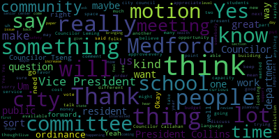

[Lazzaro]: 15 to 20 minutes?
[Lazzaro]: Yeah.
[Lazzaro]: So this is a follow-up report that you have in your packets.
[Lazzaro]: It's updated with the most recent numbers.
[Lazzaro]: We pulled the numbers from Mary Jo's accounts on Friday.
[Lazzaro]: So this is everything is up to date as of now for the student activities accounts.
[Lazzaro]: And Ms.
[Lazzaro]: DiBenedetto requested that it be on the agenda so we can field any questions you all have.
[Lazzaro]: Okay.
[Lazzaro]: So this is a different list.
[Lazzaro]: This is not the 501c3s.
[Lazzaro]: I presented last time on the 501c3s that are registered.
[Lazzaro]: All right.
[Lazzaro]: This was a follow-up just because, yeah, the request was, so we see the 501c3s.
[Lazzaro]: What about the student activities?
[Lazzaro]: And we said, OK, we'll give you the student activities.
[Lazzaro]: So this is the rest of them.
[Lazzaro]: So we have, in a separate document, the 501c3s.
[Lazzaro]: And then we have this.
[Lazzaro]: And the organizations that are neither, we can't keep track of them.
[Lazzaro]: because they're not something that we're aware of, unless they tell us.
[Lazzaro]: But even then, we have no jurisdiction over them, so they can kind of just collect money and use it the way they want to, unfortunately.
[Lazzaro]: We can't really, we can't track them down.
[Lazzaro]: So that would be, as I said when I presented in February, that will be done yearly in October, and I can pull the student activities, most updated student activities numbers as well together when I do that in October, if that's okay as an ongoing thing.
[Lazzaro]: It's on a spreadsheet.
[Lazzaro]: Yeah.
[Lazzaro]: Of the student activities or the...
[Lazzaro]: Yeah, well, or if they change leadership in the beginning of the year around September 1st, we'll give them time to settle and then get the information.
[Lazzaro]: As far as the papers that are in committee from prior councils, prior years, how do they come forward to be discussed as part of this committee?
[Lazzaro]: There is sort of an idea around the timing of things though, right, with the conversations we've been having about spreading stuff out.
[Lazzaro]: So do you have a thought in mind about how we should structure our kind of priorities for bringing up the
[Lazzaro]: What I'm getting at is I would like to see the background on all of this stuff, all of the stuff from the stuff that's tabled or in committee.
[Lazzaro]: I'd like to see all the background on this.
[Lazzaro]: But I don't want to try to see everything immediately, especially as we have these, especially like the extended leave with illness bank.
[Lazzaro]: I know at the family medical leave being something that we're going to sort of think about talking about 2025, right?
[Lazzaro]: Yeah.
[Lazzaro]: Those are things that I think are important.
[Lazzaro]: So, yes.
[Lazzaro]: Just a procedural question.
[Lazzaro]: So do we need to do anything about the budget ordinance from this committee before it can go to the regular meeting on the 27th?
[Lazzaro]: This is going to happen on February 27th again, and we'll talk about the budget ordinance, and then move it out, and then we'll talk about it in the regular meeting in March, probably.
[Lazzaro]: I was just seconding.
[Lazzaro]: I would just say that it feels like everything follows from whatever that announcement is going to be.
[Lazzaro]: Like, none of the rest of this stuff can happen until we have a clear timeline on a clear description of all of the larger amounts of money that may be coming down the pike for us.
[Lazzaro]: I think the greater transparency and the greater clarity we can have to share with the public, the sooner the better.
[Lazzaro]: I don't, I feel like I don't know.
[Lazzaro]: So I feel like people, just general Medford residents aren't, don't know anything.
[Lazzaro]: So I'm eager, I'm excited and eager to hear more about that.
[Lazzaro]: When do you think that announcement will be made?
[Lazzaro]: Okay.
[Lazzaro]: Awesome.
[Lazzaro]: Present
[Lazzaro]: Could you talk a little bit more about what you just said about charter schools?
[Lazzaro]: I was not aware about there being a reimbursement for charter school tuition.
[Lazzaro]: I thought we only paid out for charter school tuition when students attend charter schools that would normally attend Medford public schools.
[Lazzaro]: reimbursements for various things, accounting for the small reimbursement for the charter schools.
[Lazzaro]: I see.
[Lazzaro]: I just thought that might be a cool new program I hadn't heard about yet.
[Lazzaro]: No, it's part of the formula.
[Lazzaro]: Not the case.
[Lazzaro]: OK.
[Lazzaro]: Cool.
[Lazzaro]: Second.
[Lazzaro]: President Bears, are you able to answer questions if you know the answer?
[Lazzaro]: Do the firefighters have a contract right now?
[Lazzaro]: Are they working with a contract?
[Lazzaro]: My understanding is yes, there's a signed contract.
[Lazzaro]: Okay.
[Lazzaro]: The change in the designation of the fire chief, what impact would it have on the rank and file firefighters, do you know?
[Lazzaro]: So it wouldn't have an impact on anybody except for the fire chief.
[Lazzaro]: My understanding is when everybody called out sick at the same time early this month, that since it's the fire department and there can still be fires and disruption and emergencies that
[Lazzaro]: Somebody will get called in to cover those shifts and those people that get called in get paid overtime.
[Lazzaro]: Do you know if that's true?
[Lazzaro]: My belief is that what happens is when you call in sick, then somebody who is not scheduled
[Lazzaro]: to work that shift comes in and fills in that shift but gets paid overtime.
[Lazzaro]: And that is why it was so much more expensive during that time.
[Lazzaro]: So what appeared to be a coordinated call out meant that it cost a significantly larger amount of money to the city.
[Lazzaro]: The reason I'm saying this in explicit terms is because I think most people in Medford wouldn't understand that to be the case because at most jobs,
[Lazzaro]: if you're a shift worker, if you work in retail or restaurant, and you fill in for somebody, you just get paid normal wages that you would be paid on any other day.
[Lazzaro]: But my understanding is that in the fire department, when you call at six, somebody else comes and fills in that position, but you get paid time and a half or double time something over time.
[Lazzaro]: I just want to clarify that.
[Lazzaro]: So
[Lazzaro]: I think that there is a possibility that if a fire chief comes in who is from a different department, it would have to be somebody who has worked in a fire department and has that experience.
[Lazzaro]: They would be maybe somebody that would say, oh, hey, maybe if everybody called out sick one day, that would be something that we would have to discuss.
[Lazzaro]: that wouldn't be something I would be comfortable with happening on an ongoing basis.
[Lazzaro]: Maybe I wouldn't want everybody to then get paid overtime to make up a coordinated call out, even though we have a contract, even though it's not a strike, even though there is no, there does not seem to be an ask.
[Lazzaro]: There doesn't seem to be any reason for that coordinated call out.
[Lazzaro]: And, excuse me, no, no, you may not.
[Lazzaro]: Alleged?
[Lazzaro]: What I'm saying is if there was a fire chief who was not part of civil service and who came in from an outside fire department, I believe that the likelihood of a situation like what happened earlier in February would be much less.
[Lazzaro]: I would, if there's possibility for the administration to speak to that.
[Lazzaro]: if the administration could speak to that, I would appreciate it.
[Lazzaro]: Just about the overtime issue is that if you can correct me if I was wrong about that.
[Lazzaro]: Yeah, my question was if firefighters call out sick and somebody has to come in and fill in for the firefighters that are not in attendance, do the firefighters that have come in to fill in, they get paid overtime, is that correct?
[Lazzaro]: Uh, yes, thank you.
[Lazzaro]: We met and discussed, um, uh, the governing agenda and what is, uh, will be part of our committee going forward this year.
[Lazzaro]: Um, and took some extra time talking about, uh, potential, uh, Medford warming center and what.
[Lazzaro]: sort of needs there are that have arisen in the city.
[Lazzaro]: I invited Pastor Jerry Whetstone to attend the meeting and he talked about what the Malden Warming Center, he's the executive director at the Malden Warming Center, and what he finds the needs in Malden to be.
[Lazzaro]: And we spoke with some members of the Medford Board of Health and Planning Department and
[Lazzaro]: talk to just a preliminary discussion of what would be involved in that.
[Lazzaro]: And the next steps of that will be discussing space, and also the possibility of doing of exploring it as a joint regional project with Somerville, Arlington, other cities.
[Lazzaro]: Um, next steps for public health and community safety committee would be to talk about a wildlife feeding ordinance from Councilor or Council Vice President Collins.
[Lazzaro]: So that's on the, the next agenda.
[Lazzaro]: And that's, that's it for me.
[Lazzaro]: I was just seconding it.
[Lazzaro]: Can I second from Zoom?
[Lazzaro]: Yes.
[Lazzaro]: I was going to say something similar to what the director just said, which is that if there is a tax benefit to keeping storefronts vacant, I think that we should verify that with a tax professional before moving forward.
[Lazzaro]: If that means
[Lazzaro]: before moving forward with writing the basic first step home rule petition.
[Lazzaro]: I'm not sure if we need to do that before then or after when we're deciding if we want to pass this and then decide later as we're writing it.
[Lazzaro]: I'm not sure that exists either.
[Lazzaro]: Correct me if I'm wrong, but
[Lazzaro]: One, the second thing is, I wonder if some portion of this is sort of a, you can't squeeze blood from a stone situation, and that some of the storefronts might be vacant because of what was mentioned earlier, that there's some insurmountable amount of, you know, the building's not up to code and they can't afford to bring it up to code.
[Lazzaro]: and therefore it can't be rented out because the owners of the property are unable to reach enforcement levels of, you know, eliminate the violations.
[Lazzaro]: So I'm not sure how, I'm not sure we as a council are at the level of understanding.
[Lazzaro]: I don't feel myself that I'm at the level of understanding of the nuances of the situation yet, but also that being said,
[Lazzaro]: I could be convinced that this process, all that we need to do is have a basic understanding of the problem and that we are looking for approval from the state to begin greater understanding.
[Lazzaro]: Though I would personally feel more comfortable if we had more details and more data to back up how this would benefit us in filling this reference, particularly
[Lazzaro]: in my neighborhood in West Bedford Square that has a bunch of empty storefronts right now, which is unappealing.
[Lazzaro]: So I do understand the need for this.
[Lazzaro]: I agree that there is a need for it.
[Lazzaro]: And I'm not sure that I can point to, like, add a spreadsheet or presentation that would make me see more clearly that this is the solution that's going to get us there.
[Lazzaro]: I would feel more comfortable.
[Lazzaro]: So every elected official has an obligation to tell their constituents what they're working on, and we have been kind of remiss in not carrying out that part of our job thus far.
[Lazzaro]: So what I would say about what happened last night is we voted on, so for example, about the
[Lazzaro]: real estate transfer fee.
[Lazzaro]: I would say last night at the meeting, we heard public comment and we voted to send the real estate transfer fee to the planning and permitting committee.
[Lazzaro]: which is what happened.
[Lazzaro]: If that's what we, like, if that's the information that we were sharing in the newsletter, that's how I would present it.
[Lazzaro]: But every government, every elected government official is sharing information with their constituents about what work they're performing.
[Lazzaro]: And constituents can be in favor of that work or not in favor of it in the same way that we would share information about like the vote to,
[Lazzaro]: in favor of a ceasefire, that then we shared a letter that we sent to our federal delegation that was then shared with President Biden.
[Lazzaro]: We would just share it as like, this is what we voted on and this is what was passed.
[Lazzaro]: And these were the other things that happened during the meeting.
[Lazzaro]: We would just, I think that's how it would go.
[Lazzaro]: And one of the reasons why we would have a rotating group of
[Lazzaro]: I'm Councilors participating in this is so that it wouldn't really be editorialized, but it's not.
[Lazzaro]: It's not really something that you can editorialize.
[Lazzaro]: Just kind of going through what we're what we're doing and how the votes went.
[Lazzaro]: If that clarifies things.
[Lazzaro]: One of the, I think one of the most important things that came out of the meeting last night to me was that a lot of people were uncertain about what was being discussed and there had been a lot of misinformation and rumors that had been going around misleading people and a lot of people were here because they were angry about something that was not true.
[Lazzaro]: was not true information about what we were going to be talking about, that I learned from talking to people after the meeting.
[Lazzaro]: I think we could have avoided that if we had been already implementing something like this kind of system.
[Lazzaro]: If we had already had stuff on social media that was clarifying the stuff, we could have headed off some of those misinterpretations of what we had been trying to do.
[Lazzaro]: So I'm really excited for this kind of process to avoid situations like that in the future.
[Lazzaro]: I also think that the short video format will be really good for that.
[Lazzaro]: It'll catch people's attention and it'll be able to clarify things really quickly as you're like scrolling through and it's part of your day.
[Lazzaro]: Not everybody has like a big chunk of time to devote to learning about what's going on in city council or what's coming up in city council.
[Lazzaro]: that is going to apply to their life, but they might have 30 seconds to see, oh, there's gonna be a discussion that's really important to me coming up.
[Lazzaro]: I'd like to be at that meeting.
[Lazzaro]: And if it doesn't apply to them, or if it's something they already like the idea of, and they sort of trust us to go ahead, then they know about that too.
[Lazzaro]: So I think all of these things are really important going forward, and it's just gonna help us all work together to make sure that we're doing things
[Lazzaro]: work for the most people possible.
[Lazzaro]: I would agree.
[Lazzaro]: I like where your head's at.
[Lazzaro]: In the same way that we would want to have hard copies for people that aren't connected, we need to be thinking in a progressive way about folks that are connected in a different way.
[Lazzaro]: I just would want to say that if our content is going to be functionally similar
[Lazzaro]: and start with the newsletter content, I think maybe this meeting is gonna have to like top off with the newsletter and then we should come back to social media next time.
[Lazzaro]: I feel like Councilor Tseng is taking on a lot of responsibility for these tasks, and I feel like it's a little unevenly distributed.
[Lazzaro]: Would you like to not have to do a direct social media policy, and maybe I could do it, and just put something together that we could review as a committee next time?
[Lazzaro]: I'd be happy to.
[Lazzaro]: So I'll motion that I can draft a social media policy for the committee to review at our next meeting.
[Lazzaro]: Settle down.
[Lazzaro]: Um, yes, so the sounds great.
[Lazzaro]: Is there anything that you would need from us for authorization to do this?
[Lazzaro]: Or is it is it a city program that you would be able to implement?
[Lazzaro]: I guess I'm the attachment that we have in the packet.
[Lazzaro]: is about your position, but not about the program that you're describing.
[Lazzaro]: Is it a program that exists elsewhere or not really?
[Lazzaro]: cool well it sounds really awesome to me i definitely think that there's a place for programs like this uh i i think that there are a lot of situations where people who are really on the very low end of um sort of the economic ladder will have a lot of services that are available and then there are people that don't require any services but there are people that are somehow in the middle that you sort of experience some difficulty they kind of
[Lazzaro]: Yes, ma'am.
[Lazzaro]: So this does sound like a program that would be really beneficial.
[Lazzaro]: And if there's a known issue, I'm I think that it's a great idea.
[Lazzaro]: I guess what I'm curious about is how we can, you know, facilitate the process and how we can make sure that it's, you know, something that is
[Lazzaro]: Legal, I don't know.
[Lazzaro]: Okay, well, I would be happy to make that motion the motion to send this proposal to legal counsel so that we can, you know, facilitate this programs execution.
[Lazzaro]: Sorry, just to quickly reply, um, uh, the only reason I put that in is because there were, um, there was like no opposition in the chambers to that particular piece of legislation, which was unique for our, which, you know, the Councilors know, uh, that is unique for our experience when we are presenting, um,
[Lazzaro]: a piece of legislation.
[Lazzaro]: So that seems sort of safe to me.
[Lazzaro]: But that is a super fair point.
[Lazzaro]: Councilor Callahan and I appreciate you bringing that up.
[Lazzaro]: So I definitely support us pulling that out.
[Lazzaro]: Um, I haven't thought about it that way.
[Lazzaro]: That's, that's definitely I would agree with that.
[Lazzaro]: Um, so yes, agreed.
[Lazzaro]: That's totally fine.
[Lazzaro]: As the first not-Councilor-Leming person to write a newsletter, I was experimenting with how much of my own voice we were going to have be part of this.
[Lazzaro]: So I'm comfortable with removing any of the non-facts in here.
[Lazzaro]: And also, I guess this is something for us to discuss as a committee.
[Lazzaro]: How much of the newsletter is
[Lazzaro]: And now we don't weep.
[Lazzaro]: To also to articulate just a small bit of my background, I used to write literal humor pieces for the internet.
[Lazzaro]: So this is the least I could have possibly done.
[Lazzaro]: And it's still, I understand, too much.
[Lazzaro]: So that all being said, we can remove all of the anything that's anything but exactly what happened.
[Lazzaro]: That being said, I guess I do wonder, what is the newsletter besides a list of what happened?
[Lazzaro]: And I guess the answer is nothing.
[Lazzaro]: It is just a list of what happened.
[Lazzaro]: And it's because people don't know what happened.
[Lazzaro]: And that's what we're communicating.
[Lazzaro]: We're telling people what happened so that they know.
[Lazzaro]: So I do want people to be interested, but the point isn't for people to be entertained.
[Lazzaro]: It's just for people to be made aware of something.
[Lazzaro]: So, understood.
[Lazzaro]: I'm going to call this meeting to order.
[Lazzaro]: And we will do a roll call vote.
[Lazzaro]: This is a the February 13 2024 meeting of the Public Health and Community Safety Committee of the Medford City Council.
[Lazzaro]: Thank you all so much for being here.
[Lazzaro]: Clerk, can you please call the roll?
[Lazzaro]: Present.
[Lazzaro]: Present.
[Lazzaro]: Five present, zero absent.
[Lazzaro]: This meeting is called to order.
[Lazzaro]: So the first item on our agenda is
[Lazzaro]: I'm just reviewing our 2024 2025 council governing agenda, which is just all of the papers that we are.
[Lazzaro]: We have in this committee.
[Lazzaro]: The other thing that is on this agenda is something that I was hoping to discuss today.
[Lazzaro]: And I've invited a number of people here to talk about.
[Lazzaro]: So I'm hoping to discuss that first, which is the paper 24-023, which is a warming and or cooling center for adults experiencing homelessness in Medford.
[Lazzaro]: Then we will get to talking about the governing agenda after we review that if that's okay with everyone.
[Lazzaro]: Um, the.
[Lazzaro]: Is that all right with the committee members if we talk about the warming center 1st.
[Lazzaro]: Just because we have a bunch of guests here.
[Lazzaro]: Okay, so I'm just going to read through the resolution 1st, and then we will get to a couple of.
[Lazzaro]: folks here to speak.
[Lazzaro]: Actually, there was also Councilor Collins had something that she wanted to speak about the wildlife feeding ordinance, which is not officially on the agenda, but we're going to get there as well.
[Lazzaro]: So Councilor Collins need not be concerned.
[Lazzaro]: So, paper 24-023 warming cooling center for adults experiencing homelessness be it resolved that the Medford City Council
[Lazzaro]: By the Medford City Council, let the City of Medford explore the options, cost, and requirements to open a warming and cooling center for adults experiencing homelessness in December 2024.
[Lazzaro]: Be it further resolved that the Medford City Council invite representatives from the administration, including the Board of Health, along with stakeholders in our community and in neighboring communities to attend meetings on this topic.
[Lazzaro]: I thought we would dive right in and try to do this as quickly as possible.
[Lazzaro]: I have some understanding of how long it can take to kind of gear up for something like this because.
[Lazzaro]: I've worked with Pastor Jerry Whitestone who is in attendance at the Malden Warming Center for the past few years, and it can take some lead time and in anticipation of trying to get everything together by next winter.
[Lazzaro]: I'd like to start talking about it as soon as possible.
[Lazzaro]: So, here with us today are Marianne O'Connor, who is one of our representatives from the Medford Board of Health, as well as Penny Funioli and Alicia La Gambina.
[Lazzaro]: And Alicia hunt, who is from the planning department who I thought maybe couldn't be here, but maybe since we're on zoom and maybe basketball's canceled is able to be here, which is exciting.
[Lazzaro]: But just to give some background on some conversations I've had.
[Lazzaro]: I spoke with a woman named Karen from Somerville.
[Lazzaro]: Somerville and Revere are two cities in our region that have recently opened warming centers by contracting with a nonprofit called Housing Families.
[Lazzaro]: And they are using city buildings
[Lazzaro]: to have overnight warming centers during the months of January, February, March.
[Lazzaro]: I think they both opened in, oh, Sophie Antoine is also here.
[Lazzaro]: Thank you, Penny.
[Lazzaro]: Health equity coordinator.
[Lazzaro]: Nice to meet you, Sophie.
[Lazzaro]: I have not met you in person yet, but thank you for being here as well.
[Lazzaro]: So, both of those cities are using their public buildings and are contracting with housing and families, and the woman that I spoke with from Somerville said that she was interested in the possibility of a regional conversation with Medford for future years.
[Lazzaro]: I don't think
[Lazzaro]: either, I don't think either Revere or Somerville is married to the model that they're using this year.
[Lazzaro]: Revere last year used a different location.
[Lazzaro]: They used their senior center last year, which is also a city building.
[Lazzaro]: They faced a lot of resistance last year, so I think everybody's just kind of
[Lazzaro]: feeling their way through.
[Lazzaro]: I can also say that the Malden Warming Center did a lot of feeling its way through the first three or four years of its existence.
[Lazzaro]: And a lot of the work that you do in this kind of space involves a little bit of trial and error and learning what works and what doesn't in the process.
[Lazzaro]: So I would like to invite
[Lazzaro]: First, if I can, Pastor Jerry Whetstone to speak just for a couple of minutes about maybe just to give us a little bit of background on the Malden Warming Center, how it started and you can just give us like a couple minutes of description of of what we do at the warming center and where the.
[Lazzaro]: uh, this, this sort of being a high level conversation about, like, what the needs are in the region and, and where we came about, uh, where the warming center, um, began and where we are now.
[Lazzaro]: Um, then we can sort of start talking about how Medford can fit in that puzzle piece.
[Lazzaro]: Sorry.
[Lazzaro]: Thank you, Pastor Jerry.
[Lazzaro]: I appreciate that.
[Lazzaro]: Councilor LeMang.
[Lazzaro]: Um, there's also the, uh, uh, Malden recovery coaches are, um, they staff, uh, a portion of the night.
[Lazzaro]: So they're pretty employees and we'll have like two or three.
[Lazzaro]: If I could ask you, Councilor Leming, to pause on that question and redirect to Marianne O'Connor or Penny Funigalli to ask if you all could give us a little, or actually Alicia Lagumbina as well, if you all would maybe be able to address what I would describe as the needs of Medford residents that you're
[Lazzaro]: that you witness in, you know, sort of day-to-day interactions now and sort of what you generally tell them when you do refer people who are struggling with housing instability or eviction, things like that in the winter.
[Lazzaro]: Dennis anything?
[Lazzaro]: Councilor Collins.
[Lazzaro]: Yeah, I would definitely agree with that.
[Lazzaro]: And I can also say that in my experience in Malden,
[Lazzaro]: Everybody who's at the Malden Warming Center definitely didn't go to Malden High, but a lot of them did.
[Lazzaro]: And sometimes they know one of our volunteers who was a longtime high school principal at Malden High, and sometimes they know each other from when they went to high school.
[Lazzaro]: But I also spoke with one of our guests.
[Lazzaro]: I was there.
[Lazzaro]: I did check in last night.
[Lazzaro]: And he went to Medford High, and he was telling me about his house that he grew up in, that it was his parents' house.
[Lazzaro]: where it was located, like across the street from St.
[Lazzaro]: Clement's and what color it used to be and what color it is now.
[Lazzaro]: And, you know, he had roots in Medford.
[Lazzaro]: And, you know, it's like, well, he's in Malden now because that's where the warming center is.
[Lazzaro]: So, you know, you kind of wherever you grow up, you go to the place where the services are available.
[Lazzaro]: So, you know, it's it's the responsibility and the duty of everybody in the region to be kind of working together and making sure that we're all
[Lazzaro]: doing the best we can for the people that are around us.
[Lazzaro]: And I wonder if, Marianne, if you might be able to speak to maybe a conversation that you had with Somerville about the possibility of a regional discussion.
[Lazzaro]: None of this is really going to end up with us making any concrete
[Lazzaro]: Um, decisions tonight, but I am hoping for us to, like, begin a conversation and really, um, maybe hopefully, uh, I think the next step will be like a more solid, uh.
[Lazzaro]: I think the next conversation will be about what kind of space we might need or have access to, but, um.
[Lazzaro]: It sounds like running out of ARPA funding is going to be a problem for everybody, everywhere, in a lot of ways.
[Lazzaro]: So that's going to be something to keep in mind.
[Lazzaro]: I'm really happy to hear about the concept of state funding being more available for regional projects, though.
[Lazzaro]: That sounds like a really good idea.
[Lazzaro]: And another thing to keep in mind is that definitely if people find out that something is one town over, but it's available and you don't have to show paperwork, that makes sure that you have a connection.
[Lazzaro]: I do know that there was a shelter in Cambridge that established a new rule at some point.
[Lazzaro]: We had a guest last year who was trying to get a little bit more of a solid.
[Lazzaro]: situation, Pastor Jerry, I'm not sure if you remember this, I think it was Mike, he was trying to get into one of the Cambridge shelters, but you needed like some kind of piece of mail that said that you lived in Cambridge.
[Lazzaro]: And it was like, but you're homeless.
[Lazzaro]: How do you have a piece of mail that says you live in Cambridge when you don't have a home?
[Lazzaro]: And it was like, he couldn't.
[Lazzaro]: So it was like, you were supposed to prove residency, but you don't have residency anyway.
[Lazzaro]: But then it was like, well, I'll go to Cambridge.
[Lazzaro]: It's like I would happily go to Cambridge.
[Lazzaro]: Anyway, Councilor Leming.
[Lazzaro]: Pastor Jerry.
[Lazzaro]: Yes, Penny.
[Lazzaro]: Yeah, I would agree with you.
[Lazzaro]: I've thought about that as a bigger picture thing.
[Lazzaro]: And the issue with the warming center, from my perspective, is that it catches folks right before they hit the pavement as a final.
[Lazzaro]: uh last gasp so it's it's definitely not the safety net that everybody deserves but it can be the last catch um of course we also need all the layers of safety net um but the the least we can do is make sure that you're not freezing to death so as a first as a first thing that's kind of
[Lazzaro]: That's kind of the first thing I'm thinking.
[Lazzaro]: And then we can start working on, you know, the Office of Housing Stability and making sure that we have like a fully staffed city hall that's that's like checking in on people and that, you know, you never end up getting evicted in the wintertime and having to go to a warming center.
[Lazzaro]: Maybe then we don't need a warming center like Pastor Jerry and I talk about sometimes where it's like, hey, maybe we just like
[Lazzaro]: make ourselves obsolete.
[Lazzaro]: So then we wouldn't even need to exist.
[Lazzaro]: Alicia Hahn, I'd love to hear your perspective.
[Lazzaro]: Jerry and I were just laughing because the building that hosts the Worming Center in Malden is also a daycare during the day.
[Lazzaro]: So we're familiar with that juggle and it's been challenging.
[Lazzaro]: And also that my kids go to an after school program that is also a daycare and is in a church.
[Lazzaro]: So it is also a functioning church.
[Lazzaro]: And one of the people that goes to that church is the kitchen coordinator for the Malden Warming Center.
[Lazzaro]: We have many, we got our fingers in all the little pots.
[Lazzaro]: It's a grace church.
[Lazzaro]: And they're like not everything's falling apart over there.
[Lazzaro]: So, you know, it's like an absolute crisis everywhere.
[Lazzaro]: Daycare is a big challenge.
[Lazzaro]: So it's another conversation for another probably city council meeting if I have anything to say about it.
[Lazzaro]: Councilor Leming.
[Lazzaro]: Honestly, probably.
[Lazzaro]: The requirements for a warming center are really pretty minimal.
[Lazzaro]: It doesn't, like the Malden Warming Center is probably more, it does more than it needs to because there's a full kitchen, but it just needs to be like a big room.
[Lazzaro]: I appreciate that.
[Lazzaro]: I want to go to Alicia Lagumbina and then I want to stop because if I keep talking about this, I could talk about this for a very long time.
[Lazzaro]: So I want to move on to one thing that Councilor Collins wanted to take off the table from the agenda.
[Lazzaro]: So Alicia Lagumbina and then I'm going to try to move on from this discussion and wrap it up.
[Lazzaro]: But yes, Alicia Lagumbina.
[Lazzaro]: Awesome.
[Lazzaro]: Okay, thank you so much.
[Lazzaro]: Sorry, Councilor Lohmann, can you repeat that question?
[Lazzaro]: Thank you all so much for giving us so much of your time and sort of an overview of our situation.
[Lazzaro]: I think there's a lot more to say.
[Lazzaro]: I think the Board of Health and the Planning Department does so much excellent work.
[Lazzaro]: And I really, really appreciate your partnership as we began talking about this.
[Lazzaro]: I just think it's something that's very important to me.
[Lazzaro]: It's something that I'm probably going to harp on about for quite a while.
[Lazzaro]: So I apologize in advance for everybody to everybody forever.
[Lazzaro]: But I think it's very, I think.
[Lazzaro]: Very important.
[Lazzaro]: I really appreciate everything that you do.
[Lazzaro]: And I really thank you for being here.
[Lazzaro]: And I hope that we can continue the conversation and make some progress.
[Lazzaro]: And Councilor Collins.
[Lazzaro]: So I know that Councilor Collins has prepared some materials for taking something off of the table for tonight.
[Lazzaro]: Councilor Collins, would you prefer to wait since it's already 8.15-ish or would you rather, would you like to wait or do you want to do it tonight?
[Lazzaro]: All right, let me so on the motion.
[Lazzaro]: Is there a 2nd on Councilor Collins motion to keep this paper in committee?
[Lazzaro]: On the motion of Councilor Collins to keep paper 240-010, I'm tired, it's been a long day.
[Lazzaro]: On the motion of Councilor Collins to keep paper 24-023 in committee, seconded by Councilor Leming.
[Lazzaro]: Mr. Clerk, please call the roll.
[Lazzaro]: Mr. Clerk, can you please call the roll?
[Lazzaro]: Yes.
[Lazzaro]: Yes.
[Lazzaro]: Motion passes.
[Lazzaro]: So next, would we, okay, let's, I would like to, yeah, let's, okay.
[Lazzaro]: Okay, great.
[Lazzaro]: Yeah, let's go over the Council Governing Agenda.
[Lazzaro]: Paper 24-006, offered by President Bears, resolution that each Council Committee review the 2024-2025 Council Governing Agenda as amended in the committee of the whole meeting.
[Lazzaro]: Okay, so we have a number of papers in committee, including
[Lazzaro]: One significant resolution to draft a wildlife feeding ordinance.
[Lazzaro]: If we would like to discuss that, do we want to go through the other papers first, or do we want to just jump straight to that, Councilor Collins?
[Lazzaro]: There are a number of sort of complicated ordinances.
[Lazzaro]: So there's the replication ban ordinance, face surveillance ban ordinance.
[Lazzaro]: There's one that actually that I know that we will not be addressing until
[Lazzaro]: April, the, uh, Medford police department.
[Lazzaro]: Um, oh, that's not even in here.
[Lazzaro]: Um.
[Lazzaro]: It's not even in here, so never mind if I may.
[Lazzaro]: Yeah, that would be great.
[Lazzaro]: I would be happy to, probably best to discuss the new ones quickly if we'd like, and then maybe decide what the timeline would be for probably as many as we can.
[Lazzaro]: Yeah, Councilor Collins, that would be great.
[Lazzaro]: Actually, before we do that, though, yes, Councilor Leming?
[Lazzaro]: Yes, yeah.
[Lazzaro]: Do I need to make you something?
[Lazzaro]: Okay, great.
[Lazzaro]: Yeah, you can screen share.
[Lazzaro]: Um, no, that would be great.
[Lazzaro]: Uh, I appreciate it.
[Lazzaro]: Sorry.
[Lazzaro]: Um, I mean, full disclosure here.
[Lazzaro]: I really was very focused on the warming center, um, discussion.
[Lazzaro]: And, um, so I'm happy for anybody else to take the steering.
[Lazzaro]: Um, but, uh, but yes.
[Lazzaro]: Um, yeah.
[Lazzaro]: So let's, let's dive in.
[Lazzaro]: So the focus of the public health and community safety committee, um, is emergency response, public health.
[Lazzaro]: Inspectional Services and Animal Control.
[Lazzaro]: The departments that are relevant are Health, Police, Fire, Building, DPW, and Civil Defense, so it does encompass a lot of significant departments in the city.
[Lazzaro]: Relevant City Ordinances being Chapter 6, Animals.
[Lazzaro]: Chapter 10, Buildings and Building Regulations.
[Lazzaro]: Chapter 22, Civil Emergencies.
[Lazzaro]: Chapter 34, Emergency Services.
[Lazzaro]: Chapter 42, Fire Prevention and Protection.
[Lazzaro]: Chapter 46, Floods.
[Lazzaro]: Chapter 54, Law Enforcement.
[Lazzaro]: And Chapter 58, Offenses.
[Lazzaro]: And Relevant City Regulations, Board of Health Rules and Regulations.
[Lazzaro]: Um, uh, Councilor Callahan has to take off and that is fine.
[Lazzaro]: Thank you so much for being here.
[Lazzaro]: Councilor Callahan.
[Lazzaro]: Um, major projects now we just discussed the warming center.
[Lazzaro]: Paper 24-023.
[Lazzaro]: And the goal of that is to start talking about it as soon as possible and for it to pilot during next quarter.
[Lazzaro]: So we just talked about that for an hour.
[Lazzaro]: We're going to not talk about it anymore.
[Lazzaro]: OK, so alternative emergency response and civil.
[Lazzaro]: Sorry, can you scroll down slightly?
[Lazzaro]: Oversight, is that what it says?
[Lazzaro]: Wonderful.
[Lazzaro]: Thank you.
[Lazzaro]: Yes, well, this section is just about a half dozen.
[Lazzaro]: Yes, we already covered the plant medicine decriminalization ordinance because we passed it on Tuesday.
[Lazzaro]: Right, Councilor Leming, would you like to speak to that?
[Lazzaro]: We have the overgrowth ordinance, which I believe was tabled at the last meeting but do we want to talk individual ordinances here or just kind of summarize, we can talk about individual ordinances Councilor Collins do you want to jump in on this one.
[Lazzaro]: Okay, Councilor Tseng, would you like to speak to the gender affirming care and reproductive health care protection ordinances?
[Lazzaro]: Wonderful.
[Lazzaro]: OK.
[Lazzaro]: Um, okay, uh, oversight and engagement.
[Lazzaro]: We have surveillance ordinance reporting, uh, Councilor Collins.
[Lazzaro]: I do appreciate lofty goals, though.
[Lazzaro]: I always appreciate big goals.
[Lazzaro]: Just a comment from HSNO got slowed down when we had legal review it and there were conflicts in the language.
[Lazzaro]: Emergency response equipment.
[Lazzaro]: Sorry, HSNO, I'm not sure what that refers to.
[Lazzaro]: Director Hunt, would you like to speak on that?
[Lazzaro]: Nice.
[Lazzaro]: Well, we appreciate being able to move things along in that manner.
[Lazzaro]: Excellent, that's good to know.
[Lazzaro]: So maybe we'll keep, maybe we'll keep April, but maybe, maybe May.
[Lazzaro]: Councilor Collins and I will discuss.
[Lazzaro]: Emergency response equipment replacement with the lead Councilor TBD.
[Lazzaro]: Would anybody have an interest in describing that?
[Lazzaro]: No takers.
[Lazzaro]: All right, I'm just going to read through it.
[Lazzaro]: Lead Councilor, it's TBD.
[Lazzaro]: Timeline, not a start until January 2025.
[Lazzaro]: Review capital plan for funding replacement of equipment for emergency responders.
[Lazzaro]: It's pretty self-explanatory and something to take up next year.
[Lazzaro]: Councilor Leming?
[Lazzaro]: Probably, I would think so.
[Lazzaro]: Yeah.
[Lazzaro]: Um, but also, you know, the budget will most likely be in flux and different at that point.
[Lazzaro]: So it'll probably be something that we'll be able to better assess closer to.
[Lazzaro]: 2025 trailers are.
[Lazzaro]: That makes sense.
[Lazzaro]: Excellent.
[Lazzaro]: Okay.
[Lazzaro]: Could you scroll up just a bit?
[Lazzaro]: Sorry.
[Lazzaro]: Yes.
[Lazzaro]: Okay, great.
[Lazzaro]: And then review relevant city ordinances and regulations.
[Lazzaro]: Excellent.
[Lazzaro]: Okay.
[Lazzaro]: So, Councilor Collins, would you like to take that paper off of the table and address it now?
[Lazzaro]: Do you think that there's time or do you want to wait for our next meeting?
[Lazzaro]: Excellent.
[Lazzaro]: So the plan being that we will review it.
[Lazzaro]: Review it in committee at our next meeting, and then it can be voted out and move to the regular if if we decide to move it to the regular after that.
[Lazzaro]: Yeah, that's a question on my on my behalf.
[Lazzaro]: Awesome.
[Lazzaro]: OK, great.
[Lazzaro]: Sounds good to me.
[Lazzaro]: Okay, is there anything else?
[Lazzaro]: Do we have any other discussion items?
[Lazzaro]: Yes, Councilor Collins.
[Lazzaro]: Do we have a second?
[Lazzaro]: Seconded by Councilor Tseng.
[Lazzaro]: Clerk, can you call the roll?
[Lazzaro]: That seems to be the practice that the other committees have been... Okay.
[Lazzaro]: It's not going in the garbage forever.
[Lazzaro]: It's just going to be placed on file.
[Lazzaro]: We can still see it.
[Lazzaro]: That is true.
[Lazzaro]: Okay, four yes, one absent, motion passes.
[Lazzaro]: Do we have a motion to adjourn?
[Lazzaro]: So moved.
[Lazzaro]: On the motion of Councilor Collins to adjourn, seconded by Councilor Tseng.
[Lazzaro]: Clerk, can you call the roll, please?
[Lazzaro]: Yes.
[Lazzaro]: 4 yes, 1 absent.
[Lazzaro]: Meeting is adjourned.
[Lazzaro]: Sort of to piggyback off what President Bears was saying, there are a lot of rules that the state sets for elections that I think it's valuable for us to keep in mind that
[Lazzaro]: Um, I'm not sure it's as necessary for us to try to be purging the voter rolls as much as it is that we can, um, help voters who want to vote on the day that they're there, even if they may be inactive in that moment, but they're living in Medford and they, uh, are able to get a provisional ballot.
[Lazzaro]: You know, these are the things that I, I worked, I worked the polls in 2020.
[Lazzaro]: Um, and I.
[Lazzaro]: observed a lot of that because a lot of people were very interested in voting at that time who may have been remiss on a few of their forms, but it was very important to them to vote in that election.
[Lazzaro]: So what I saw then when I was working there was that we had a lot of election workers kind of showing up.
[Lazzaro]: It was like the height of COVID.
[Lazzaro]: Everybody had masks on and was sanitizing.
[Lazzaro]: I was like running back and forth and sanitizing everything.
[Lazzaro]: And it was really amazing what our election workers were able to do and what our election staff was able to do.
[Lazzaro]: And I think if we can keep supporting this office, and this department, and this commission, then we can keep being able to pull that stuff off.
[Lazzaro]: But I don't think that...
[Lazzaro]: There are some things that happen at the state level, like what President Bears was talking about, where there are policies that, like, if you don't fill out your census, you get kind of, like, placed on a list, and then it's not as easy for you to vote in future elections, which I'm not sure that's something that we would, I mean, the lists get really funky and weird because of those policies, and I don't know that any of that is either here nor there.
[Lazzaro]: But what we want to be able to do is say, our city is ready to deal with that craziness on the day.
[Lazzaro]: And the more ready we are, the better.
[Lazzaro]: And the more support we can offer, the better.
[Lazzaro]: And pulling people off of the lists wouldn't be the highest priority, I think.
[Lazzaro]: Thank you and I appreciate everybody's flexibility with me being on zoom today.
[Lazzaro]: There are just two things I wanted to mention.
[Lazzaro]: This has been touched upon, but I think that the an important thing to acknowledge is that.
[Lazzaro]: Many of us.
[Lazzaro]: Well, I think all of us ran for office because of the value we have for the city and because we care a lot about our community, and because we have a certain level of love and care for our community members, but
[Lazzaro]: If these positions are all volunteer positions, it requires people to have enough personal income to not require an additional income source.
[Lazzaro]: And that requires a baseline level of income.
[Lazzaro]: And I don't think that's representative of the city.
[Lazzaro]: And I think we should just consider that one aspect of making sure that we're really
[Lazzaro]: having people representing the city that that truly represent the people that live here.
[Lazzaro]: The second thing I want to make note of is that just because other communities other surrounding communities are not paying their school committee members the same as they're paying their city Councilors.
[Lazzaro]: And I would respectfully disagree with Councilor Scarpelli I worked as the executive assistant to Superintendent Edouard-Vincent for a few years and with not this current city council but a city council a couple of years ago, that was made up of many of the same folks.
[Lazzaro]: And they work a tremendous amount.
[Lazzaro]: They were incredibly hardworking.
[Lazzaro]: I can tell you because I had to go to all the meetings, and it was a lot of meetings, and there are a lot of subcommittees and Committee of the Whole meetings every week.
[Lazzaro]: So it's, they're very hardworking.
[Lazzaro]: I'm not sure how it was when Councilor Scarpelli was on the school committee, but
[Lazzaro]: I will say that just because other communities aren't maybe necessarily doing the right thing by paying their school committee members the same that they're paying their city councilors doesn't mean that we shouldn't do it.
[Lazzaro]: I think being a leader in a group is a great thing to be and leading the way and saying, hey, these two bodies are
[Lazzaro]: equivalent in the accomplishments and the work that they're doing, and that's something that we're acknowledging and valuing, then I think that's something that we can stand up for.
[Lazzaro]: I'd be happy to second this.
[Lazzaro]: I would like to see the, I think, I just think I would want to see some clarity on the numbers a little bit more.
[Lazzaro]: Sorry.
[Lazzaro]: I'm not sure why my, my computer's being fussy.
[Lazzaro]: I would be happy.
[Lazzaro]: I would be happy to second this.
[Lazzaro]: I would just want the numbers to be a little bit more clear.
[Lazzaro]: Like, would we take all of the dollar amounts of the city council salaries and the dollar amounts of the school committee salaries, even them all out for this year.
[Lazzaro]: And then for next year and the year after and like, and then have them all be the same, but raise them up to the level of.
[Lazzaro]: whatever it would land at with uh Councilor sang's final level and then we everybody would be even yeah i mean that sounds like the idea given i do not know that we can legally do that and even if we were to do that the money would not be in the schools because they're two different budgets right okay so this is my this is my hesitation i really like the idea though
[Lazzaro]: Present.
[Lazzaro]: Present.
[Lazzaro]: I have more of a broad question.
[Lazzaro]: This being the newsletter draft for April and us having another week of April left and there being the possibility that we could pass a number of other
[Lazzaro]: items in the next few days.
[Lazzaro]: I am wondering, like, we have a regular meeting on the 30th.
[Lazzaro]: I'm wondering how we want to organize when these go out, month over month.
[Lazzaro]: At the last meeting we also discussed texting options, WhatsApp options, paper options, and translation options.
[Lazzaro]: So it was discussed extensively at the last meeting that we would make sure to prioritize serving underserved communities.
[Lazzaro]: It's a big priority of this process.
[Lazzaro]: We're doing a lot of back and forth right now, and I just want you to know that I see you having to do these updates at this moment, and it could be a little bit stressful.
[Lazzaro]: So I think maybe in an effort to not have perfect be the enemy of good, and that, I think, can also extend to not
[Lazzaro]: throwing the baby out with the bathwater, as far as the newsletter, and being afraid to try something because you're not sure it could reach everybody in town.
[Lazzaro]: I think that even if this version is not the very final, most perfect version, and as we keep learning and as we get feedback from residents,
[Lazzaro]: you know, we keep making it better as time goes on.
[Lazzaro]: I would like to, I'm not sure if I can, if I would make this as a motion, but I think I would like to speak with our DEI director and City Hall about how best to make sure we're, you know, I don't know why the sound is being weird.
[Lazzaro]: how best to, you know, for the purposes of this first newsletter or going forward, you know, how best to make sure we're trying to access as many people as possible.
[Lazzaro]: So I would be happy to do that, but I guess I would motion to speak with Director Nwaje about that.
[Lazzaro]: as we work to distribute the newsletter.
[Lazzaro]: But that's one motion that I have.
[Lazzaro]: A second motion is I would like to say this for me, clerk, as a motion.
[Lazzaro]: Make it sound
[Lazzaro]: Good.
[Lazzaro]: I think that we should bring it to the regular meeting or at our next meeting, potentially, so that we can approve it as part of the regular meeting.
[Lazzaro]: And once we have it in like a final form for this version.
[Lazzaro]: But again, it not having to be perfect, perfect, 100%.
[Lazzaro]: Because nothing's ever perfect when you're writing stuff.
[Lazzaro]: It's always a work in progress.
[Lazzaro]: Um, uh, that being said, I also would confirm for, uh, or agree or back up what Councilor Colin Callahan was saying about, um, I'm not sure if you were saying this exactly, but, um, maybe we can use some of our city council language, but maybe we can simplify some of it.
[Lazzaro]: Um, there's some terms that I think are confusing to a lot of our residents.
[Lazzaro]: I think home rule petition is confusing.
[Lazzaro]: I think even paper number can be confusing.
[Lazzaro]: I think a lot of people don't even know what a paper is.
[Lazzaro]: I think that
[Lazzaro]: Sending something to committee can even be confusing.
[Lazzaro]: Sometimes maybe there could be maybe there could be a glossary section.
[Lazzaro]: Maybe this isn't something that we do for the first newsletter, but maybe down the road.
[Lazzaro]: Maybe there's like a layman's terms version or like a like a quick summary version.
[Lazzaro]: Like what are the what are the need to knows in the beginning?
[Lazzaro]: What's the TLDR?
[Lazzaro]: in the beginning of the newsletter, or maybe that's just an event section that's like, what do you need to know?
[Lazzaro]: When are the regular meetings this month?
[Lazzaro]: What are the committee meetings?
[Lazzaro]: What do you want to try to get to?
[Lazzaro]: Sometimes we don't know, but we could at least let people know the really critical information so they don't have to know all the terminology.
[Lazzaro]: I know, I know.
[Lazzaro]: I'm giving myself kind of a lot of work.
[Lazzaro]: I'm realizing as the more I talk, the more work I'm giving myself.
[Lazzaro]: Too much brainstorming.
[Lazzaro]: Maybe there are some bad ideas.
[Lazzaro]: The reason that I would want to is just mainly because Councilor Scarpelli didn't feel comfortable approving it in committee and saying that it had not been on the regular meeting schedule.
[Lazzaro]: But I mean, if it doesn't pass our, I mean, we're here now, if it doesn't pass, it doesn't pass.
[Lazzaro]: And I understand.
[Lazzaro]: I have a motion.
[Lazzaro]: I have two motions.
[Lazzaro]: Sure.
[Lazzaro]: If you are prepared to receive them.
[Lazzaro]: No, we didn't get a second on my motion to send it to the regular meeting.
[Lazzaro]: Yeah, well, I have two more.
[Lazzaro]: I have another motion to approve this.
[Lazzaro]: To approve the newsletter written by Matt for May, April 2024 as amended.
[Lazzaro]: As edited.
[Lazzaro]: Okay.
[Lazzaro]: And to approve the draft schedule.
[Lazzaro]: That's included in the packet.
[Lazzaro]: Does that work for you Anna?
[Lazzaro]: Yes.
[Lazzaro]: Second.
[Lazzaro]: I think that sounds awesome.
[Lazzaro]: I think one a month is great.
[Lazzaro]: I would just ask, are all Councilors invited to attend?
[Lazzaro]: Would there be input from other Councilors on location and time and things like that?
[Lazzaro]: Or would it be just the subcommittee that would establish that?
[Lazzaro]: probably talking to people about what space is available and who can get a conference room and what building at what time, that kind of thing.
[Lazzaro]: Lawrence Lepore.
[Lazzaro]: Thank you.
[Lazzaro]: President Bears.
[Lazzaro]: I really appreciate this.
[Lazzaro]: I think it's incredibly transparent and helpful for the public as Councilor Callahan mentioned one thought concern I have is that as a new Councilor, I'm not 100% clear on what
[Lazzaro]: what projects are gonna reveal themselves to me over time.
[Lazzaro]: So I guess if we have some kind of idea about how we can slide things in, move things around, sort of jigsaw our way through this as things come up, not necessarily on the scale of a pandemic, but maybe when we learn, when I start to learn more about how different departments work, how people are working together and where there's a space for something
[Lazzaro]: that may be a little bit urgent or not really, but that would be something that we would wanna work on, but maybe that I don't know before January 18th.
[Lazzaro]: You know.
[Lazzaro]: I wanna be able to, you know, learn things as we're going and grow and change and have this be kind of a moving document.
[Lazzaro]: Great.
[Lazzaro]: Otherwise, love it.
[Lazzaro]: Love everything.
[Lazzaro]: Just a quick question about all councilors shall be considered as members of each standing committee.
[Lazzaro]: So if you're not a voting member, can you help contribute to a quorum or no?
[Lazzaro]: So you could just weigh in on something.
[Lazzaro]: Councilor Lazzaro.
[Lazzaro]: I appreciate you putting this on the agenda, President Bears.
[Lazzaro]: One of my jobs right now, I'm the assistant director of the Malden Warming Center, which is a seasonal shelter in Malden.
[Lazzaro]: It's an overnight shelter for people who are unhoused.
[Lazzaro]: And we are open from December 1 through March 30th yearly.
[Lazzaro]: And I can also say that in November, we get a lot of people calling us saying, are you open yet?
[Lazzaro]: Because it's cold in November too.
[Lazzaro]: We should be doing anything and everything that we can to make sure that people can stay in their homes
[Lazzaro]: when it's cold out, it doesn't even have to be below freezing for people to face a lot of health issues from exposure.
[Lazzaro]: We had a guest recently with, we're not a medical facility, we are run by volunteers and just people just with no training in any kind of medical things at the center that I work at.
[Lazzaro]: So when we have folks that have real medical issues, we frequently have to call ambulances.
[Lazzaro]: And we have a guest who has COPD, and he, just because of exposure from being outside, goes to the hospital really frequently, has a lot of breathing problems just from being outside during the day, even on days when it's not that cold.
[Lazzaro]: So it really is very dangerous for people.
[Lazzaro]: And if there is anything that we can do as a council, just small steps towards mitigating that for our residents, I think we should make sure that we're taking those steps.
[Lazzaro]: I appreciate you putting it on the agenda.
[Lazzaro]: I appreciate whatever the Board of Health can do, and this can be one thing in that direction.
[Lazzaro]: So thank you.
[Lazzaro]: Well, homelessness isn't,
[Lazzaro]: It isn't a municipal issue.
[Lazzaro]: It's like a regional issue.
[Lazzaro]: So it's hard to get numbers for how many people in a town are evicted, because when you need shelter, you go where the shelter is.
[Lazzaro]: So what I can say is some people are chronically homeless, and some people are homeless because they missed a payment, they had a short-term issue, or they were evicted
[Lazzaro]: because of an error.
[Lazzaro]: We had one guest last year who was evicted because of an error and was stuck in the courts, but was fully evicted out of his home for the entire winter.
[Lazzaro]: And he's now in a home, but it took him the whole winter.
[Lazzaro]: And he had a job.
[Lazzaro]: He went to work every day.
[Lazzaro]: He dressed really beautifully.
[Lazzaro]: He worked at a clothing store in the Prudential building.
[Lazzaro]: And he came every night that he could make it when he wasn't working too late to get in.
[Lazzaro]: But he did not seem like a homeless person.
[Lazzaro]: He was evicted because of an error.
[Lazzaro]: And he, you know, like was evicted in the winter.
[Lazzaro]: So it there are all different stories.
[Lazzaro]: We don't like have that much data about it.
[Lazzaro]: But it does happen really, pretty frequently.
[Lazzaro]: I think there isn't like, when there aren't people stopping you from doing something you just can still evict people.
[Lazzaro]: I wonder, Representative Donato, if you can speak to other similar shelters in different cities that have been set up.
[Lazzaro]: I know this crisis has been going on for a while.
[Lazzaro]: Have there been other temporary shelters very short term like this that have been set up in other places?
[Lazzaro]: Okay.
[Lazzaro]: My question is about the five-day
[Lazzaro]: sort of ideal limit.
[Lazzaro]: I think with the way that housing and bureaucracy and the way these things tend to go, my suspicion is that sometimes people will be somewhere for a little bit longer.
[Lazzaro]: And my concern about that isn't that
[Lazzaro]: the migrants will be in this shelter for longer, but that if we have presented it as such a temporary location that we're making it harder for maybe students who do need to enroll, if they end up staying for longer and they're out of school as a result for a long time, I wouldn't want to give the impression that they're blocked from attending school if they do.
[Lazzaro]: stay for a while, if they're there for two or three months, maybe.
[Lazzaro]: I don't know that that would happen.
[Lazzaro]: But in working with people who are trying to attain housing, often, even if you have something that's in the works, it takes a month just to roll over the next
[Lazzaro]: the last person to move out of somewhere, you know, like these things can kind of sometimes take time.
[Lazzaro]: So I'm curious about, you may not know this, but I'm curious about Medford's understanding of how we can treat the folks that are staying there as though they're residents of Medford while they're residents of Medford.
[Lazzaro]: Okay, got it.
[Lazzaro]: Thank you.
[Lazzaro]: Okay.
[Lazzaro]: of information I spoke with the mayor's office they are they're doing some plumbing retrofitting and they will have bathrooms smart bathrooms built and I believe what happens is it'll be five days
[Lazzaro]: her sort of family, and then they'll cycle through and it'll be the next group that will come in, it wouldn't be just open for five days, and then.
[Lazzaro]: Yes.
[Lazzaro]: Thank you.
[Lazzaro]: I really like the idea of communicating with people.
[Lazzaro]: I think we can do it in conjunction with the mayor's office method of communication, not at the same time, but since we are not
[Lazzaro]: Um, we don't, we don't do the same thing as the mayor, just like what Councilor Tseng was saying, you know, we're, we're, we're working in tandem, but not doing the same things.
[Lazzaro]: So it seems beneficial to me to be able to communicate in sort of a broad, um, generalized.
[Lazzaro]: Manner sort of big picture stuff that we're working on what we have going on next, um, seems like based on what.
[Lazzaro]: It seems to me like what we're trying to address here isn't, sorry about my cat, what we're trying to address here isn't that we are trying to make up for people, you know,
[Lazzaro]: trying to over-communicate.
[Lazzaro]: It's that we don't have a newspaper in town.
[Lazzaro]: It's that we're trying to make sure people have a high-level understanding of what we're trying to accomplish.
[Lazzaro]: There seems to be maybe a lot of confusion on social media about what we do and how people can access information from us.
[Lazzaro]: And we can probably communicate high-level,
[Lazzaro]: information to them in a way that's sort of similar to maybe the newsletter that the planning department puts out.
[Lazzaro]: They put out information about events related to planning and environment.
[Lazzaro]: They put out information that's relevant to the public.
[Lazzaro]: And it's high level and it's visually interesting.
[Lazzaro]: And I think that's
[Lazzaro]: testament to how their office is able to thoughtfully communicate with their constituents in a way that makes sense.
[Lazzaro]: I think we can do like that level.
[Lazzaro]: I really like the idea of both communicating on social media and also via the senior center newsletter, maybe just a link in the newsletter that people are already getting or something like that.
[Lazzaro]: And rotating who is in charge of it, I also like that idea.
[Lazzaro]: Something low key that's not, it doesn't have to go into detail and it doesn't have to editorialize, I think is a really, I think that we can make this happen in a way that says like, you know, this vote was taken, this is what will happen next.
[Lazzaro]: Simplicity and high level communication.
[Lazzaro]: Yes.
[Lazzaro]: I just wanted to say, after what Councilor Scarpelli mentioned, that it seemed like a good moment to mention that it sort of felt like a good bridge to the discussion of the diversity, equity, and inclusion conversation we were going to maybe get to at some point during this meeting, maybe today.
[Lazzaro]: But because if what we wanted
[Lazzaro]: With the understanding that not letting perfect be the enemy of good, that if we want to make sure that we're reaching everybody, even when there was a newspaper, that would have been maybe a barrier, that it would only be people that were subscribing to a newspaper that were able to access that information.
[Lazzaro]: So there would never be a situation where literally everybody would have access to information at the same level.
[Lazzaro]: But that being said, I think we would be able to address
[Lazzaro]: Um, the possibility that, uh, you know, maybe Francis would be able to tell us, like, how are people getting information?
[Lazzaro]: How are people best accessing?
[Lazzaro]: you know, public information about how they can, you know, find out what's happening in City Hall and how can we best access the people that need to hear about it.
[Lazzaro]: And, you know, that's, there are resources that we have access to in the city that we can utilize for those purposes.
[Lazzaro]: And maybe that can be a step one before we get into the newsletter.
[Lazzaro]: I'd love to just open this up for the committee to discuss possibilities.
[Lazzaro]: I spoke with our diversity, equity and inclusion.
[Lazzaro]: My God, my I'm so sorry.
[Lazzaro]: Our diversity, equity and inclusion director a few times and.
[Lazzaro]: she and I are both really excited about the prospect of talking about it as a council.
[Lazzaro]: One thing I have thoughts and concerns about is how to do it with the knowledge that we are subject to open meeting law.
[Lazzaro]: I believe there's possibility that we could do it either in smaller groups or
[Lazzaro]: Online or with.
[Lazzaro]: Council president, I know we don't have a city solicitor, but maybe we could do it with.
[Lazzaro]: somebody from KP Law or just like an advisor.
[Lazzaro]: I wouldn't want to do it if it would cost us additional funds to like, you know, contract out.
[Lazzaro]: But I do think that it would be really beneficial for us to utilize Director Nwaje because she is such a wonderful resource for us in the city.
[Lazzaro]: And because so much of our work has to do with the way that we relate to the people of Medford and the way that we interact with the public.
[Lazzaro]: Um, so, uh, I'd love to hear thoughts and feedback from the other, um, Councilors and, um.
[Lazzaro]: Yeah, that's that's that's where I'm at.
[Lazzaro]: Right, so my understanding of open meeting laws is if you're not discussing what's on an agenda, then you're not subject to open meeting laws.
[Lazzaro]: So I guess the only thing would be if somebody can monitor it and kind of keep you off the agenda, then you'd be OK, right?
[Lazzaro]: That's probably, if you do a very specific training,
[Lazzaro]: then it doesn't have to touch anything that's pertinent to an agenda for that term.
[Lazzaro]: You get to talk any time, I think, because you're the chair.
[Lazzaro]: Sorry, my internet connection is unstable.
[Lazzaro]: Did you say, are the training sessions people talking at the council, or is it interaction?
[Lazzaro]: I think that they would all,
[Lazzaro]: I think that probably what it would be would be different depending on what the topic is and what Director Nwaje would be bringing to the table.
[Lazzaro]: Based on my conversation with her, we were talking about different topics that would be pertinent to the time period that we would be having it.
[Lazzaro]: So it could be
[Lazzaro]: You know, every year there's something that kind of comes up, maybe something that's an issue that's prominent in in Medford, particularly during that time, maybe something that might have happened in town.
[Lazzaro]: So I think it would be.
[Lazzaro]: really variable.
[Lazzaro]: But I think we could speak with her, or if she would be hiring somebody that would be coming in as like a like a special kind of training, it might be there's so many different ways to look at diversity, it could be disability, it could be, you know, mental illness, it could be like,
[Lazzaro]: uh income diversity and it could be racial so there's there's or or sexuality or gender there's like a lot of different stuff that you would be doing and it could be like informational or it could be sort of like uh going through like um uh role playing so i i'm not sure i think there are a lot of different ways that it could be done okay thank you is there any public comment
[Lazzaro]: Also, I don't think you can make motions, Councilor.
[Lazzaro]: If we receive in place on file, does that mean we don't access it in committee anymore?
[Lazzaro]: Or can we still access it in committee?
[Lazzaro]: I have nothing to add.
[Lazzaro]: I thought that was beautiful.
[Lazzaro]: Thank you.
[Lazzaro]: I'm happy to be part of co-offering this to celebrate this Black History Month, and I'm happy to be part of a town that is historically a community that celebrates that.
[Lazzaro]: Yes, I had a meeting with Frances Nwaje.
[Lazzaro]: Can we make an amendment to this that says designee?
[Lazzaro]: Yes.
[Lazzaro]: Yeah.
[Lazzaro]: This is Paige.
[Lazzaro]: She's lovely.
[Lazzaro]: It was a really great conversation.
[Lazzaro]: I just think it would be...
[Lazzaro]: an absolute sort of bare minimum, one hour, twice a year, where we have a refresher, just maybe anything that might've come up in our interactions that could be something that we would be thinking about as a body.
[Lazzaro]: I'm curious about what it would take for us to meet, to convene.
[Lazzaro]: Would we be able to do it with open meeting laws being as they are?
[Lazzaro]: Would we have to do it in an open meeting?
[Lazzaro]: Or would we be able to do a training?
[Lazzaro]: So we would have to do a training here?
[Lazzaro]: We could do smaller groups separate.
[Lazzaro]: I would be curious to hear about exemptions to open meeting law for that purpose.
[Lazzaro]: But either way, I am happy to refer this to the committee on resident services, probably, yeah.
[Lazzaro]: I would appreciate that.
[Lazzaro]: But I would motion to request that the clerk does that research, but also that we refer this to the resident services subcommittee.
[Lazzaro]: I'm amenable.
[Lazzaro]: I will start by saying that I'm planning to refer this to the committee on public health and community safety.
[Lazzaro]: I have been emailing with our board of health folks with a number of stakeholders in the city.
[Lazzaro]: And I think the main concern, the main issue I anticipate is space.
[Lazzaro]: Somerville and Revere have both opened warming centers this winter, using a model that is based on the Malden Warming Center, which I help run in Malden, which is a nonprofit, but they use that sort of as a template.
[Lazzaro]: And those cities, Somerville and Revere, have opened their centers by contracting with Housing Families, which is another nonprofit.
[Lazzaro]: So the cities use city buildings and they pay housing families to operate the warming centers.
[Lazzaro]: So I spoke with
[Lazzaro]: a woman in Somerville who told me it costs them about $200,000 to contract housing families, and they use the armory.
[Lazzaro]: I'm trying to sort of figure out what the ballpark would be for Medford to run something like that for next year.
[Lazzaro]: But mostly what I want to do is figure out all of that in a committee meeting with all of the people that would be involved in
[Lazzaro]: making something like that happen, but I think the most critical thing for Medford will be space, and if we can find something that is either city-owned or affordable enough for us to make it happen, and if we have any kind of space in the budget, and I'm not sure if we do, or if we would need to do something where we try to just find a nonprofit or a church group that wants to try to run it for us, but
[Lazzaro]: The critical thing that I've observed from my work with unhoused adults in this region is that homelessness isn't a municipal issue, it's a regional issue.
[Lazzaro]: So once you lose your housing, you're not considered a resident of anywhere anymore.
[Lazzaro]: You just kind of go where the services are.
[Lazzaro]: So you're not bound by the lines in a city.
[Lazzaro]: And I've had guests at the Malden Warming Center that I knew from Medford because
[Lazzaro]: I knew them from town.
[Lazzaro]: So I know that there is need in Medford.
[Lazzaro]: And I know that we could help a lot of people.
[Lazzaro]: And I know that we could partner with other folks in the region.
[Lazzaro]: And we could all do a lot of good.
[Lazzaro]: So I look forward to having deeper conversations with people once we can spend more time in committee talking about it.
[Lazzaro]: Yeah, it occurs to me that a lot of the projects I've been thinking of in the public health and community safety are going to overlap a lot with resident services.
[Lazzaro]: But I think it's probably just a matter of picking one that makes the most sense.
[Lazzaro]: If somebody is interested, they're not on that committee, but they're interested in that particular issue, they come to that meeting, they can speak on it.
[Lazzaro]: It may eventually, maybe it goes to committee of the whole after, would that be an option?
[Lazzaro]: Yeah.
[Lazzaro]: Okay.
[Lazzaro]: just this is just a procedural question but when uh if november 2024 so if the community benefits agreement ordinance the goal of is to start that november 2024 is the idea that you would present it to in a regular meeting around that time or or anytime
[Lazzaro]: And then the idea being that that project can start.
[Lazzaro]: Yeah, for 2024.
[Lazzaro]: Okay.
[Lazzaro]: Yeah.
[Lazzaro]: I just have one.
[Lazzaro]: I also admire how many real already established ordinances are in that committee.
[Lazzaro]: And I have a goal for the rest of the committees to look that way after this meeting, maybe, and maybe in a little while.
[Lazzaro]: But that one seems really nicely like a benchmark for us, like a nice template for us to build on.
[Lazzaro]: I'm so eager to get started on working on these
[Lazzaro]: items.
[Lazzaro]: The warming and cooling center in particular is something that's really important to me at a personal level, but I can say that the timeline in my mind would be to start talking to relevant parties after this winter is over and talk about implementing a process for next winter.
[Lazzaro]: I have a question for the rest of the council about
[Lazzaro]: with a new major project that hasn't happened in the city yet.
[Lazzaro]: How, as far as proposing something like this, does it start with talking to appropriate department heads and, you know,
[Lazzaro]: landowners and stuff like that before you're making a motion on the floor?
[Lazzaro]: Or is it like, we're going to do this thing and then everything comes after that?
[Lazzaro]: You know, like what's the order of operations?
[Lazzaro]: President, yeah, I definitely wouldn't want to alienate or steamroll any of our partners.
[Lazzaro]: So that's a concern that I have when I'm trying to think through how best to manage estimating timelines for projects that, in a perfect world, we would be able to do as soon as humanly possible because there's needs right now.
[Lazzaro]: I hesitate to talk to everybody that I could possibly talk to before doing anything real, but at the same time, you know, it's a balance.
[Lazzaro]: So, but anyway, all of this to say, I'm very excited to get moving on all of these projects and get to work.
[Lazzaro]: Well, there's a model that's built a little bit around the way the Malden Warming Center operates, but is implemented in Revere and Somerville this year.
[Lazzaro]: Both cities have contracted with Housing Families, which is a nonprofit, but they've basically laid the foundation.
[Lazzaro]: They're doing it in their public buildings.
[Lazzaro]: So Revere is hosting it in the basement of their city hall, Somerville is using the armory.
[Lazzaro]: they have contracted with housing families, so they pay them.
[Lazzaro]: So I just need to, I, you know, like the fact that they've already sort of established some things with that, I think there's a lot of conversations that can be had, but it's probably, I think you're right, two pathways can put it on the agenda and also have the conversation, maybe invite folks since it's going to be on the agenda.
[Lazzaro]: And then maybe so because it's not fully fleshed out, it goes to committee after that.
[Lazzaro]: And then we go from there.
[Lazzaro]: I would love to have a conversation with them, too.
[Lazzaro]: We can talk about this offline, but if you have contact info.
[Lazzaro]: I had a question about the water and sewer infrastructure in the city.
[Lazzaro]: I know that it's bad.
[Lazzaro]: I guess I'm curious about if
[Lazzaro]: This might be just a conversation, not for right now.
[Lazzaro]: But there aren't, we don't really have anything on here about like,
[Lazzaro]: you know, looking into it carefully and like assess, I know, I happen to know two people in town who routinely have their basements flood, like atrociously flooded basements, like ruined everything over and over again, every time it rains in Medford and different parts of the city.
[Lazzaro]: And it's because of the infrastructure on those streets.
[Lazzaro]: It's just like not up to date.
[Lazzaro]: So, um,
[Lazzaro]: I'm curious about where sort of the city is, it seems like they're aware that it's a problem, if there's anything that we can do to nudge that along, or if there's something that I can suggest now that I'm seeing it laid out in front of me, it kind of occurs to me that that would be, this would be a place to mention it.
[Lazzaro]: Does the continued existence of the private ways continue to cause a problem with that?
[Lazzaro]: Because, I mean, I know we have a huge percentage of private ways in town.
[Lazzaro]: And are they less regulated still?
[Lazzaro]: Yeah.
[Lazzaro]: I can tell you for sure one is probably a private way.
[Lazzaro]: It's in the Heights and the other is, I don't think so.
[Lazzaro]: I don't think it's a private way, but it's it's down in West Medford by the river.
[Lazzaro]: I live on a private way.
[Lazzaro]: Present.
[Lazzaro]: I found them in order and I motion to approve.
[Lazzaro]: Yes.
[Lazzaro]: Yes.
[Lazzaro]: Yes.
[Lazzaro]: I just want to voice my support for this as one of the faster growing minority groups in town, and I just think it's overdue, and I'm eager for this community liaison position to be created.
[Lazzaro]: So thank you for bringing this to us.
[Lazzaro]: Yes.
[Lazzaro]: When is free cash certified?
[Lazzaro]: So, but the impression I'm getting is that Councilor Scarpelli is concerned that there may be a deadline here about
[Lazzaro]: free cash.
[Lazzaro]: I'm confused about the time.
[Lazzaro]: If it's not done before June 30th, it cannot then be made until up to?
[Lazzaro]: Got it.
[Lazzaro]: Thank you.
[Lazzaro]: I think my priorities are fairly self-explanatory.
[Lazzaro]: It's important to me that we make sure that baseline we're not losing any of our departments that serve the basic needs of our residents that are especially vulnerable to the rising cost of housing and the rising cost of living in
[Lazzaro]: Medford, but also in Massachusetts and in the United States, there are rising levels of homelessness across the country.
[Lazzaro]: And I would love to see, in fact, increases to the budget and in our services that we offer to people dealing with housing insecurity, any kind of eviction protections, protections for people with low incomes.
[Lazzaro]: and protections for people dealing with mental health and addiction issues, but short of increasing the budget, it's my highest priority that we not see any cuts to those departments, anything that would relate to that.
[Lazzaro]: In addition,
[Lazzaro]: The school departments, I think I mentioned schools.
[Lazzaro]: I don't have it in front of me.
[Lazzaro]: I didn't bring my computer with me today.
[Lazzaro]: But the school budget needs to see an increase and at least needs to not decrease.
[Lazzaro]: I think that we're all most, I think most of us are in agreement about that, that the underfunding of Medford public schools is a pertinent issue and is something that is also one of my priorities.
[Lazzaro]: Thank you.
[Lazzaro]: From my own perspective, it's a little hard for me to process numbers in this.
[Lazzaro]: in this situation with the screens this way?
[Lazzaro]: Would it be okay if we could do it over email?
[Lazzaro]: Or is that a violation of OML?
[Lazzaro]: That seems like too much time.
[Lazzaro]: Councilor Lazzaro.
[Lazzaro]: Present.
[Lazzaro]: Councilor Lett.
[Lazzaro]: Councilor Stroud.
[Lazzaro]: Not a question, just a comment.
[Lazzaro]: I just wanted to say I love the idea of the free swimming lessons.
[Lazzaro]: It's so important for public safety and health to make sure our residents are able to swim.
[Lazzaro]: And I really support that.
[Lazzaro]: And if you need any backup or, you know, letters of support where you're writing grants or anything like that, I'd be happy to help.
[Lazzaro]: But that's an awesome initiative.
[Lazzaro]: Thank you.
[Lazzaro]: Thank you.
[Lazzaro]: Thank you for that summary.
[Lazzaro]: It was really helpful to hear everything laid out in that way.
[Lazzaro]: I was just a question for the chair.
[Lazzaro]: Given the communication from the chief of staff, it sounds like because of the capital improvement planning process for this year, it sounds like maybe
[Lazzaro]: this is a one-year delay in that one portion, would that be something that we could have an understanding that that would maybe be something that we could just set aside for the first year, and then we could approve everything going forward?
[Lazzaro]: Or on a yearly basis, we could sort of say, oh, there's one portion that we need to delay, and just an understanding that there may be various things that come up, but everything doesn't have to be
[Lazzaro]: There's no penalty if something happens and we can't necessarily see everything as clear as day.
[Lazzaro]: It's not like we're doing taxes and you get audited and you have to pay a fee.
[Lazzaro]: I think that understanding that we're all working together on trying to get the most transparent process possible and share all this information with the people of Medford so that there are no, it's not a surprise when we have the budget
[Lazzaro]: season upon us, that being the goal of everybody, then I wouldn't see any problem to understanding that something, especially in the first few years, may take a little bit longer or may have a couple of bumps in the road.
[Lazzaro]: I wouldn't anticipate that being an issue on my end.
[Lazzaro]: So as far as charter review, I think there's something to be said.
[Lazzaro]: I know that the Charter Commission is interested in continuing there.
[Lazzaro]: I know they took a lot of votes recently among themselves about their stances on a few of the issues that they've wanted to review, and I think they're preparing
[Lazzaro]: their presentation and their final sort of stuff, but they weren't going to be able to present all of their final recommendations until the end of this year.
[Lazzaro]: So that's, you know, 10 months away.
[Lazzaro]: And I think it would be beneficial for our committee to have kind of, to be working in tandem with them, like, you know, sort of developing our own thoughts and ideas at the same time, and then, you know,
[Lazzaro]: in some ways kind of acting as like a conference committee afterwards and combining ideas, taking some that might be recommendations from the commission and some from ours that make sense and presenting that all maybe to the state house after the fact.
[Lazzaro]: Just so that we're not wasting time, you know, trying to do everything one thing at a time, we can all be working at the same time towards the same goal.
[Lazzaro]: So I don't see why we wouldn't do that.
[Lazzaro]: That's just a thought.
[Lazzaro]: What is the timeline right now?
[Lazzaro]: I think we should move it up.
[Lazzaro]: I motion that we should move it up.
[Lazzaro]: Is there a- I don't know, maybe April even.
[Lazzaro]: I mean, it does sound reasonable.
[Lazzaro]: Do we have time to do that in April?
[Lazzaro]: Yeah, I, can I?
[Lazzaro]: I think that we're saying a lot of the same things with different words, but when I said in tandem, I meant like, we can start working while they're still working, basically.
[Lazzaro]: So, and since this stuff, this committee only meets once a month?
[Lazzaro]: committee only meets once a month.
[Lazzaro]: So we're, you know, it's going to take a while, I think we should just get started with what we can get started on when we can, and then, you know, acknowledge that it's going to just take a while.
[Lazzaro]: So yes, Councilman.
[Lazzaro]: Yeah.
[Lazzaro]: Another thing I will add is that these meetings have been really beneficial to me as a new Councilor, but also just as a private citizen seeing that many, most of the departments that have presented to us are basically just asking for a level of funding, but that the increases do not translate to level.
[Lazzaro]: There are necessary additions each time a department presents something that necessitates an increase
[Lazzaro]: And it really is adding up exponentially as all of these departments come together.
[Lazzaro]: I think if we had to do this all over the course of just a few nights, it would have been, I'm sure you guys experienced this before, it would have been so overwhelming to see it all compiled all at once.
[Lazzaro]: So I appreciate the bite-sized pieces.
[Lazzaro]: I appreciate everybody taking multiple nights out of there.
[Lazzaro]: of their lives to present this to us in easily consumable portions.
[Lazzaro]: So thank you to everybody.
[Lazzaro]: Yes, well, we discussed the wildlife feeding ordinance offered by Vice President Collins.
[Lazzaro]: It was something that was brought to her by constituents interested in
[Lazzaro]: to move it out of committee at this time.
[Lazzaro]: We are protecting public health and community safety.
[Lazzaro]: It's appropriate for the committee, and we did not vote to move it out of committee at this time.
[Lazzaro]: The two motions that came out of this meeting were to refer this version of the ordinance to keep the law for legal review prior to our next meeting on the
[Lazzaro]: re-circulate the document to relevant city staff, which it's been passed on now to the animal control officer, and we're going to keep this paper in committee for the time being.
[Lazzaro]: Are you able to explain the conditions that were offered by the Community Development Board?
[Lazzaro]: We held a public health and community safety committee meeting on Tuesday last week.
[Lazzaro]: The chief of police presented a report on the pilot program of the police department on body worn cameras.
[Lazzaro]: And there was a public comment and we received the report and placed it on file.
[Lazzaro]: Thank you.
[Lazzaro]: Yes.
[Lazzaro]: the first person I canvassed this summer.
[Lazzaro]: I went to his house, and he was the first person I spoke to.
[Lazzaro]: And he gave me really, really good advice.
[Lazzaro]: He said to make sure that you earn votes.
[Lazzaro]: You don't just ask for them, you have to earn them.
[Lazzaro]: So I appreciated that.
[Lazzaro]: We had a nice chat.
[Lazzaro]: I appreciate you being here.
[Lazzaro]: Present.
[Lazzaro]: Present.
[Lazzaro]: Present.
[Lazzaro]: Um, I think this is a great first step towards more environmentally appropriate behaviors across the city.
[Lazzaro]: And point of fact, I understand that the most environmentally conscientious way to take care of people's yards and what we do at my home
[Lazzaro]: that I own, not that that has an impact on anything, but we don't rake the leaves, we just leave them, and my yard looks very nice.
[Lazzaro]: And it's better for the ecosystem and the plant life and the insects and the wildlife as well.
[Lazzaro]: So that's always an option.
[Lazzaro]: That being said, I look forward to hammering out the details of
[Lazzaro]: you know, the word by word edits that we need to make to this.
[Lazzaro]: Is that something that we can do piece by piece?
[Lazzaro]: Do we have to make motions for each one?
[Lazzaro]: Okay.
[Lazzaro]: But yes, I'm excited about this.
[Lazzaro]: I think it's great.
[Lazzaro]: Especially I think the most significant one for the quality of life portion of it is one leaf blower operating on a property at a time.
[Lazzaro]: In my experience in West Bedford, what we have in the spring and fall is like four leaf blowers going
[Lazzaro]: at once, and it radiates in your skull, and it's very unpleasant.
[Lazzaro]: So that'll be great.
[Lazzaro]: Thank you for putting this forward, and thank you to former Council President Morell.
[Lazzaro]: So, yep, I'm a big supporter of this ordinance.
[Lazzaro]: Thank you.
[Lazzaro]: You could say operator, you could say responsible party.
[Lazzaro]: I think we should go with operator.
[Lazzaro]: Yes.
[Lazzaro]: Thanks, Councilor.
[Lazzaro]: Leming, I appreciate this kind of sort of weeding through all of the line by line details of this kind of stuff is what really can pull out opportunities for funding that we wouldn't have necessarily known we were missing.
[Lazzaro]: So I think that's really important and exciting that we can utilize these opportunities.
[Lazzaro]: So I'm excited about it.
[Lazzaro]: And I think you've done a lot of great work here and I don't have any
[Lazzaro]: any notes really.
[Lazzaro]: So I'm excited to get going.
[Lazzaro]: Test, test.
[Lazzaro]: Test.
[Lazzaro]: I've only said yes so far, so.
[Lazzaro]: Yes.
[Lazzaro]: I had raised my hand earlier.
[Lazzaro]: It doesn't matter.
[Lazzaro]: Councilor Scarpelli, I appreciate you mentioning something about the Resident Services Committee, that you had voiced the same concerns during that meeting, but then you had left the Zoom and didn't hear our responses, but I had offered to bring that paper to the regular meeting.
[Lazzaro]: It did not get a second, and it didn't get voted to come to the regular meeting, so it didn't pass.
[Lazzaro]: Um, I also offered to, uh, speak with our director of diversity, equity and inclusion, which did that motion did pass.
[Lazzaro]: And I spoke with her today about ways that we can best, um, take advantage of
[Lazzaro]: her and her expertise and our affinity groups and our different opportunities in the city to make sure that we're taking advantage of all the resources that we have at our disposal to make sure that the newsletter is reaching our residents to the best of our abilities.
[Lazzaro]: A few things that she mentioned were
[Lazzaro]: I understand the intention of the newsletters to be emailed, but also that we could have paper copies and we can bring them to events.
[Lazzaro]: Maybe we can distribute them along with the listening sessions once those are off the ground.
[Lazzaro]: Um, and then, um, something director noise I mentioned is, uh, bringing bringing paper copies to things like the Haitian flag ceremony that's coming up May 18th and meeting communities where they already are instead of requesting that folks come to us.
[Lazzaro]: Um so that's something that we discussed, but I would intend to
[Lazzaro]: But I would also reiterate what Vice President Collins says and hope that we can keep our comments on this to what's on the agenda.
[Lazzaro]: Councilor Lazzaro.
[Lazzaro]: I haven't, I don't know what this letter is.
[Lazzaro]: It's not on the agenda.
[Lazzaro]: I haven't read it and I can't find it online.
[Lazzaro]: Can we not talk about the letter anymore?
[Lazzaro]: Cause I literally, I don't even know what the letter is.
[Lazzaro]: It's not on the agenda and it's not included in the packet.
[Lazzaro]: So I don't feel equipped to discuss it.
[Lazzaro]: And it's not something that we were supposed to talk about tonight.
[Lazzaro]: No.
[Lazzaro]: From what I've read about the reasoning behind the interest in removing the protesters from the tough squad also is that I think that there can be some justifications made for use of force in removing protesters.
[Lazzaro]: I'm not saying that I necessarily agree with this, but that it would be for blockage of traffic or some
[Lazzaro]: danger posed to the public, but this is on Tufts property and only for the purpose of setting up for commencement.
[Lazzaro]: And I would definitely caution the Medford Police Department that it really doesn't seem to be the business of our administration or our Medford police to be involved in that.
[Lazzaro]: I think this is a big national movement that's happening and that students should be allowed to express their opinions and practice their First Amendment rights.
[Lazzaro]: And just as an anecdotal story, I was in the car listening to NPR when they were talking about police removing protesters from Columbia University.
[Lazzaro]: And my nine-year-old said, is protesting illegal?
[Lazzaro]: And I said, no, it is not.
[Lazzaro]: It is very much not illegal to protest.
[Lazzaro]: So that's all I'll say about that.
[Lazzaro]: Thank you.
[Lazzaro]: public health and community safety committee meeting.
[Lazzaro]: The Medford City Council, March 12th, 2024, 6 p.m.
[Lazzaro]: Clerk, can you please call the roll?
[Lazzaro]: Present.
[Lazzaro]: Five present, zero absent.
[Lazzaro]: This meeting is called to order.
[Lazzaro]: We just have one item on the agenda today.
[Lazzaro]: It is paper 23-449, a resolution to draft wildlife feeding ordinance brought by Vice President Kit Collins.
[Lazzaro]: So Vice President Collins, take it away.
[Lazzaro]: We can now, thank you.
[Lazzaro]: Thank you, Vice President Collins.
[Lazzaro]: have a couple of thoughts about this.
[Lazzaro]: It doesn't mention specifically anything about just I imagine there could be the potential that somebody maybe loses a cat or a dog and might be trying to lure them back.
[Lazzaro]: I think we might want to add maybe a sentence or two to the language saying that it's permissible for
[Lazzaro]: something in there that includes something about that, like are cats and dogs considered wildlife?
[Lazzaro]: And maybe if we can speak to, again, city staff, we absolutely understand, and there's leeway for more time for them to respond to this, but if the animal control officer has any feedback about anything to do with maybe feral cats that we might have in the city, I know there's a practice of,
[Lazzaro]: trapping feral cats in order to spay and neuter them, which may sort of, depending on how we are defining wildlife, we could probably just add a sentence that would say whether we want to include cats or dogs or not to the list here.
[Lazzaro]: We could amend it for that purpose.
[Lazzaro]: Just something to consider.
[Lazzaro]: I don't know if it's that much of an issue.
[Lazzaro]: We also have a nonprofit in Medford called Kitty Connection that does, I'm not sure if they do that work, but they do have like adoptable cats, and I think some of them may have been previously feral, so it might be something to look into.
[Lazzaro]: Any other comments from committee members?
[Lazzaro]: Yes, Councilor Tseng.
[Lazzaro]: Are there any other comments, Vice President Collins?
[Lazzaro]: Do you have anything else you want to add before I bring it to public comment?
[Lazzaro]: Thank you.
[Lazzaro]: Is there anyone from the public who would like to speak on this paper?
[Lazzaro]: Seeing none, are there any motions on the floor to move this forward?
[Lazzaro]: Yes.
[Lazzaro]: Councilor, Vice President Collins.
[Lazzaro]: Okay, on the motion of Vice President Collins to refer this paper to KP law prior to our next meeting, seconded by Councilor Callahan.
[Lazzaro]: All in favor.
[Lazzaro]: Oh, actually, we have to do a roll call vote.
[Lazzaro]: Can you please call the roll, clerk?
[Lazzaro]: Yes.
[Lazzaro]: Five in favor, none opposed.
[Lazzaro]: The motion passes.
[Lazzaro]: And Vice President Collins, do you have another motion?
[Lazzaro]: OK.
[Lazzaro]: On Vice President Collins' motion to circulate the paper.
[Lazzaro]: To relevant city staff with the questions regarding feral cats.
[Lazzaro]: Yes.
[Lazzaro]: Right, right, right.
[Lazzaro]: You got it.
[Lazzaro]: You got it.
[Lazzaro]: Send the committee report around.
[Lazzaro]: Send the committee report around to relevant city staff.
[Lazzaro]: Seconded by Councilor Callahan.
[Lazzaro]: Mr. Clerk, can you please call the roll?
[Lazzaro]: And also to keep it, do you have to announce that a second time as well?
[Lazzaro]: Yes.
[Lazzaro]: In the motion, excellent.
[Lazzaro]: Yes.
[Lazzaro]: Five in favor, none opposed.
[Lazzaro]: The motion passes.
[Lazzaro]: I believe that's all we have to address today.
[Lazzaro]: Do we have a motion to adjourn?
[Lazzaro]: Councilor Tseng, motion is to adjourn, seconded by Councilor Callahan.
[Lazzaro]: Mr. Clerk, will you please call the roll?
[Lazzaro]: Yes.
[Lazzaro]: Five in favor, none opposed.
[Lazzaro]: The motion passes and the meeting is adjourned.
[Lazzaro]: Thank you.
[Lazzaro]: I support all of the requests for reports, just I would want to keep an eye toward not giving the city staff enough time to generate those reports.
[Lazzaro]: So it's not overwhelming as we request them, just like with respect for how much work they
[Lazzaro]: have to put up to do those reports.
[Lazzaro]: In addition to the ripping up the roads issue of public utility stuff, I think there's something
[Lazzaro]: That's a big concern about the functioning of the substances themselves, like the gas, the gas leaks, and various things like that.
[Lazzaro]: I would be very curious to keep track of.
[Lazzaro]: that everything is moving along properly.
[Lazzaro]: I remember when I worked for Christine Barber, she was working on a gas leak spill and I was just trying to research if that ever passed.
[Lazzaro]: This was like 2017, 2018.
[Lazzaro]: But that Somerville at the time was one of the
[Lazzaro]: one of the municipalities that had the highest density of gas leaks.
[Lazzaro]: And it was, what happened was some of the residents or every resident pays for the leaks that as the gas leaks, the rate payers pay for it, the utility doesn't pay for it.
[Lazzaro]: So the bill was to say, you know, fix the leaks obviously first, but also if you can't fix the leaks, you pay for the leaks and then the rate payers shouldn't pay for it.
[Lazzaro]: The fact that that wasn't happening was utterly insane.
[Lazzaro]: I'm not even sure if it passed.
[Lazzaro]: I'm still trying to research it.
[Lazzaro]: But, um, yes.
[Lazzaro]: I don't mean to interrupt you, but I do think that if we can, as this active council now sort of pick up the work that's been done without replicating it and carry it forward, I think that's really important and keep staying on top of the utility companies as
[Lazzaro]: as we move through this term.
[Lazzaro]: I think that's really important.
[Lazzaro]: I'd be happy to do that, or I don't know if Ken's script probably fills that part.
[Lazzaro]: You do have the institutional knowledge.
[Lazzaro]: Yeah, I'd be eager to do that.
[Lazzaro]: Because I wouldn't want to waste the energy of like, if somebody's been doing it, and this kind of the double pole thing is already covered, and stuff that has been discussed is, you know.
[Lazzaro]: Right, like once people are just talking to each other, it's not, it doesn't need to be contentious.
[Lazzaro]: You can just give us the information you have and we can go from there.
[Lazzaro]: Yeah.
[Lazzaro]: Did you have a motion?
[Lazzaro]: Did you?
[Lazzaro]: Do I need a motion to say that I and I would move to, let's see, I would move to lead the oversight and engagement of public utility accountability.
[Lazzaro]: with Councilor Scarpelli.
[Lazzaro]: So moved.
[Lazzaro]: Do we have a second?
[Lazzaro]: I didn't, I don't know what it was.
[Lazzaro]: Motion to co-lead the oversight and engagement of public utility accountability with Councilor Scarpelli.
[Lazzaro]: This sounds really interesting I'm curious about if this is common practice and other cities in the area I'm not I'm not familiar with this as a concept.
[Lazzaro]: I would be curious to hear if other cities practices commonly and another thought I have and I don't think this necessarily is a deal breaker but if it would be.
[Lazzaro]: I don't know what that would mean for.
[Lazzaro]: Prohibitive administratively for City Hall staff and what that would mean for requirements for maybe additional hiring or restructuring, or if that's just something to discuss in committee because I know the resolution says, you know, talk about it and planning and permitting.
[Lazzaro]: Obviously that would be the time to talk to City Hall staff, but that those are just things that come up and also things being
[Lazzaro]: I just wanted to make a statement about how I think that some of our intentions are to bring ideas to the floor in a regular meeting with the intention of then discussing them further in committee, which committee meetings are also public meetings open to everyone.
[Lazzaro]: And the idea there is there's just one agenda item that we can talk about more fully.
[Lazzaro]: I think that what may be happening is that it's breeding uncertainty and confusion, which then makes people worried.
[Lazzaro]: And for that reason, I'm not comfortable moving forward with this agenda, with this item tonight.
[Lazzaro]: Since we're in an open meeting right now, I'm comfortable speaking with the whole committee about this because we're allowed to all meet together.
[Lazzaro]: We are not usually allowed to all speak together.
[Lazzaro]: So it's really difficult for us to kind of have these strategizing meetings.
[Lazzaro]: But something that we have spoken about is like, let's introduce something that we know would be something that maybe we've spoken about in our
[Lazzaro]: campaigns or it's something that's a priority of ours.
[Lazzaro]: And we will start the conversation and then we'll move it to committee.
[Lazzaro]: And when we have committee meetings, it will be, we'll have more time to discuss things and we'll be able to hammer out the details without having private conversations that violate open meeting law, which is illegal.
[Lazzaro]: We don't wanna do that.
[Lazzaro]: So what I think is happening by accident is we're drumming up fear in our community.
[Lazzaro]: I think maybe what might be a better move for some things going forward would be to have a really clear objective that we can bring to regular meetings and then maybe amend on the floor or something like that.
[Lazzaro]: Just a thought.
[Lazzaro]: I just don't feel comfortable moving this to committee personally.
[Lazzaro]: Thank you.
[Lazzaro]: Would it be possible to share the... Thank you.
[Lazzaro]: Would it be possible to share on the screen the chart that's on the next page of the...
[Lazzaro]: I am on Zoom.
[Lazzaro]: I will do that.
[Lazzaro]: Oh, I'm not on Zoom anymore.
[Lazzaro]: Hold on.
[Lazzaro]: Sorry, I'm not.
[Lazzaro]: Nevermind.
[Lazzaro]: Okay, well, we'll share it in a second.
[Lazzaro]: There's an attachment to this rule change.
[Lazzaro]: So I appreciate president bears reading the original rule because the thing that we changed is that we just changed the first sentence from five minutes to two minutes and added a sentence saying public participation shall not exceed.
[Lazzaro]: public participation shall not exceed 90 minutes per agenda item.
[Lazzaro]: So during a single meeting, and we added additionally that interested parties can also contribute written comment on agenda items via an online form, which would mean that we would have to create that, that would imply that we would be adding that to our, the way that we, our methods of communication with the public.
[Lazzaro]: And a paper form in the office of the city clerk would also be,
[Lazzaro]: something that we would do.
[Lazzaro]: There's been a spill in the chambers, so I'm distracted.
[Lazzaro]: So there are a lot of ways that people can contact the City Council right now.
[Lazzaro]: This is not a strategy to limit public participation so much as it's a way for us to carry on the business of the City Council, hear from people in a way that does not
[Lazzaro]: That is more efficient, more democratic and allows more people to feel comfortable speaking with city Councilors and making sure their voices are heard.
[Lazzaro]: Something I wanted to mention at the beginning of my remarks is that the, the way that we operate in Medford.
[Lazzaro]: as a city council is that we're representative democracy.
[Lazzaro]: Like we got voted in and we're supposed to be debating amongst ourselves.
[Lazzaro]: We're never meant to be debating with the public because we would never have time to debate with every resident in Medford.
[Lazzaro]: There just isn't time for it.
[Lazzaro]: We're not supposed to go back and forth.
[Lazzaro]: We're supposed to hear a specific period of time of public comment, and then we are supposed to debate together.
[Lazzaro]: we're going to have to come to an agreement amongst ourselves and then land on a conclusion and take a vote.
[Lazzaro]: So, uh, this the goal of this resolution is to get us closer to that.
[Lazzaro]: The reason I have this pulled up is because, uh, we did some research and we pulled up the cities surrounding our region
[Lazzaro]: One of the most permissive of the area for public comment.
[Lazzaro]: Many cities just have one section when I say public comment I mean that's one section of the agenda.
[Lazzaro]: We would have an opportunity for the public to speak after every agenda item which only one other city has, which is revere and.
[Lazzaro]: says a few minutes, it's like one to two minutes in the rules.
[Lazzaro]: But other all the other cities have one city, you have to be sponsored, many, you have to sign up in advance.
[Lazzaro]: So if something triggers you that you're sitting in the chambers, and you say, Oh, that's interesting, I would want to speak on that you and you stand up and you say, No, you can't you have to sign up by like the Friday beforehand.
[Lazzaro]: and have prepared remarks.
[Lazzaro]: So a lot of that stuff is very different in Medford and that's something we don't want to stop.
[Lazzaro]: That's important to continue.
[Lazzaro]: And the other thing to keep in mind is that there are opportunities to communicate with city councilors and integrate opinions of the public prior to city council meetings.
[Lazzaro]: that I think are more effective at getting messages across that are not included in public comment.
[Lazzaro]: For instance, I actually would like to make a motion to amend this resolution to be three minutes instead of two minutes based on feedback that I've received.
[Lazzaro]: And that's all I have to say for now, but I appreciate the support of Councilor Leming and Councilor Tseng as well.
[Lazzaro]: So quick point of privilege.
[Lazzaro]: I wanted to clarify.
[Lazzaro]: It's not for the council's comfort that we would like to offer this resolution.
[Lazzaro]: It's because two meetings ago, we had a very long public comment period after one agenda item and one member of the public.
[Lazzaro]: This is an example, but this has happened, I think, to multiple people.
[Lazzaro]: the leaf blower ordinance was being voted on, and then he stood up and he said, Good morning, Councilors, because it was after midnight, and he had waited that whole time to talk about leaf blowers.
[Lazzaro]: It's for Norman, who waited to do that.
[Lazzaro]: It's not for us and for our comfort.
[Lazzaro]: It's for the public.
[Lazzaro]: It's for people who wait to speak.
[Lazzaro]: It's so more people can speak.
[Lazzaro]: Thank you.
[Lazzaro]: Just a quick point of clarification.
[Lazzaro]: There's no changes to anything about petitions.
[Lazzaro]: That's all in the rules as they stand right now.
[Lazzaro]: The only changes are in the first paragraph.
[Lazzaro]: Councilor Lazzaro.
[Lazzaro]: I also think that's a great idea.
[Lazzaro]: I think the clarity of everything being called a resolution kind of lumps everything in together.
[Lazzaro]: And I think it can, I think it's contributing to some of the confusion of the community.
[Lazzaro]: And I think having a new heading is really smart.
[Lazzaro]: So I would support that as well.
[Lazzaro]: I agree.
[Lazzaro]: I'm going to do my best to go to the meeting at five.
[Lazzaro]: My daughter has gymnastics, of course, it'll be tight, but I'll do my best to be there.
[Lazzaro]: This was the number one thing I ran on actually was funding the schools.
[Lazzaro]: I used to work for the superintendent and I worked closely with the school committee.
[Lazzaro]: My hesitation on the resolution is that I think that because of the specifics of how the school committee works with the superintendent and the mayor on the intricacies of their budget, we, and since our approval
[Lazzaro]: know that the.
[Lazzaro]: Procedure for it is really just about big picture.
[Lazzaro]: I knowing what I knew about how.
[Lazzaro]: Stark the budget was every year.
[Lazzaro]: I knew that I could do the most good by being able to make large structural changes that would bring in more revenue to the city, and that would then get funneled to the schools.
[Lazzaro]: So I know that for City Council, what we can do is stuff that
[Lazzaro]: and that's what's gonna carry us forward and make larger changes that will then allow the schools to have some permanent shifts that will mean that every year you're not dealing with this in the same way.
[Lazzaro]: That being said, it is like such a high priority for me.
[Lazzaro]: It's so important to me and I really look forward to that meeting and to hearing more about your concerns, please email me.
[Lazzaro]: to the mayor's office.
[Lazzaro]: You can reach me on the phone.
[Lazzaro]: Uh, you lose our at Medford dash and make dot org.
[Lazzaro]: In my dreams, this is something that we would have ongoing as an ongoing thing into the future.
[Lazzaro]: And I think this is just a starting point, as we've talked about, just generating ideas and things we can discuss going forward, but meeting people where they are and hoping to get feedback before
[Lazzaro]: to make sure that.
[Lazzaro]: Items go to regular meetings so that we're not playing catch up, and we're generating some trust and connection with the community.
[Lazzaro]: In order.
[Lazzaro]: Yes.
[Lazzaro]: No.
[Lazzaro]: No.
[Lazzaro]: No.
[Lazzaro]: She doesn't have the stamina.
[Lazzaro]: Councilor Lazzaro.
[Lazzaro]: I do have a question about free cash.
[Lazzaro]: Can you explain to us?
[Lazzaro]: Because my understanding is from when I worked for the superintendent, we would occasionally get free cash allotments to the schools, but it would be at times that we couldn't anticipate.
[Lazzaro]: This was with
[Lazzaro]: the current mayor and the prior mayor as well it would be like oh you're getting free cash you know uh ask for ask for what you need but it wouldn't have been budgeted by the school so sometimes free cash would just appear so if this fund is established and then funds that would have previously been in free cash would be part of this now part of this fund
[Lazzaro]: As is my understanding, the way it is right now, this council has nothing to say about how free cash is allocated.
[Lazzaro]: No, we do.
[Lazzaro]: We do approve free cash.
[Lazzaro]: Okay.
[Lazzaro]: What is the difference between the way free cash is allocated and how a rainy day fund would be allocated?
[Lazzaro]: Got it.
[Lazzaro]: I can just say that from the perspective of the city council my understanding is like our priorities, since we were.
[Lazzaro]: running for office have been, I've been very upfront about funding the schools as being one of my top priorities.
[Lazzaro]: It's always been really important, you know, being, having a really transparent budget and making sure that we're prioritizing those things in the way that we are allocating funds.
[Lazzaro]: So if there's a mechanism for us to have more transparent access to funds and being able to authorize
[Lazzaro]: be able to allocate funds in a quicker manner than the way the free cash is authorized.
[Lazzaro]: I think that's a benefit.
[Lazzaro]: But again, what we're what we would be approving here wouldn't be.
[Lazzaro]: Any allocation of any funds would only be the opportunity to maybe one day have quicker access to, uh, funds that would be able to be allocated to various city services.
[Lazzaro]: Correct Okay.
[Lazzaro]: Forgive me, I'm a new councilor, so I didn't see the previous.
[Lazzaro]: I wasn't part of the previous conversations about this, so forgive me if you've already answered some of these questions, but what is the mechanism for making sure that it's a specific business on the first floor?
[Lazzaro]: Are you able to verify that?
[Lazzaro]: How are you able to verify who, what businesses come in?
[Lazzaro]: Is it definitely a daycare or is it preference for a daycare or is it daycare office gem exclusively?
[Lazzaro]: If you can speak to that a little bit.
[Lazzaro]: Okay.
[Lazzaro]: My only thought would be like a distinct preference for a business versus no business.
[Lazzaro]: Do you know what I mean?
[Lazzaro]: Yes.
[Lazzaro]: Otherwise I think this looks great.
[Lazzaro]: Thank you, Councilor Scarpelli.
[Lazzaro]: I don't think that this matters because you're allowed to run for City Council.
[Lazzaro]: If you live in Medford whether you're a renter or a homeowner but I do own my home, and it keeps being brought up so I feel the need to mention it.
[Lazzaro]: My mother was displaced from Medford a couple of years ago because she couldn't afford to buy a home.
[Lazzaro]: And she couldn't afford her rent anymore in Medford so she moved to the North Shore, she was living in Medford to be close to me and close to my kids, and she was displaced because she couldn't afford it.
[Lazzaro]: She's on a fixed income and she's retired.
[Lazzaro]: So I have experience with this.
[Lazzaro]: I know what it's like.
[Lazzaro]: I also help run the Malden Warming Center, which is a seasonal homeless shelter in Malden.
[Lazzaro]: We don't have a warming center in Medford, but we have guests at the Malden Warming Center who are from Medford.
[Lazzaro]: I know at least two people who are from Medford, grew up here, went to high school here, and who have families here.
[Lazzaro]: whose family had homes here.
[Lazzaro]: And for various reasons, they became homeless.
[Lazzaro]: And the executive director and I were talking this year about how there were so many new guests at the warming center this year.
[Lazzaro]: And I was asking him, what do you think is going on this year?
[Lazzaro]: It's different than last year.
[Lazzaro]: The weather's not worse.
[Lazzaro]: It's not, you know,
[Lazzaro]: doesn't seem significantly different.
[Lazzaro]: I wonder why there's so many new guests.
[Lazzaro]: And he said, I really think it's the cost of living and the cost of housing in our region.
[Lazzaro]: It's getting really expensive to live.
[Lazzaro]: So I just think that the affordable housing issue is incredibly important to our community.
[Lazzaro]: It's incredibly important that we continue to find diverse streams to continue to fund our, um,
[Lazzaro]: I'm sorry.
[Lazzaro]: You've been so horrible tonight.
[Lazzaro]: You've been so I don't understand.
[Lazzaro]: I don't understand.
[Lazzaro]: We have run on a platform of affordable housing.
[Lazzaro]: Matt talked about this at the doors, Anna talked about it at the doors, and I did.
[Lazzaro]: And Justin did and Zach did.
[Lazzaro]: I'm not sure if George did, but I know that we all ran on it and we won on it.
[Lazzaro]: And this is important to us and we are going to fight for it.
[Lazzaro]: And we're gonna hear all of you.
[Lazzaro]: And we're gonna respectfully hear you.
[Lazzaro]: We always respectfully hear you.
[Lazzaro]: No, thank you.
[Lazzaro]: I'm all set.
[Lazzaro]: I don't need to repeat what you said it was just going to be the point of privilege just that this, this doesn't preclude any of the stuff that you mentioned we can do many things at the same time and our goal is always to try as many things as possible and this can be
[Lazzaro]: something that specifically targets exactly what we want.
[Lazzaro]: We haven't established what it's going to be yet.
[Lazzaro]: It's only to open up the door to have more conversations.
[Lazzaro]: And I love what you mentioned.
[Lazzaro]: I would love for you to send me an email with links so that I can learn more about it.
[Lazzaro]: Because I want to be learning more about it.
[Lazzaro]: It sounds like you have a lot of awesome ideas.
[Lazzaro]: So I'd love to talk more.
[Lazzaro]: But we're diversifying this all the time.
[Lazzaro]: We're talking about this all the time.
[Lazzaro]: It's not just this one it's a lot of different options, and it's not targeting anybody individually it's all different ways of doing this and we're trying to keep our, the way that we're approaching this as progressive as possible so that it's not, it's not targeting just people on the bottom, it's helping everybody and it's, and everybody's working together.
[Lazzaro]: I was going to say a lot of what Vice President Collins did eventually say.
[Lazzaro]: I think that the crux of the issue is that we would hope that the Board of Health would be able to
[Lazzaro]: to approve the majority of one day licenses, similar to what our surrounding cities have in their ordinances.
[Lazzaro]: I also, I just think there's, just browsing the ordinances, there just isn't enough specificity in there yet for us to make enough, draw enough conclusions about what is and isn't allowed, because there just isn't anything about it.
[Lazzaro]: The other thing is some of our local businesses have food trucks, and they may want to operate in the city as well.
[Lazzaro]: So I think that's an exciting opportunity for them, and we wouldn't want to limit our organizations and our events from having something fun and exciting.
[Lazzaro]: So I think this is important for us to continue working through, and even though it can be
[Lazzaro]: slow and frustrating that we carry on.
[Lazzaro]: And I would support Vice President Collins' suggestions.
[Lazzaro]: Present
[Lazzaro]: Thank you for being here.
[Lazzaro]: I appreciate this really clearly very level funded budget here.
[Lazzaro]: I mean, things are going up, things are going down.
[Lazzaro]: It's looking almost the same as last time.
[Lazzaro]: As a new councilor, I have a couple clarifying questions.
[Lazzaro]: Sure.
[Lazzaro]: I've never really looked at the budget at this scale before, but just to help me understand,
[Lazzaro]: So the way that overtime is calculated here, it's gone down.
[Lazzaro]: Overtime for officers has gone down by $50,000 from last year's budget, but it's separate from holiday pay.
[Lazzaro]: Can you help me understand how that's negotiated?
[Lazzaro]: Is that part of the contract for officers or is it based on something else?
[Lazzaro]: How is that and is it
[Lazzaro]: how is overtime calculated?
[Lazzaro]: Keep going.
[Lazzaro]: But there is a possibility to kind of schedule creatively to sort of try to tighten up overtime, which sounds like you've been attempting to do, and it looks like you're trying to do with this budget in the same way.
[Lazzaro]: And I just very quickly did like, just divided that it would be about, it's budgeted around
[Lazzaro]: $10,700 per officer.
[Lazzaro]: But is that is is does that usually work out evenly?
[Lazzaro]: Or is it it depends on who's on staff that day?
[Lazzaro]: Or just it?
[Lazzaro]: I appreciate that there's a lot of moving parts to this and everything has scales and everybody's trying to fit the puzzle pieces together.
[Lazzaro]: So I appreciate you coming out.
[Lazzaro]: I'm trying to understand it all, so thank you very much.
[Lazzaro]: want to consider adding that just came to me today was that we should mention, this is sort of an assumption, but it's probably best to include it in writing, is that in an effort to be proactive about our compliance with open meeting law, just to put in the policy that we would make sure not to have any Councilors
[Lazzaro]: not to have a quorum of Councilors replying on a thread on social media, because that could constitute an open meeting law violation.
[Lazzaro]: But that doesn't, it doesn't totally apply to what we would be talking about here, but it might help to just have it on the guidelines.
[Lazzaro]: So that could be one amendment we can add to it.
[Lazzaro]: But what this, what this basically outlines is that
[Lazzaro]: We could create social media accounts for the major social media, like Instagram, Twitter, Facebook.
[Lazzaro]: X, I guess, not Twitter.
[Lazzaro]: And we could have it be a city council.
[Lazzaro]: I don't have a Twitter, I don't know.
[Lazzaro]: So it could be a city council specific account, like the mayor's office has, a mayor's office specific account, but that doesn't cover city council specific business.
[Lazzaro]: And this way we could share it, things that are applicable to our work.
[Lazzaro]: Notifications about,
[Lazzaro]: important meetings that might be coming up, or listening sessions, which we'll talk about later in this meeting, that kind of thing.
[Lazzaro]: And this is just some broad guidelines about how those accounts would be handled.
[Lazzaro]: So I'm happy to make any adjustments, but this is just a starting point.
[Lazzaro]: So I would suggest that we would add
[Lazzaro]: Um, maybe in the, um, maybe at the, at the end of the guide, the last section guidelines for official Medford city council use at a, at a bullet point that says no, a quorum of city councilors shall not comment on a thread on social media.
[Lazzaro]: which would constitute an open meeting law violation.
[Lazzaro]: That's fine with me.
[Lazzaro]: I'm sort of being overzealous about it, so I'm comfortable with not.
[Lazzaro]: Plus, neither of us being lawyers, it's not really our business to interpret the law yet.
[Lazzaro]: Here we are.
[Lazzaro]: OK, I'm comfortable with that.
[Lazzaro]: I thought it would be in an effort to start things moving.
[Lazzaro]: We don't have to keep this appointment, but I thought I would speak to Pam at the Council on Aging and who is at the Senior Center every day to just see if we could get a meeting on the books that when there are a million activities there every day.
[Lazzaro]: So I thought we could try to find a time when it's not too busy
[Lazzaro]: there's availability at the center.
[Lazzaro]: We wouldn't be able to go as a large group of Councilors because it would be a quorum and we would obviously be discussing something of interest to, you know, the things that we talk about during our meetings.
[Lazzaro]: So we would have to just be like one or two Councilors.
[Lazzaro]: And we can talk about this more, but I imagine we would just sort of hear out folks' thoughts and then bring that back to our meetings, either hearing committee or regular meetings.
[Lazzaro]: The date that she and I talked about was May 31st.
[Lazzaro]: It's a Friday at about 10 o'clock.
[Lazzaro]: But again, just for the sake of getting something scheduled,
[Lazzaro]: And then we can kind of go from there, either reschedule it or see if we want to move forward with that time.
[Lazzaro]: I did meet with Pam and talk about, you know, if that would be something that was of interest to people at the senior center and my thinking being that if we, if we kind of
[Lazzaro]: start with something like the senior center and maybe the library.
[Lazzaro]: Knowing that those spaces are already fully open to the public, anybody from Medford can come at any point, and there aren't any, from my perspective, there aren't any major barriers to people accessing those spaces.
[Lazzaro]: It obviously isn't available for every single person in Medford But we know that they you don't have to like pay a fee.
[Lazzaro]: You don't have to be a member you just come So if we make ourselves available to at least a couple of places to begin with Then we can get started sooner rather than later.
[Lazzaro]: I don't know, but I would think no.
[Lazzaro]: I think the better attitude would be for one or two Councilors to just mostly record it being a listening session.
[Lazzaro]: The attitude isn't really to be debating things necessarily.
[Lazzaro]: It would just be to say, what do you care about?
[Lazzaro]: What do you want me to know?
[Lazzaro]: What do you want me to share with the rest of the council?
[Lazzaro]: rather than saying like, this is what I think and this is what we're, this is what I wanna do, right?
[Lazzaro]: Cause then it's on a listening session anyway.
[Lazzaro]: So it's more like collecting the information and then relaying it to the rest of the group when we're in open meetings and then we could talk about it more thoroughly.
[Lazzaro]: That's my thinking anyway.
[Lazzaro]: I think that we should.
[Lazzaro]: I think that we should.
[Lazzaro]: Motion to begin listening sessions with May 31st at the Senior Center at 10 a.m.
[Lazzaro]: This is similar to the question that Councilor or Council Vice President Collins asked, but there's an asterisk on the bottom.
[Lazzaro]: Sorry, I didn't say thank you for coming.
[Lazzaro]: Thank you for coming.
[Lazzaro]: To reiterate, there's an asterisk on the bottom under the personnel services summary that says eight firefighters are anticipated to start in January.
[Lazzaro]: How is that?
[Lazzaro]: There's no change between the 2024
[Lazzaro]: budgeted firefighters and the 2025 budget firefighters.
[Lazzaro]: Are eight people retiring and eight people are starting?
[Lazzaro]: How does that move around?
[Lazzaro]: Oh, before they even start the academy.
[Lazzaro]: How long are they in the academy?
[Lazzaro]: I have one more question, if that's okay.
[Lazzaro]: What, in your view, would be a fully staffed fire department for Medford?
[Lazzaro]: But this is like a goal, this is a goal amount of staff.
[Lazzaro]: Yeah.
[Lazzaro]: I wasn't expecting the parking department to be so inspiring, but thank you.
[Lazzaro]: Very happy to hear this information.
[Lazzaro]: And what an exciting thing that you've really turned things around and paying for your whole own department functionally.
[Lazzaro]: That's great.
[Lazzaro]: And if there is any kind of concrete way that we can help support the hiring of more enforcement officers in the future,
[Lazzaro]: I can say that I can see evidence of the need for that in the community.
[Lazzaro]: So I do understand that being something that is a critical need, but congratulations on all of your hard work.
[Lazzaro]: It's very evident.
[Lazzaro]: Great work.
[Lazzaro]: Thank you.
[Lazzaro]: Councilor Zargarpur.
[Lazzaro]: We've been here for a while.
[Lazzaro]: I may be missing it.
[Lazzaro]: The payments that we make to KP Law, what budget does that come out of?
[Lazzaro]: Is that included here?
[Lazzaro]: So I guess what I'm asking is, if the thinking here is to save an amount of money in the legal department so that it can be used in the school department to balance the budget, how much is being saved?
[Lazzaro]: This is something that is happening in various departments in order to balance the school budget in the meantime, because it's legally required that we have a balanced school budget to present to the state.
[Lazzaro]: But $78,000 is not a very large amount of money for a city's budget.
[Lazzaro]: From my perspective, I'm just saying that.
[Lazzaro]: Present.
[Lazzaro]: Present.
[Lazzaro]: just a couple things point of information.
[Lazzaro]: First off, our city finance director did talk about the charter reimbursements that's covered in the city budget, one of their line items, but
[Lazzaro]: Councilor Scarpelli, I think if you wanted to ask him about that, you could probably show it to him.
[Lazzaro]: Yeah, I asked him about that.
[Lazzaro]: Councilor Lazzaro.
[Lazzaro]: Another
[Lazzaro]: thought I had is that I think it's possible that we may be losing students on the higher grades to private and charter because of the historic underfunding of our public schools.
[Lazzaro]: That being said, I do have a question that is pertinent to the work that our city council can do, which is about the homeless transport in the schools and the fact that it costs so much.
[Lazzaro]: I was wondering if you knew, and you may not, do you know if that
[Lazzaro]: is so much higher than it's been budgeted for in the past.
[Lazzaro]: Is it higher this year than it has been in previous years?
[Lazzaro]: Or is it always higher and we just overspend?
[Lazzaro]: So it's just something that's overspent from that and maybe pulled from another line.
[Lazzaro]: Could you explain to me what you mean by rigorous bid process?
[Lazzaro]: Taxi services.
[Lazzaro]: I am curious about the degree to which greater services for homeless families in Medford would allay some of the costs of transporting.
[Lazzaro]: And if you're finding that when families do deal with the effects of becoming homeless, if they have to find shelter further away, does it only
[Lazzaro]: happen when they are actively living in shelters or does it continue, does the transport continue when they have permanent housing or do they then relocate to a new district?
[Lazzaro]: It's called McKinney-Vento?
[Lazzaro]: Yes.
[Lazzaro]: Yes, okay.
[Lazzaro]: It's very important for stability for students, and it's something that's important to support.
[Lazzaro]: It's unfortunate it's expensive, but I do think it's important.
[Lazzaro]: It's just like, how do you kind of find a way to balance it so that it doesn't necessarily have to be so expensive?
[Lazzaro]: But thank you for that explanation.
[Lazzaro]: I appreciate it.
[Lazzaro]: Present.
[Lazzaro]: Correct.
[Lazzaro]: Thank you, President Bears.
[Lazzaro]: I wanted to introduce myself, Director Shah, because I am not in person, I'm on Zoom, but I wanted to say hi since you're new and just voice my support for your department and you being here and the work that you're doing.
[Lazzaro]: I'm so happy to hear that you're trying to make your office accessible.
[Lazzaro]: And I have a particular interest in the work that you're doing when you mentioned affordable housing and
[Lazzaro]: um, work to try to make sure that our veterans are accessing the services that they need, especially around homelessness, um, uh, avoiding homelessness and making sure that we're taking care of people who are facing that sort of, uh, challenge is really critical, especially in the veteran community.
[Lazzaro]: Um, so, uh, just to kind of reiterate that that is a concern in Medford and, um,
[Lazzaro]: you know, we have a lot of these conversations in our city council meetings a lot of the time and sometimes it's easy to forget that the people that may be facing these kind of concerns are people that have served our country and that have been really critical to our community and that, you know,
[Lazzaro]: uh our our city hall staff are are working on a regular basis to try to make sure that we're taking care of them and um I just really appreciate the work that you're doing and I just didn't want to get lost in the sort of zoom universe here I just wanted to like sort of say thank you for coming out and for um mentioning uh the work that you're doing and um also I I think probably Kevin and um my her name is slipping my mind or um
[Lazzaro]: Council on aging.
[Lazzaro]: Pam, yes, Pam has left, but I wanted to say thank you to everybody also that have been paying close attention, and I appreciate everybody's presentations tonight.
[Lazzaro]: This is a really great process.
[Lazzaro]: I'm so glad to hear everything in such great detail.
[Lazzaro]: So thank you so much for presenting tonight, Director Shaw, and I appreciate the work you're all doing for us.
[Lazzaro]: Yes.
[Lazzaro]: Yes.
[Lazzaro]: On the motion to approve the Chapter 74 form.
[Lazzaro]: Just say yes.
[Lazzaro]: Yes.
[Lazzaro]: Um, we should actually, that's a good call.
[Lazzaro]: We'll put the science labs in that field.
[Lazzaro]: I can add that.
[Lazzaro]: Yep.
[Lazzaro]: Yeah.
[Lazzaro]: Yep.
[Lazzaro]: We already have that.
[Lazzaro]: Just a comment sort of similar to
[Lazzaro]: talking about the possibility of greater openness and leaning into the assets of the school.
[Lazzaro]: Something I'd like to mention that we could maybe integrate into section four if we're, I don't know if we're here yet, but community engagement that
[Lazzaro]: Do you want me to wait?
[Lazzaro]: Emily, sorry.
[Lazzaro]: Yeah, so I, I sort of what triggered my thoughts on this was what somebody said about what John was saying about the idea of the school being kind of an open campus.
[Lazzaro]: And I think that
[Lazzaro]: I would like to see something in this section that's a little bit about the idea of the space being also kind of a community hub outside of just the high schoolers.
[Lazzaro]: And there are a lot of community things that happen here, the community schools, the pool, the network, family network, a lot of things happen here.
[Lazzaro]: So, I mean, and I thought about that.
[Lazzaro]: obviously, and unfortunately for myself volunteering too, right?
[Lazzaro]: Yes, you are.
[Lazzaro]: So I'd be happy to put that in and integrate it.
[Lazzaro]: That would be great.
[Lazzaro]: Yeah.
[Lazzaro]: I do think that we have so much space here.
[Lazzaro]: And I know that in the early days of this building, there were more students and now there are fewer, but that if we do end up changing locations and having a smaller building,
[Lazzaro]: that we sacrifice one of the perks of this large space, which is that there are a lot of opportunities to use it for a lot of different community, a lot of attention for community good.
[Lazzaro]: It is doing that now, and it can continue to do it, and it can do even more.
[Lazzaro]: Paul?
[Lazzaro]: It was in like a, it was in a science club, but it was, that's, that's one of the things they do there.
[Lazzaro]: So like, there is a lot of potential and really just in like a city council, like it's a revenue generator to have more of these programs to bring in funds to the city.
[Lazzaro]: And like, these are all, these are all good things for us.
[Lazzaro]: Sure.
[Lazzaro]: Okay.
[Lazzaro]: This is the Medford City Council Public Health and Community Safety Committee meeting, June 5, 2024.
[Lazzaro]: We are here to discuss 23-449 offered by Vice President Collins, the resolution to draft the wildlife feeding ordinance.
[Lazzaro]: City Clerk, can you please call the roll?
[Lazzaro]: Present.
[Lazzaro]: Three present, two absent.
[Lazzaro]: This meeting is called to order.
[Lazzaro]: So this is, uh,
[Lazzaro]: The second or third time we've discussed the wildlife feeding ordinance and I will ask Vice President Collins to take it away.
[Lazzaro]: Thank you, Vice President Collins.
[Lazzaro]: I would like to pull this up.
[Lazzaro]: I don't know if it's going to show up on the screen.
[Lazzaro]: Yes.
[Lazzaro]: Is that on the main?
[Lazzaro]: Yep.
[Lazzaro]: Is this showing up?
[Lazzaro]: This is showing up on the screen.
[Lazzaro]: Hold on.
[Lazzaro]: Oh, I'll do it on the Zoom.
[Lazzaro]: Hold on one second.
[Lazzaro]: Sorry.
[Lazzaro]: Does that show up?
[Lazzaro]: No, still no?
[Lazzaro]: I'm sorry, hold on.
[Lazzaro]: Yes, but it's, just one second.
[Lazzaro]: Councilor Leming, are you, do you have access to this document?
[Lazzaro]: You can do it?
[Lazzaro]: Okay.
[Lazzaro]: Oh, great, beautiful.
[Lazzaro]: So it's actually,
[Lazzaro]: Councilor Collins has an opinion from AP Law that she's going to share.
[Lazzaro]: Sorry.
[Lazzaro]: Thank you, Vice President Collins.
[Lazzaro]: On the subject of, I have two thoughts.
[Lazzaro]: One is about the,
[Lazzaro]: compost and trash receptacles.
[Lazzaro]: In my imagining of this, the only, the scenario in which that would be a problem is if a property is in like disrepair, disarray, sort of not being maintained well.
[Lazzaro]: And that would be like one of maybe a few avenues we would have to say like this property is not being maintained.
[Lazzaro]: And this is an ordinance that says that this is against local rule.
[Lazzaro]: So we should, you know, we can enforce these rules, but the danger is that we'd not make it impossible to follow our ordinances.
[Lazzaro]: and also not impossible to enforce them.
[Lazzaro]: So being that we are implementing the new composting program, I mean, those, the trash cans, which I would, I think are going to be similar to the ones that are the smaller versions of the trash cans now have lids.
[Lazzaro]: So it should be that kind of thing.
[Lazzaro]: Like it kind of takes care of itself, right?
[Lazzaro]: Yes.
[Lazzaro]: Yeah, OK.
[Lazzaro]: The second thought that I had is I was curious to hear our Board of Health Directors opinion on this, but something that I had brought up in a previous meeting was about feral cats, stray cats, and trapping and either spaying and neutering and releasing or having them become domesticated and like adopting out these cats.
[Lazzaro]: I know that
[Lazzaro]: There are some folks in the area who do that.
[Lazzaro]: I lost a cat recently, and then I borrowed a trap from somebody.
[Lazzaro]: And so I know that this is something that people do.
[Lazzaro]: They weren't from Medford, they were from Winchester.
[Lazzaro]: So I'm not outing anybody.
[Lazzaro]: But I'm curious to hear your thoughts on that, Director O'Connor, if you have any, just about if that's something that we would want to,
[Lazzaro]: not have be part of this because they do put food inside the traps in order to attract those animals if they know that they're around.
[Lazzaro]: And the idea behind it, I believe, is to reduce the population of cats that are in the area because you're, you know, sort of reducing that sort of, it is kind of a nuisance to have like lots of stray cats.
[Lazzaro]: So I'm curious to hear your perspective, if you wouldn't mind.
[Lazzaro]: I can unmute it.
[Lazzaro]: Yep.
[Lazzaro]: Yes.
[Lazzaro]: Okay.
[Lazzaro]: Thank you.
[Lazzaro]: Are there any other comments before we consider engaging with, would you like to go in and start adding some of these or should we do it separately and kind of come back?
[Lazzaro]: Yes, sounds good.
[Lazzaro]: Are there any for Councilor Leming?
[Lazzaro]: The thing about
[Lazzaro]: the feral cats is.
[Lazzaro]: I think it is such a niche phenomenon and the people that do it are really dedicated and are doing it because they care a lot about this population of animals and they're trying to protect them.
[Lazzaro]: And in my very limited experience with it, I think that it is like,
[Lazzaro]: a kindness.
[Lazzaro]: But I do recognize that there could be like neighbor disputes about this and you would want there to be an opportunity for somebody to bring like a conflict somewhere if they needed to.
[Lazzaro]: However, you don't want as a city to have to litigate every neighbor conflict.
[Lazzaro]: over something that seems relatively innocuous in the end.
[Lazzaro]: So I guess that's where I'm, that's where in my heart, I'm going back and forth.
[Lazzaro]: But so my impulse is to sort of stay out of it to whatever degree I can, because I think it's like, it's really probably having limited impact on the city.
[Lazzaro]: But the fact that the,
[Lazzaro]: I think if we defined pets and said that cats would be considered pets, I think that would be fine.
[Lazzaro]: I think eliminating the possibility that somebody can feed a feral or stray cat is like impossible to say what's a feral or stray cat sometimes.
[Lazzaro]: Often they don't wear collars and cats are just walking around and maybe you're feeding somebody, your neighbor's cat that you don't know about.
[Lazzaro]: Like how much of this are we litigating and how much of it is our responsibility?
[Lazzaro]: It starts to sort of cross the line into the absurd.
[Lazzaro]: So I just don't, I don't know how much of that we need to wade into.
[Lazzaro]: So, Councilor Leming.
[Lazzaro]: Thank you.
[Lazzaro]: Vice President Collins.
[Lazzaro]: I would agree with that, yeah.
[Lazzaro]: I think that's a good move.
[Lazzaro]: Do we have any other thoughts on any of the other suggested changes from legal?
[Lazzaro]: Seeing none, on
[Lazzaro]: Councilor Collins' motion to digest the suggestions and then bring this to another meeting in July.
[Lazzaro]: Do we have a second?
[Lazzaro]: Did you second, Councilor Leming?
[Lazzaro]: Yes.
[Lazzaro]: Seconded by Councilor Leming.
[Lazzaro]: Clerk, please call the roll.
[Lazzaro]: Yes.
[Lazzaro]: Three positive, two absent, motion passes.
[Lazzaro]: So we will take this up again next month and have some time to address this.
[Lazzaro]: Though I would just like to say I appreciate Vice President Collins bringing this in front of this committee and taking the time to
[Lazzaro]: carefully consider it.
[Lazzaro]: Every time we write ordinances, we're changing the rules of the city, and it deserves the time and respect that it takes to do it right.
[Lazzaro]: So we should take the time to do it right.
[Lazzaro]: So thank you.
[Lazzaro]: Vice President Collins.
[Lazzaro]: Is there a motion to adjourn?
[Lazzaro]: Motion to adjourn.
[Lazzaro]: second of Councilor Collins, Vice President Collins, seconded by Councilor Leming.
[Lazzaro]: Clerk, can you please call the roll?
[Lazzaro]: Present.
[Lazzaro]: Yes.
[Lazzaro]: Yes.
[Lazzaro]: Yes, we held a meeting to discuss the wildlife feeding ordinance.
[Lazzaro]: A few things came up, but we decided to keep the paper and committee pending some discussion with city staff.
[Lazzaro]: Yes.
[Lazzaro]: Yes.
[Lazzaro]: Yes.
[Lazzaro]: Thank you.
[Lazzaro]: Thank you, Madam Mayor.
[Lazzaro]: It's so nice to see you.
[Lazzaro]: I really appreciate what you presented.
[Lazzaro]: I appreciate everything Vice President Collins said as well.
[Lazzaro]: This is my first budget experience, and it's very reminiscent of what I experienced in the school department when we went through
[Lazzaro]: department by department and discussed in meetings what each department's proposal was and how it would all fit into the bigger picture.
[Lazzaro]: The school department has to present a balanced budget every year.
[Lazzaro]: And when I worked for the schools, that was what was the expected
[Lazzaro]: experience and I found this this year's budget meetings to be incredibly transparent and incredibly useful.
[Lazzaro]: Just for the public, if you're curious, you can see you can read the notes on all of our budget meetings.
[Lazzaro]: Everything is available and should illuminate a lot about what we discussed and most of the departments are being level funded.
[Lazzaro]: This is just maintaining
[Lazzaro]: service in a lot of cases or improving service.
[Lazzaro]: So it's, it's, it's, to me, this is a very hopeful budget.
[Lazzaro]: Um, I think it speaks a lot to what our values are as a community.
[Lazzaro]: Um, I, I really think that, uh, this budget says that we care about the infrastructure of our city and about investing in our city and about, um, making sure that our city employees have, uh, their positions and their, uh, environments.
[Lazzaro]: funded from a source that's more permanent and that we believe in them and we care about them.
[Lazzaro]: And it also means most significantly because it's the biggest part of the budget that we want to fund our public schools, the teachers and the students that are part of our Medford public schools.
[Lazzaro]: It is the biggest part of the budget and it is incredibly significant that we step up as a community and we dedicate ourselves to making sure that that's our priority and
[Lazzaro]: I think that Mayor, you hit it right on the head when you said residents deserve the right to take a vote on this.
[Lazzaro]: It's not forcing anybody to do anything.
[Lazzaro]: It's a democratic process.
[Lazzaro]: You can say yes or no to each of these questions on the ballot in November.
[Lazzaro]: And it's a beautiful thing to be able to do that.
[Lazzaro]: The fact that it hasn't, we haven't had the opportunity to say yes or no in the past is,
[Lazzaro]: a challenge that we've faced this whole time.
[Lazzaro]: And I think this is exciting and hopeful and sets the stage for a great future for Medford.
[Lazzaro]: So I'm very excited and I really appreciate everything that you've done for us and all of the work that was done by the financial task force.
[Lazzaro]: I'm very excited to see where we go from here.
[Lazzaro]: Thank you.
[Lazzaro]: Thank you.
[Lazzaro]: Thank you, Councilor.
[Lazzaro]: Thank you.
[Lazzaro]: I know it is late.
[Lazzaro]: I will try to keep this brief.
[Lazzaro]: I have worked with many,
[Lazzaro]: people with substance use disorders in my time working at the Malden Warming Center.
[Lazzaro]: And there's been some conversation about something that our body will never approve or not approve, but there's been discussion in our community about a clinic that will offer
[Lazzaro]: medication-assisted treatment, medicines for opioid use disorder.
[Lazzaro]: And when those conversations are happening, I just thought it would be prudent to bring up something called Stop the Stigma, which is a campaign that highlights that the stigma against people dealing with substance use disorder can be
[Lazzaro]: Additionally, damaging to people with substance use disorders and can prevent people from seeking treatment.
[Lazzaro]: People in recovery.
[Lazzaro]: Deal with a lot of negative stigma associated with The disease of addiction.
[Lazzaro]: So
[Lazzaro]: I just wanted to present this and encourage folks to research this topic.
[Lazzaro]: It's very close to my heart and very important to me, and I'd be happy to discuss it at length if people are interested, but I know it is after 11 p.m., and this is the budget meeting, so that being said,
[Lazzaro]: My great hope in presenting this now is only that we recognize that substance use disorder is recognized as a disease by the medical community and that people with that disease are protected, have a protected status and should be considered people with a disability.
[Lazzaro]: And it's not appropriate to talk about people with a disability in a blanket kind of negative
[Lazzaro]: manner.
[Lazzaro]: It's sort of like how we celebrate Haitian American Flag Day, in my mind.
[Lazzaro]: Stop the Stigma doesn't have a day, though during my work in Malden at the Malden Warming Center, there is a day that's celebrated in Malden.
[Lazzaro]: It's celebrated in March, I think.
[Lazzaro]: But it's just a it was just decided in as a city to celebrate it on a day.
[Lazzaro]: So we don't we don't do that in Medford.
[Lazzaro]: But and this wouldn't be to encourage us to do a day I just wanted to present it as an awareness raising issue.
[Lazzaro]: Mainly because as a an elected body, we are not approving or not approving the business that is
[Lazzaro]: trying to open on Salem Street.
[Lazzaro]: So we don't have any ability to like stake a claim in that.
[Lazzaro]: But I did feel that it was a it was something that was important to me to state sort of that
[Lazzaro]: the way that we talk about Medford residents and the way that we as a community engage with people with disabilities, people with diseases, and the way that we try to sort of help our residents should be sort of front of mind.
[Lazzaro]: And I just wanted to raise awareness of it as a community issue.
[Lazzaro]: If I may, since we do not, it's a special permit to approve that space and we are sort of limited in what we're capable of saying yes or no to as far as that clinic opening in that space.
[Lazzaro]: So it's the Community Development Board and then the Zoning Board of Appeals.
[Lazzaro]: It really is a matter of referring folks to those meetings and saying, you can review the documents that are on file.
[Lazzaro]: They're all online with those boards on their, it's the city's website, but it'll be under those umbrellas.
[Lazzaro]: But also the Board of Health in Medford is very involved in this kind of work, and I'm sure they would appreciate hearing from you.
[Lazzaro]: And that would be where I would start.
[Lazzaro]: because there is a great interest in trying to help people navigate this sort of thing, definitely.
[Lazzaro]: And I appreciate hearing from you.
[Lazzaro]: I did get your email.
[Lazzaro]: I didn't have a chance to reply to it, but I'll write you back.
[Lazzaro]: I just wanted to say thank you to the folks that spoke, and I'm just sorry for your loss, Bill, and anybody who has lost folks.
[Lazzaro]: It's a very tough thing, and the only point I was making here is that I want us to
[Lazzaro]: speak about our residents and our family members and our friends and maybe parents at the Roberts who are currently in recovery and maybe they're walking their kids to school right now.
[Lazzaro]: Maybe they take methadone or Suboxone and maybe they're just in your community right now as we speak.
[Lazzaro]: So the way that we talk about each other should be respectful and kind.
[Lazzaro]: Second.
[Lazzaro]: Yes.
[Lazzaro]: Yes.
[Lazzaro]: I think the Department of Public Works committee makes the most sense.
[Lazzaro]: Councilor Callahan is the chair.
[Lazzaro]: I think because it's to do with traffic, changing the roadways and intersections there.
[Lazzaro]: That intersection, it's the one right below the overpass of Route 16, the bridge over the river, right by deep cuts.
[Lazzaro]: It's a very busy intersection.
[Lazzaro]: The Massachusetts Department of Transportation is
[Lazzaro]: in charge of it, but it is really integral to how the center of Medford operates.
[Lazzaro]: And I think it's important that we make sure that the community is involved and we have a lot of stakeholders.
[Lazzaro]: And I think it would be a great opportunity for that committee to have a fruitful discussion and make sure that we're sharing our opinions on how best to address improvements
[Lazzaro]: Point of information, President?
[Lazzaro]: Can we please use the words medical office instead of dispensary?
[Lazzaro]: Motion to approve.
[Lazzaro]: I know Councilor Collins has a motion to send it to committee.
[Lazzaro]: So I'm not sure if I can motion to.
[Lazzaro]: Yes, my reasoning behind my motion to carry this forward as written is that, sorry, I don't know why there's so much feedback when I use my microphone.
[Lazzaro]: It'll just have to...
[Lazzaro]: bring.
[Lazzaro]: The reasoning behind this is that it is part of a, seems like a pretty comprehensive process.
[Lazzaro]: The planning and permitting committee has so much going on with the zoning right now that this feels like it's, we don't have, I don't think we have the capacity to go over it in planning and permitting with any kind of speed or
[Lazzaro]: in any kind of timely manner.
[Lazzaro]: So that's my thinking, just to explain.
[Lazzaro]: Yeah, how do I, what, it's not motion to present.
[Lazzaro]: Approve for first reading.
[Lazzaro]: I just wanted to speak on the appropriation for Medford High School MSBA feasibility study, which is required for us to receive any funding from the MSBA.
[Lazzaro]: We must do a feasibility study.
[Lazzaro]: The way that free cash works is that it is calculated based on what was budgeted for the prior year,
[Lazzaro]: and what was spent.
[Lazzaro]: So free cash will come about at various points during the year and if it's not spent, it shows up and is available for the use of the municipality at various points.
[Lazzaro]: That's why free cash became available.
[Lazzaro]: Free cash is being used for this non-negotiable
[Lazzaro]: feasibility study that we must do if we hope to ever have access to Massachusetts School Building Authority funding.
[Lazzaro]: Since we are shortlisted, I'm on the building committee.
[Lazzaro]: We have been meeting about this.
[Lazzaro]: This committee, this council must approve this in order to move forward with building a new high school.
[Lazzaro]: So it's imperative that we approve this.
[Lazzaro]: Thank you.
[Lazzaro]: Council is our um, thank you for presenting this.
[Lazzaro]: Um, I
[Lazzaro]: agree with what Vice President Collins said.
[Lazzaro]: I just wanted to say that it is a difficult thing to present, especially after a decade of no cost of living increase.
[Lazzaro]: It's difficult as a
[Lazzaro]: head of a city to propose that you give yourself a raise.
[Lazzaro]: The reason I am in favor of this is because our current mayor will not be our current mayor forever.
[Lazzaro]: And it's the same reason that I was in favor of the raises for our school committee members, which is that every subsequent person that will
[Lazzaro]: become the mayor will have to live on a salary.
[Lazzaro]: And we can't have that position only available to people who are able to live on a salary that is not a living wage.
[Lazzaro]: It precludes people who are not independently wealthy.
[Lazzaro]: So if the person who would like to run for mayor at some future time,
[Lazzaro]: they will need to live in Medford, they will need to be able to afford it, and this is what will be required.
[Lazzaro]: So going forward, we'll have to make these adjustments.
[Lazzaro]: This is just what we have to do.
[Lazzaro]: And I appreciate the willingness to put that forward for now and for everybody who will hold these positions in the future.
[Lazzaro]: It's challenging because it feels weird, but it's something that we have to do.
[Lazzaro]: So I'm in support of it.
[Lazzaro]: And as Vice President Collins said, I'm also in favor of giving people raises.
[Lazzaro]: Thank you.
[Lazzaro]: One suggestion, the pink above where your cursor is, can you change the word suffering?
[Lazzaro]: At the June 11th meeting, we passed a resolution to recognize and discuss the Stop the Stigma campaign, which humanizes our neighbors with substance use disorder, please.
[Lazzaro]: Strike out suffering from and just change it to with.
[Lazzaro]: I think this is a great idea.
[Lazzaro]: I also, I like the concept of the one pager as a really accessible length.
[Lazzaro]: I also think that maybe if we started, maybe if we had an online document that was a one pager with maybe click through FAQs, because I think it could very quickly
[Lazzaro]: turn into a longer document.
[Lazzaro]: Once you get into Robert's rules, when you get into what does it mean to speak through the chair, I think those answers are gonna get longer.
[Lazzaro]: I also think like just the basic information about what our city council based on our charter has under its purview.
[Lazzaro]: So like the city council is in charge of zoning, approving the budget and ordinances.
[Lazzaro]: Those are like the big things that we do.
[Lazzaro]: And those are different from what the mayor's administration does and different from what the school committee does.
[Lazzaro]: And these are the three biggest branches of our local government.
[Lazzaro]: But, you know, maybe working in conjunction with the mayor's office and the school committee to help
[Lazzaro]: residents understand what those differences are.
[Lazzaro]: So if they need to do something that doesn't fall under the umbrella of the city council, that they can go to one of those different departments to figure that out.
[Lazzaro]: I find often that people will come to city council for something that might be a mayor's administration issue or a city issue that's under like public works or something like that, or a school committee issue, really it's something about like,
[Lazzaro]: something that's being taught in the schools or something to do with a teacher or something to do with the school administration that's really a school committee issue.
[Lazzaro]: So that being said, I do think a one-pager is great, but that maybe there can be something that's like a longer thing that we can go to, whether that's online or on paper.
[Lazzaro]: I do also wonder if we
[Lazzaro]: This may not be what we're talking about tonight, but I think that there might be a benefit to a guide for people who are coming in for their first council meeting, hoping to speak on an agenda item, and they don't know how or when or how to go about that.
[Lazzaro]: And it can be really intimidating, not knowing where to sit, not knowing who everybody is, what is a clerk,
[Lazzaro]: You know, like genuinely, these are confusing processes.
[Lazzaro]: So part of me wonders about like,
[Lazzaro]: maybe it's a second, oh, sorry, maybe it's a second one pager.
[Lazzaro]: That's like, so this is your first council meeting and you would like to speak on an agenda item.
[Lazzaro]: Here's the process.
[Lazzaro]: And I would, if that's like more than you would wanna do, I would be happy to draft something if we end up wanting to maybe address that, because I think it would be separate from an introduction to the work of the council, what the council does.
[Lazzaro]: because that might be a separate thing.
[Lazzaro]: Yeah.
[Lazzaro]: Well, we went through the social media guidelines for City Council social account, so we could post from that.
[Lazzaro]: if we wanted into, you know, Facebook groups or Reddit and just solicit using maybe a Google form, like what of the following would you be interested in learning about first, what would be the most important and present it like a survey.
[Lazzaro]: We could even have it attached to the newsletter when that goes out, like a link to the survey, if we want.
[Lazzaro]: I do think streamlining this simplifying us is
[Lazzaro]: in our interest.
[Lazzaro]: So I think I would fall on the side of, like I suggested the other way, but I would fall on the side of drafting something and then asking.
[Lazzaro]: Present.
[Lazzaro]: Present.
[Lazzaro]: Present.
[Lazzaro]: Thank you, Vice President Collins.
[Lazzaro]: The Public Health and Community Safety Committee is handling a couple of active issues right now.
[Lazzaro]: We did briefly address a proposal for a warming and cooling center that I offered early in this term.
[Lazzaro]: We had a discussion about what that would entail, what is needed to open a facility like that in Medford.
[Lazzaro]: And it was just sort of broad strokes conversation beginning the discussion and early navigation of how that could look as time passes, the most pertinent
[Lazzaro]: Part of that conversation remains space and how what space would be available and how, how we would access it and obviously also cost.
[Lazzaro]: Somerville and Revere that fund warming centers via their municipalities and their city budgets.
[Lazzaro]: It costs about $200,000.
[Lazzaro]: And they use municipal spaces that they have access to.
[Lazzaro]: So that's the next step of that conversation.
[Lazzaro]: We
[Lazzaro]: have a couple of things that are sort of haven't been addressed yet that are on this list, but this isn't quite up to date.
[Lazzaro]: I think this document maybe I could probably do some updating because we have discussed a few times the wildlife feeding ordinance in this committee.
[Lazzaro]: So I should communicate about that and update this document.
[Lazzaro]: I know this document is ongoing.
[Lazzaro]: Got it.
[Lazzaro]: So we've talked about the wildlife feeding ordinance, and that is on its way in the direction, I think, of
[Lazzaro]: completion, but it's not quite there yet still.
[Lazzaro]: We're waiting.
[Lazzaro]: I believe the place that we're at with that is waiting on some responses from city staff, the animal control department, so that we can move forward with bringing it back to a regular meeting and passing that ordinance.
[Lazzaro]: And
[Lazzaro]: There are a couple of other things, you know, the interesting thing about this document to me as a new Councilor is that it's, it was sort of difficult for me to anticipate what might show up on this document.
[Lazzaro]: I wasn't certain coming in what things were going to appear before us and, you know,
[Lazzaro]: what we wanted to have happen and what ends up happening are two different things, kind of.
[Lazzaro]: So I'm interested to see, you know, how everything continues to develop, but there are a couple of things that I know, even just in the last meeting that are going to show up on, in different committees.
[Lazzaro]: So, you know, these, this could use a light bit of updating, and I know the wildlife feeding ordinance being added to the public health community safety committee would be one of those things.
[Lazzaro]: Yes, so that's all.
[Lazzaro]: Oh, one other thing.
[Lazzaro]: We did talk about the, we got the update on surveillance.
[Lazzaro]: The surveillance report was updated in that committee as well.
[Lazzaro]: Thanks.
[Lazzaro]: Yes.
[Lazzaro]: I would agree with what President Vares was saying, and I would like to additionally point out that I think that a report would be great to see.
[Lazzaro]: I think that the checks and balances that exist at the state level and at the
[Lazzaro]: that the city wouldn't have been able to access the funds to pay out, you know, legal fees and things like this.
[Lazzaro]: There are, you know, blocks in the way of that happening without our knowledge.
[Lazzaro]: So for example, some of the things that Mr. South mentioned,
[Lazzaro]: he just said them a couple of times and there was one, it was just one, like Mrs. Gayle's case, he said it two times.
[Lazzaro]: That was, you know, it's, we have the things that are here and we are, I would be happy to see them all listed out.
[Lazzaro]: I think that would be great.
[Lazzaro]: I also think that conflating what we're talking about here with other votes that we're taking about raises for people who work in City Hall or other,
[Lazzaro]: elements of the operations of the city that are unrelated, I think, is unfair and unreasonable and not what we're talking about.
[Lazzaro]: Thank you.
[Lazzaro]: Motion to approve.
[Lazzaro]: Oh, there it goes.
[Lazzaro]: Okay.
[Lazzaro]: Um, thank you.
[Lazzaro]: Oh, was I muted?
[Lazzaro]: Okay.
[Lazzaro]: That's great.
[Lazzaro]: All right.
[Lazzaro]: Uh, this meeting will come to order.
[Lazzaro]: This is the public health and community safety committee, August 13th, 2024.
[Lazzaro]: Um, uh, clerk, can you call the roll?
[Lazzaro]: We have one member on zoom.
[Lazzaro]: Present.
[Lazzaro]: That is four present, one absent, and this meeting is called to order.
[Lazzaro]: Today we are talking about 23-449 offered by Vice President Collins, resolution to draft wildlife feeding ordinance.
[Lazzaro]: This paper has been in this committee for a little while and
[Lazzaro]: The Health Director, Animal Control Officer, Code Enforcement Officers, and a representative of KP Law are invited to attend this meeting.
[Lazzaro]: And Vice President Collins, if you would like to talk about where we have come since our last meeting and where we're going now and what we still have to discuss.
[Lazzaro]: Wonderful.
[Lazzaro]: Are you able to pull up the, yeah, and do the track changes there?
[Lazzaro]: Councilor Callahan.
[Lazzaro]: Maybe because of the intention of this ordinance being about feeding and not really about like
[Lazzaro]: the other procedures.
[Lazzaro]: I mean, the vaccination isn't really about feeding either, but that is often the intention of the capture of the feral cats.
[Lazzaro]: But the vaccination against rabies is a more direct animal control, though so is spaying and neutering.
[Lazzaro]: Yeah, that's a good point.
[Lazzaro]: Did that come up in your discussion with Kitty Connection or with the animal control officer at all?
[Lazzaro]: Thank you, Vice President Collins.
[Lazzaro]: I appreciate your thorough work on this.
[Lazzaro]: I have one question about Chapter 6, Article 3, Section 6 through 110.
[Lazzaro]: I may have missed this in your description.
[Lazzaro]: the registration of feral cat caretaker, is that, sorry, is that our, that's our ordinance?
[Lazzaro]: We already have that?
[Lazzaro]: That exists already?
[Lazzaro]: Okay, no, you don't have to.
[Lazzaro]: If it's already on the books, then great.
[Lazzaro]: It is.
[Lazzaro]: I love that for us.
[Lazzaro]: Good.
[Lazzaro]: So great.
[Lazzaro]: So does anybody have any responses or questions or follow-ups?
[Lazzaro]: Do we need to change the language here in section E to include something about spaying and neutering or is it not?
[Lazzaro]: It's neither here nor there.
[Lazzaro]: Okay.
[Lazzaro]: Councilor Tseng.
[Lazzaro]: Do we have any motions on the floor about perhaps moving this to, yes, Vice President Collins.
[Lazzaro]: Yes, Director O'Connor, thank you so much for being here.
[Lazzaro]: Vice President Collins.
[Lazzaro]: Thank you, Director O'Connor.
[Lazzaro]: Thank you, Vice President Collins.
[Lazzaro]: That's actually a good note for us going forward that we should be avoiding
[Lazzaro]: using language like or his or her designee, because I think we do that a lot.
[Lazzaro]: And just be really specific about who is in charge of enforcement.
[Lazzaro]: And that is good to know.
[Lazzaro]: So do we, yes, Vice President Collins.
[Lazzaro]: On the motion of Vice President Collins to adopt the edits and move this paper to the regular council meeting, seconded by Councilor Callahan.
[Lazzaro]: Clerk, can you please call the roll?
[Lazzaro]: Yes.
[Lazzaro]: Yes.
[Lazzaro]: Yes, that is five in the affirmative, zero in the negative, and the motion passes.
[Lazzaro]: Do we have a motion to adjourn?
[Lazzaro]: On the motion of Councilor Tseng, seconded by Councilor Callahan to adjourn the meeting.
[Lazzaro]: Clerk, please call the roll.
[Lazzaro]: Yes, five in the affirmative, zero in the negative, and the meeting is adjourned.
[Lazzaro]: Thank you.
[Lazzaro]: Thank you.
[Lazzaro]: So September is the month that we spend celebrating folks who are in recovery from substance use disorder.
[Lazzaro]: It's a great time to understand how difficult that journey can be and how wonderful life can be in recovery.
[Lazzaro]: There are a number of ways that people can
[Lazzaro]: celebrate that, but I wanted to make sure that it was something that we were aware of as a council and as a city.
[Lazzaro]: I spoke with the Board of Health in Medford and there's Medford Overcoming Addiction and our Board of Health department is very active in this space as well.
[Lazzaro]: So I'm just grateful for all the folks that I know who are in recovery and that they've
[Lazzaro]: actively on this journey, and I'm happy to be able to celebrate that here in Medford.
[Lazzaro]: Thank you.
[Lazzaro]: Thank you.
[Lazzaro]: We meant to discuss what I think will be the final discussion on the wildlife feeding ordinance.
[Lazzaro]: Nailed down the last details of that, and then we will be discussing it today in our regular meeting.
[Lazzaro]: Vice President Collins stole some of my things that I was going to say, but thank you.
[Lazzaro]: That was very concise and well put.
[Lazzaro]: One thing I did want to mention was that this is an amendment to a previously approved contract, as Vice President Collins mentioned.
[Lazzaro]: So this was something that was already agreed to.
[Lazzaro]: We've, we've said many times curb to curb being the industry standard so nobody ever says median.
[Lazzaro]: And I can also say I have, I live on a street that had work done.
[Lazzaro]: I think it was before the past five years, and there was a
[Lazzaro]: gas line that was replaced by National Grid under my street, and only half of our street was paved, which means there's a seam in the middle of the street, which means that there is already deterioration in the center of the road.
[Lazzaro]: That's why it's important that we carry on the paving from one end of the street to the other end of the street.
[Lazzaro]: Main street being an extremely busy road, that intersection being complicated to drive through as it is.
[Lazzaro]: We have the police station, we have a fire station.
[Lazzaro]: It's very busy.
[Lazzaro]: I wouldn't want to put our residents in any kind of situation where they would be facing any more complicated or dangerous scenarios at that intersection.
[Lazzaro]: So I think it's pretty clear to me that this is not something I would want to risk safety or cost in the future, but I appreciate the opportunity to look into it more in depth.
[Lazzaro]: Thanks.
[Lazzaro]: If we table this amendment, does it delay the work that is scheduled, any work that is scheduled or anything that needs to- I don't know, but that's-
[Lazzaro]: Yes.
[Lazzaro]: Thank you, Councilor Tseng, for bringing this forward.
[Lazzaro]: I couldn't agree with you more.
[Lazzaro]: The Haitian community in Medford is so critical.
[Lazzaro]: And when that was said by
[Lazzaro]: candidate for president of the country.
[Lazzaro]: It was so, it really hits home in Medford to me because so many of our friends here are Haitian American.
[Lazzaro]: The people that come to America from Haiti are here legally.
[Lazzaro]: They're, not that there's whatever, but it's like something that I learned when I worked for the superintendent who is Haitian American herself.
[Lazzaro]: and grew up in Medford and his family still lives in Medford.
[Lazzaro]: And she told me that the most common languages that we need translation services for are Portuguese for our Brazilian American folks.
[Lazzaro]: And the second most common is Haitian Creole, not French, it's the Haitian dialect.
[Lazzaro]: And then it's Arabic, and then it's Spanish.
[Lazzaro]: It was very interesting to me, and those were the people that we were hiring to do translation services for people that could translate to those languages.
[Lazzaro]: It's a very big population in Medford.
[Lazzaro]: My daughter's best friend when she was in daycare and pre-K was a little girl who was Haitian American.
[Lazzaro]: My husband plays in a 90s cover band with a Haitian guy.
[Lazzaro]: We are like, one of the best restaurants in Medford is a Haitian restaurant called the Neighborhood Restaurant, which if you haven't been there is amazing.
[Lazzaro]: They catered our Juneteenth celebration here in City Hall.
[Lazzaro]: And it was really good.
[Lazzaro]: And it is the fabric.
[Lazzaro]: The Haitian community is part of what makes Medford unique and special.
[Lazzaro]: And I just think that the support that we can show to a community that might be feeling upset now is important.
[Lazzaro]: So thank you for bringing this forward.
[Lazzaro]: I think it's important that we just say out loud that this is not accurate or true and we voice our support.
[Lazzaro]: I found them in order and motion to approve.
[Lazzaro]: Yes.
[Lazzaro]: I appreciate your effort to compromise.
[Lazzaro]: I think we've already, we have what was
[Lazzaro]: a suggestion to move from 11 p.m.
[Lazzaro]: to 3 a.m., and this is a compromise that's offered, I think we should vote on this compromise that was offered, and if it's not enough of a compromise, then maybe that's a no vote, but if, I will also say I grew up in a town that was extremely suburban and residential, and there were multiple 24-hour diners, which I loved, so we don't have any of those here.
[Lazzaro]: And there are some people who have working hours that are different than a nine to five.
[Lazzaro]: And I think that having the opportunity to eat later because you have different working hours or a different lifestyle is something that I think we should be allowing our residents to have.
[Lazzaro]: So I would be inclined to vote yes on this.
[Lazzaro]: I definitely support this resolution.
[Lazzaro]: I think it's really critical to offer very basic, I mean, it's a human function.
[Lazzaro]: It is also, it contributes to the, how do I phrase this?
[Lazzaro]: If you're somebody who, there are sort of default mechanisms in cities and towns sometimes where people who are unhoused will be criminalized for it.
[Lazzaro]: And if you have public restrooms, that cuts down on the likelihood of that happening.
[Lazzaro]: So that is really beneficial.
[Lazzaro]: I also just think, you know, we should make people's lives easier and better.
[Lazzaro]: That's the business of government.
[Lazzaro]: So this is a great way to do that.
[Lazzaro]: I've had many experiences as a parent where just sheer panic.
[Lazzaro]: So this would be a really wonderful, a wonderful addition to our city.
[Lazzaro]: So definitely looking into what the costs would be, how we would save money over time, I think would be a great thing to do.
[Lazzaro]: So looking forward to discussing it further.
[Lazzaro]: What?
[Lazzaro]: In a vote, when you sever, are you voting separately for each of the two things, or are you only gonna vote on one of the things?
[Lazzaro]: I understand.
[Lazzaro]: Thank you, Vice President Collins.
[Lazzaro]: So that is two papers, 24-036, Resolution to Discuss an Overgrowth Ordinance and 24-461,
[Lazzaro]: resolution to meet and discuss updates to the rodent control ordinance.
[Lazzaro]: And if Director O'Connor would like to speak on these, they definitely do go hand in hand.
[Lazzaro]: Thank you for that clarification, Vice President Collins and Director O'Connor.
[Lazzaro]: Thank you, Director O'Connor, Vice President Collins.
[Lazzaro]: Before you go on, Vice President Collins, can you explain the difference between overgrowth on a residential property versus a commercial property versus something that may be like protected space that is natural space, I'm thinking, maybe along the Mystic River or in the fells, and why certain kinds of spaces are more susceptible to rodent
[Lazzaro]: increases in rodent population versus, I don't think that, this is sort of instinctual for me, I don't have data to back this up, but I think that this is true, that the fells and the area by the river isn't necessarily increasing rat populations or raccoons or things like that, because they're drawn to human waste or that this sort of human generated,
[Lazzaro]: spaces.
[Lazzaro]: So if you could, if you or it may be a question for Director O'Connor too, but I'd be curious to hear a little bit more about that because overgrowth isn't the same as natural, you know, nature just taking its course.
[Lazzaro]: So it's important to note that this isn't an issue of the visual appeal of a property.
[Lazzaro]: It is only when there is a problem, just like what we talked about with the wildlife feeding ordinance.
[Lazzaro]: It's not a problem until it's a problem.
[Lazzaro]: And every time you sort of say,
[Lazzaro]: you know, it's natural for us to think through the unintended consequences of something like this.
[Lazzaro]: And, you know, that's the important thing to note that this is a mechanism for when something becomes an issue, if we don't have an avenue to suggest that this is causing a problem, and there's a way for us to fix it, then we need to create an avenue to fix it.
[Lazzaro]: Director O'Connor, would you be willing to speak to how the rodent population differs in a city versus
[Lazzaro]: a natural landscape, just for my edification.
[Lazzaro]: Thank you.
[Lazzaro]: Okay.
[Lazzaro]: And again, it's not a nuisance until it's a nuisance.
[Lazzaro]: Okay, thank you.
[Lazzaro]: Vice President Collins, I'll let you continue.
[Lazzaro]: I just wanted to catch that moment before we moved on.
[Lazzaro]: Okay, are there any other comments from members about, yes, Councilor Leming.
[Lazzaro]: Vice President Collins.
[Lazzaro]: Do we have any other comments from councilors about the prospect of Vice President Collins drafting the ordinance and then coming back with, you know, we can discuss the particulars
[Lazzaro]: once that's drafted.
[Lazzaro]: Do we want to, before we vote on that, I have a thought about, so would we wanna talk about the rodent control ordinance and updating that?
[Lazzaro]: Okay, Vice President Collins.
[Lazzaro]: Do we know is this a revolving fund or is it something else?
[Lazzaro]: Okay, got it.
[Lazzaro]: Councilor Callahan.
[Lazzaro]: And Vice President Collins, would you be able to email this information to the rest of the, to the committee so that we can just have it after the meeting, that'd be great.
[Lazzaro]: Excellent point.
[Lazzaro]: just a thought because I have a sense that Vice President Collins is going to make a motion to also draft this ordinance that maybe this could be spread around.
[Lazzaro]: You wanna just do it?
[Lazzaro]: All right, I'm gonna leave it alone because I'm not allowed to make motions.
[Lazzaro]: Vice President Collins?
[Lazzaro]: Is there any other discussion from members of the council on this topic?
[Lazzaro]: Councilor Leming seconded this motion.
[Lazzaro]: And legal.
[Lazzaro]: Any discussion on those before we?
[Lazzaro]: Okay.
[Lazzaro]: Clerk, can you call the roll once you have it written?
[Lazzaro]: Yes.
[Lazzaro]: Five in favor, none opposed.
[Lazzaro]: The motion passes.
[Lazzaro]: So Vice President Collins will draft those and we can bring them to the next meeting and discuss them.
[Lazzaro]: I really appreciate the work you've done on this so far and just a little bit of general cleanup and housekeeping for our town and our city.
[Lazzaro]: And it's not glamorous work, but you've created a lane for yourself, unfortunately.
[Lazzaro]: Don't say that.
[Lazzaro]: Don't say that.
[Lazzaro]: It has to be done, and we're grateful to you.
[Lazzaro]: So is there any, or is there a motion on the floor?
[Lazzaro]: Anything?
[Lazzaro]: Yes, Vice President Collins, before we...
[Lazzaro]: Yes, absolutely.
[Lazzaro]: Director O'Connor, a solver of problems.
[Lazzaro]: We really appreciate you.
[Lazzaro]: Thank you.
[Lazzaro]: On the motion of Vice President Collins to adjourn, all in favor?
[Lazzaro]: Aye.
[Lazzaro]: Opposed?
[Lazzaro]: And the meeting is adjourned.
[Lazzaro]: I know we're casual in the committee meetings, but, um, the, uh, one comment about the public health and community safety committee, um, the, I appreciate the ordinance will allow the city to step in if and only if there's a problem that neighbors are complaining about, uh,
[Lazzaro]: For example, it specifically allows people to have bird feeders.
[Lazzaro]: I'm not sure, so, and maybe I'm too close to this discussion since I was leading all of the meetings and I feel like the wildlife feeding ordinance is something that, because I discussed it at great length, I feel like I would want to say more than this, but I don't want the newsletter to be overrun with
[Lazzaro]: our back and forth discussions of the Wildlife Feeding Ordinance, but I think I would wanna say the purpose of the ordinance is to avoid, I think we can be more direct about what it was about, which was that it was like, in that committee, we drafted and thoroughly discussed the Wildlife Feeding Ordinance.
[Lazzaro]: Um, which, you know, can you just tell me verbatim what, uh, yeah, I think I'm just thinking about like what, what it should say, and I'm not ready for it to be verbatim just yet, but I'd like to hear sort of your thoughts as I say them.
[Lazzaro]: Um, I think I would just want to say that the point of it was to, um, make sure that folks are not feeding wild animals intentionally aside from birds using bird feeders.
[Lazzaro]: And I think you can say that in one sentence.
[Lazzaro]: And it would be something that you could, what's the word I'm looking for?
[Lazzaro]: Something that you could enforce, that's the word.
[Lazzaro]: This ordinance would be something that you could enforce only if there are complaints about a nuisance.
[Lazzaro]: Something that would be enforced only if there were complaints about a nuisance.
[Lazzaro]: I guess I'm just I'm trying to simplify and be like a little bit more specific.
[Lazzaro]: Yes.
[Lazzaro]: Yes.
[Lazzaro]: Yes.
[Lazzaro]: And then I think we can cut.
[Lazzaro]: And then I think you can cut from
[Lazzaro]: And then I think you can say it allows people to have bird feeders.
[Lazzaro]: I would fully concur with that.
[Lazzaro]: The overgrowth ordinance, we just are beginning.
[Lazzaro]: Well, we did begin discussing that.
[Lazzaro]: Actually, and that was this month.
[Lazzaro]: Wait, did we begin discussing that?
[Lazzaro]: We talked about it.
[Lazzaro]: Did we refer it to committee?
[Lazzaro]: I'm all turned around now.
[Lazzaro]: Yes, we did discuss that.
[Lazzaro]: We did discuss that this month.
[Lazzaro]: Right.
[Lazzaro]: Overgrowth, and that's also rodent related.
[Lazzaro]: Yeah, so on that note, yeah, we can add in the overgrowth in that case because we did just talk about that as well.
[Lazzaro]: And that really encompasses how much intentionality there is in that committee and in the council overall in the partnership with the Board of Health.
[Lazzaro]: And then begin the discussion of overgrowth.
[Lazzaro]: Yeah.
[Lazzaro]: The agenda's there, yeah.
[Lazzaro]: Make doubly sure.
[Lazzaro]: It does begin to blend together sometimes.
[Lazzaro]: But I think in that meeting we had two items.
[Lazzaro]: Oh, it was an update to the rodent control.
[Lazzaro]: So we had, right, because the wildlife feeding had already been approved and it was in first reading at the regular meeting.
[Lazzaro]: So this was two additional ordinances that we were addressing to further hone the rodent control measures in the city.
[Lazzaro]: So maybe we have two bullet points under public health and community safety and they're all rodent related.
[Lazzaro]: It's more like... And we don't have to spend forever on this, but... Maybe we can take that whole thing out of it.
[Lazzaro]: Maybe we don't need an intentionality.
[Lazzaro]: Yeah, we did, we put the purpose at the top, so we can, yeah.
[Lazzaro]: Yeah, I think that's enough.
[Lazzaro]: Yes, I think what Councilor Tseng was suggesting is you could almost say passing resolutions, ordinances, and zoning regulations.
[Lazzaro]: That could be the first bullet, and then you could define all of those at the bottom in a little quick way.
[Lazzaro]: I do want to say, I kind of like that idea.
[Lazzaro]: I do want to say generally, and I was kind of alluding to this before the meeting began, but you all weren't privy to it.
[Lazzaro]: It was, I think the way we have to think about the way that we're communicating with the public via this committee and as individuals, and just because we're a thousand blossoms blooming in the city, everybody takes in information in such a wide variety of different ways.
[Lazzaro]: To me, this would be absolutely, I would be completely unable to comprehend this piece of paper.
[Lazzaro]: I understand what it is now because I've done this work, but because of the way my brain operates and because of how quickly my eyes would gloss over looking at it, I think it's really useful for somebody who finds it really interesting and can process information without being actively involved in it.
[Lazzaro]: And I think if we print it out and laminate it and put it on the walls, it'll be useful for the sort of people that are interested in receiving information in that way.
[Lazzaro]: And I think the way that we think about it should be like giving information in a wide variety of different ways to people.
[Lazzaro]: So I think I'm sort of, as a courtesy to everybody,
[Lazzaro]: have to remove myself from having this conversation because I'm like, I don't understand who would ever receive information in this way.
[Lazzaro]: I know somebody does.
[Lazzaro]: And I am not that person.
[Lazzaro]: I would need it to be like, on a bulletin board at like a children's section of a library.
[Lazzaro]: Like big words and like, what's an ordinance?
[Lazzaro]: Like a worm explains it to me as it crawls out of an apple.
[Lazzaro]: Like, it's so confusing.
[Lazzaro]: And Robert's rules took me a long time to figure out.
[Lazzaro]: And I think that's true for a lot of people, too.
[Lazzaro]: But this stuff is all super true.
[Lazzaro]: I couldn't believe you fit it all in a piece of paper.
[Lazzaro]: That's amazing.
[Lazzaro]: And it is, like, very applicable to the work that we do.
[Lazzaro]: So I kind of think that, like, this being, like, the most critical, most useful stuff that comes up every single time, almost, is amazing.
[Lazzaro]: And for the people that it's going to work for, it's going to work really well.
[Lazzaro]: I don't think we have to be super nitpicky about it, because again, like for the people that are going to read it, they're going to be like, wow, this is great.
[Lazzaro]: And if we put it up on the walls, and even I think also maybe having a few copies for people to hang on to, especially if it's a long meeting and they're waiting for their turn, and they can maybe hang on to eliminated copy and like look through it while they wait, that would be really useful too.
[Lazzaro]: But it does make me think like,
[Lazzaro]: What are the ways that we can present this in like bigger words, like easily accessible for people that maybe have a different like neuro-processing way of doing things, like maybe I do, a lot of people I know.
[Lazzaro]: So like that kind of thing would be an interesting thing to discuss as like a next step too.
[Lazzaro]: But thank you so much, Justin, or Councilor Tseng, for putting this together because it is super thorough and for what it is, really clear, I think.
[Lazzaro]: I think it looks really good.
[Lazzaro]: Um, again, I really appreciate the work you've done, Councilor Tseng.
[Lazzaro]: I especially like how to participate that sort of outlines the ways that if you're in the chambers, if you're on Zoom, we've had people with a lot of confusion about how to participate on Zoom, the raise hand, the ask, I've asked you to unmute, like that kind of stuff.
[Lazzaro]: But yeah, just the, I think it's really good for where we're at right now.
[Lazzaro]: And I think we should move ahead and, you know, see if we can get it out in the room
[Lazzaro]: So I would motion to move that process forward however we can.
[Lazzaro]: If we need to get it approved by the full council, I would motion that we bring it to the full council.
[Lazzaro]: Yes, the motion is to
[Lazzaro]: refer this paper, no.
[Lazzaro]: Refer the paper to the regular meeting subject to the edits that were discussed.
[Lazzaro]: Present.
[Lazzaro]: Thank you.
[Lazzaro]: So per the Medford Bike Commission, I wanted to hold this committee meeting and give them an opportunity to have a public discussion about this intersection.
[Lazzaro]: Unfortunately, our representative from MassDOT was not available to meet, but he did send an email that I'd like to read
[Lazzaro]: into the record.
[Lazzaro]: And I believe that they'll be able to have another meeting there early in the process.
[Lazzaro]: I think it was important for us to make sure that we were able to get these notes on the record from the bike commission.
[Lazzaro]: They're like 25% planning, and they do sort of public feedback, they factor in the feedback, they go back to planning, they
[Lazzaro]: do another sort of public meeting session, and then they do the next phase.
[Lazzaro]: So Greg Fraser is the project manager for this.
[Lazzaro]: To give some context, this is the intersection of Main Street and Route 16 as it goes sort of under the bridge where Route 16 goes over Main Street by the Mystic River.
[Lazzaro]: It's a very
[Lazzaro]: well-traveled intersection, and it's also pretty dangerous.
[Lazzaro]: It's right by the, well, it's not like, it has potential to be problematic, let's say that.
[Lazzaro]: It's right across from the Medford Police Department headquarters.
[Lazzaro]: We have a fire station there.
[Lazzaro]: We have many medical offices.
[Lazzaro]: We have lots of businesses.
[Lazzaro]: It's heavily traveled, and it's an intersection of many different
[Lazzaro]: modes of transportation.
[Lazzaro]: So, uh, the message that I got from Greg Frazier was, um, sorry for a master.
[Lazzaro]: Yes.
[Lazzaro]: Project manager for this project.
[Lazzaro]: He said, I have sent the 25% submission to Todd Blake, who is our, as we know, our, um, city, uh, our what's Todd's title.
[Lazzaro]: Todd's here on zoom.
[Lazzaro]: He can tell me his title.
[Lazzaro]: He'll speak in a minute.
[Lazzaro]: Um, and I've sent out a scheduling poll to meet with the city of Medford bike advisory committee.
[Lazzaro]: MassDOT highway design complete streets Todd Blake and the consultant Howard Stein Hudson to discuss the design further as agreed upon following the public informational meeting.
[Lazzaro]: This meeting will allow further discussions now that the design team has had an opportunity to further investigate the design following written comments received from the committee as well as other constituents following the public informational meeting.
[Lazzaro]: With
[Lazzaro]: further discussions as at the upcoming meeting, the design team will only have more opportunity to further look into design prior to going to a design public hearing and then continuing further in design.
[Lazzaro]: So that that's his statement.
[Lazzaro]: It's I, my understanding is there's intention to have this be a really fluid process.
[Lazzaro]: They're not going to break ground for quite a while.
[Lazzaro]: Um, so I found that encouraging, but I will go, uh, if I may to, um,
[Lazzaro]: uh, Emily O'Brien, who is here on Zoom, uh, if that's through the chair.
[Lazzaro]: Um, she's the, uh, president of our president of our Medford bike commission, and she and I met and spoke at length about this.
[Lazzaro]: And, um, she outlined the thoughts and, um, concerns that the bike commission had with the plans as they were at the earliest stages.
[Lazzaro]: So, uh, I would love to hear her, um, perspective on,
[Lazzaro]: this project.
[Lazzaro]: Thank you, Emily.
[Lazzaro]: There are a few things that I want to highlight in what Emily said, which are that efficiency of cyclists is not just a matter of cyclists getting to work on time, but it's also the fact that we want to make our streets
[Lazzaro]: we want to make it easy to follow the laws of our streets.
[Lazzaro]: If we make it too difficult to follow the laws, then it just becomes more logical for people to break the rules.
[Lazzaro]: And then cyclists are like anybody and they would just go around it and it becomes a dangerous situation.
[Lazzaro]: And sometimes when you're on a bike, I can speak for myself because I ride a bike sometimes, but I get scared.
[Lazzaro]: of something that could happen to me.
[Lazzaro]: If I have to go too slow, it's more likely that I'll wobble, lose my balance and have to step down.
[Lazzaro]: And then if I step down in the middle of the street, I become, it becomes very dangerous.
[Lazzaro]: My daughter learned how to ride her bike recently and now she wants to ride her bike everywhere.
[Lazzaro]: She's seven years old and she's often like really wobbly and she wants to ride her bike to CVS to buy candy all the time.
[Lazzaro]: I'm afraid to ride to the CVS on High Street because there's nowhere to ride.
[Lazzaro]: It's like cars packed real tight.
[Lazzaro]: And that's on the way to, you know, this connection here with, you know, 16 and Main Street and it's
[Lazzaro]: If we had to slow down too much, it would be scary and wobbly and, you know, it's easier to ride on the sidewalk, but when people are walking their dogs, it's not a safe space.
[Lazzaro]: Another thing I wanted to mention is there was a deadly accident recently in Cambridge where it was a shared space.
[Lazzaro]: It's not the same situation, but it was on Memorial Drive, I believe, and it was like,
[Lazzaro]: a bike path that merges into a sidewalk and they become a shared space.
[Lazzaro]: And people have been talking for a long time about how dangerous it is and something that had been on the radar of people wanting to change it.
[Lazzaro]: But we don't want to increase the opportunity for fatalities to happen, obviously.
[Lazzaro]: So all of that being said, I know that we sometimes these kinds of meetings can
[Lazzaro]: move forward things that are maybe going to happen anyway but you know can increase the urgency so now that
[Lazzaro]: the bike commission will have a meeting with MassDOT that is excellent.
[Lazzaro]: And maybe some of this doesn't need to be as pressing that we discuss it right now, but I do, I would offer director Blake, if you have any, any response or anything you would want to add to the discussion that might be something that we wouldn't have thought of necessarily.
[Lazzaro]: I would, I would love to hear from you if you have anything that you'd like to add to it.
[Lazzaro]: That's very encouraging.
[Lazzaro]: Sorry, through the chair.
[Lazzaro]: Great.
[Lazzaro]: Well, I am happy to hear that the meetings are going forward.
[Lazzaro]: I'm comfortable with how this is moving.
[Lazzaro]: Well, I think that it would have something to do with the progress.
[Lazzaro]: They have a very specific, I think there's a specific route that they have to take based on, sorry, the... Councilor Lazzaro.
[Lazzaro]: Sorry.
[Lazzaro]: Yes.
[Lazzaro]: I was just gonna motion to adjourn when you are finished with your thankings.
[Lazzaro]: Thank you.
[Lazzaro]: We held a discussion of two papers.
[Lazzaro]: resolution to discuss an overgrowth ordinance.
[Lazzaro]: This was a new ordinance 24-036.
[Lazzaro]: We discussed that in conjunction with
[Lazzaro]: resolution to meet and discuss updates to the rodent control ordinance.
[Lazzaro]: That's 24-461.
[Lazzaro]: We talked about these two ordinances together because it was like a way to have a kind of a comprehensive view of managing the rodent situation in Medford.
[Lazzaro]: Kind of goes hand in hand with what we've been discussing with a wildlife feeding ordinance in this committee.
[Lazzaro]: And both papers are staying in committee and Vice President
[Lazzaro]: Collins will be drafting.
[Lazzaro]: Um those ordinances and then bringing them to the committee again in the future.
[Lazzaro]: Thank you.
[Lazzaro]: I saw somebody in the building he was looking for.
[Lazzaro]: He showed me on his phone that he was looking for the space to talk about this, but I don't see him here, but I think he may be in the building.
[Lazzaro]: Thank you.
[Lazzaro]: Our city participates in the pilot program with Tufts University, which is an agreement where Tufts pays a portion.
[Lazzaro]: Instead of taxes, it pays fees to the city.
[Lazzaro]: that do not equal the amount of money that they would pay were they to pay property taxes.
[Lazzaro]: But there is an exchange of services, significant services offered by Tufts and significant services offered by the city.
[Lazzaro]: I learned recently that Tufts decided to
[Lazzaro]: take a pause on their Neighborhood Fellows Program.
[Lazzaro]: One of the participants this year is Chelli Keshavan, who is a very active community member in Medford, who brought it to my attention and asked that we ask Tufts, or a representative from Tufts to come and speak to us and explain the situation.
[Lazzaro]: Nobody from Tufts was available tonight, but I do have a statement from Brock Roderico, who is the
[Lazzaro]: government and community relations executive director at Tufts University, which I'm going to read the email he sent me sort of explaining the agreement with Tufts that we enjoy.
[Lazzaro]: He said, as we discussed, Tufts University provides many payments programs and services to Medford residents.
[Lazzaro]: The neighborhood fellows program is not one of those programs.
[Lazzaro]: It is open to applicants, regardless of where they live.
[Lazzaro]: This program is not part of the pilot agreement or the community benefits report that we provide to the city.
[Lazzaro]: Most participants do not live in Medford.
[Lazzaro]: Tufts University pays $1,426,148 in property taxes each year.
[Lazzaro]: In addition, this is for buildings that are like housing.
[Lazzaro]: In addition to those property tax payments, we also make an annual payment in lieu of taxes pilot.
[Lazzaro]: in the amount of $450,000 to the city of Medford, and we report all our community benefits to our Medford-Somerville Community Benefits Report.
[Lazzaro]: Those benefits come to more than $6 million each year.
[Lazzaro]: A copy of the report can be found on our website.
[Lazzaro]: We did share that link.
[Lazzaro]: For the Joyce Cummings Center on College Avenue, Tufts University pays an annual pilot payment of $250,000 each year.
[Lazzaro]: The Starbucks in the JCC also generates property tax revenue for Medford.
[Lazzaro]: So I did also want to invite some folks from the Neighborhood Fellows Program to speak on the program and what is happening.
[Lazzaro]: When I spoke with Rocco, he did say that the plan
[Lazzaro]: as of now, was for them to pause enrollment in the program temporarily, allow the folks that are enrolled right now to finish the program, and then reassess how acceptances would work going forward.
[Lazzaro]: I have had meetings with current and former participants in the program, which it's a very interesting program.
[Lazzaro]: It's how it works right now,
[Lazzaro]: is that people are accepted into the program as mid-career, like active community organizers, people who are change makers, who kind of come in and get a master's in public policy through Tufts University while they're actively leading in their communities.
[Lazzaro]: Most people are from the Boston area, Chelli is from Medford,
[Lazzaro]: But people are from Boston, Somerville, Cambridge, all around the region, Lawrence.
[Lazzaro]: But there are people who are actively leading in their communities.
[Lazzaro]: It's a very diverse program in many ways.
[Lazzaro]: So it's something that may be discontinued, maybe not.
[Lazzaro]: It's unclear right now.
[Lazzaro]: It's sort of in flux.
[Lazzaro]: But members of the program who are
[Lazzaro]: part of the program right now and former members of the program, but alumni of the program, were interested in, I think that by the nature of who they are, because they're community activists, are trying to talk about ways to continue the program, keep it alive.
[Lazzaro]: And I thought it was especially prudent that we discuss it because it's a program that cultivates
[Lazzaro]: stronger and better leadership in the community.
[Lazzaro]: And even if it is not officially listed as part of the community benefits that Medford gets from the pilot program, I do think it is a valuable program for our community and our surrounding communities.
[Lazzaro]: Um, but I would, I would, uh, offer that, uh, if there is somebody from the program, it would be nice to hear from them.
[Lazzaro]: I would be happy to.
[Lazzaro]: I would make the amendment.
[Lazzaro]: I will say the, if I may.
[Lazzaro]: Sure.
[Lazzaro]: The link that was shared has some fairly robust
[Lazzaro]: estimates and it's available on the Tufts website.
[Lazzaro]: So I would encourage folks to take a look.
[Lazzaro]: It's a PDF called 2023 Tufts University Community Benefits Report for the cities of Medford and Somerville.
[Lazzaro]: It's a PDF that maybe we can share as part of the minutes or something.
[Lazzaro]: But it is, it's a yearly report that I believe Tufts puts out that is the sort of
[Lazzaro]: accounting of their estimation of like the exchange.
[Lazzaro]: I think it's fair to say it's like a guess of what that monetary value would be, but it's things like, well, one thing is undergraduate financial aid for students who are from Somerville and Medford, which I think I would argue they would probably give to those students
[Lazzaro]: In any way, I used to work in financial aid at universities and it was common practice.
[Lazzaro]: If you accepted a student, they had to earn that place at the university by being academically viable.
[Lazzaro]: And it was in the interest of the university to make it possible for the student to attend.
[Lazzaro]: So like, I'm not sure that's something that you would necessarily say, but all of these things like there is a monetary value.
[Lazzaro]: So it's laid out.
[Lazzaro]: But yes, I think those are valid questions and I would motion to include them as a amendment.
[Lazzaro]: Thank you.
[Lazzaro]: He, not no, in sort of.
[Lazzaro]: It's, I would speak more, I wouldn't feel comfortable speaking on that because it's not really my, it's not up to me.
[Lazzaro]: I'm not sure that we need to discuss it on committee further.
[Lazzaro]: I do think that we could have further conversations with Mr. Jurico.
[Lazzaro]: He's our government liaison at the university, and we often have really great discussions.
[Lazzaro]: He's a good person.
[Lazzaro]: He's very responsive.
[Lazzaro]: He's a good guy.
[Lazzaro]: So I think we could handle this without it going to committee.
[Lazzaro]: So just motion to receive and place on file.
[Lazzaro]: I'm also in favor of this.
[Lazzaro]: I think it's a great idea.
[Lazzaro]: I have been to the Senior Center for a Listening Session with Councilor Leming before, and we had a great experience there, though it was a small turnout, but small and mighty.
[Lazzaro]: We had a great conversation, but my hesitation with the wording of the
[Lazzaro]: resolution is that if we are to if we're going to do a committee of the whole, I think it would probably just be open to the public, right?
[Lazzaro]: So anybody who has any questions, it could be any group of people that is curious or has, you know, a particular interest in these issues.
[Lazzaro]: So, um, and as such, I would encourage anybody who isn't sure about what these questions mean, to attend or come on zoom.
[Lazzaro]: listen and ask the questions that they would like answers to.
[Lazzaro]: I would also be curious about if the school committee members who would be able to speak to the specifics of some of the school related questions might be able to participate or if they would do maybe hold their own.
[Lazzaro]: I'm not sure how that would, we wouldn't be able to do it at the same time.
[Lazzaro]: I am curious if you know how long these pieces of equipment last.
[Lazzaro]: This is a question generally for how we do these appropriations, is are we approving the
[Lazzaro]: amount that they're authorized to offer, or is this the amount that it will cost?
[Lazzaro]: Like, is this real numbers?
[Lazzaro]: This may be different for each of these.
[Lazzaro]: So this is based on the estimate.
[Lazzaro]: It's not like writing a check right now.
[Lazzaro]: Some of this money may remain in the account.
[Lazzaro]: Sorry, I'm sorry about all these questions.
[Lazzaro]: Does this imply further issues like this because all the elementary schools were built at the same time and everything would presumably be failing at the same time?
[Lazzaro]: My main concern in asking that was about the upgrades to the electrical systems and sort of more broad-based issues that might start coming up, and if there
[Lazzaro]: probably this is already something that's on your radar if that's something that you've been talking about just prior to piece by piece these things start to fail and then we have to go back and look at.
[Lazzaro]: electrical system updates?
[Lazzaro]: If I may, I'm glad to hear that there's sort of a comprehensive plan in place that you're
[Lazzaro]: looking at and thinking about these systems.
[Lazzaro]: So that's encouraging.
[Lazzaro]: So thank you.
[Lazzaro]: This is the Medford City Council Public Health and Community Safety Committee.
[Lazzaro]: October 8th, 2024, 6 p.m.
[Lazzaro]: This meeting is called to order.
[Lazzaro]: And Mr. Clerk, can you please call the roll?
[Lazzaro]: Absolute.
[Lazzaro]: Councilor Kelly.
[Lazzaro]: Councilor Tseng.
[Lazzaro]: Present, five present, none absent.
[Lazzaro]: This meeting is called to order.
[Lazzaro]: The meeting is today.
[Lazzaro]: We are discussing two items, which we've discussed at a previous meeting as well.
[Lazzaro]: 24-036 offered by Vice President Kit Collins, resolution to discuss an overgrowth ordinance, as well as 24-461, also offered by Vice President Collins, resolution to meet and discuss updates to the rodent control ordinance.
[Lazzaro]: These are two items that are joined together because they affect each other.
[Lazzaro]: And today we will be talking about the, well, I'll let Vice President Collins discuss.
[Lazzaro]: We're going to go over the language that's been shared with us.
[Lazzaro]: Vice President Collins.
[Lazzaro]: Are there any comments from, oh, Councilor Callahan.
[Lazzaro]: That's correct.
[Lazzaro]: Great.
[Lazzaro]: Any other questions or comments from councilors before I turn it over?
[Lazzaro]: Okay.
[Lazzaro]: Director O'Connor, I would love to hear from you.
[Lazzaro]: Excellent, thank you.
[Lazzaro]: I do have a small question.
[Lazzaro]: I do appreciate the suggestion of DCR possibly or in some professional capacity.
[Lazzaro]: I don't know personally what constitutes standing water, for instance.
[Lazzaro]: Is that a birdbath?
[Lazzaro]: Is that a man-made pond?
[Lazzaro]: Do like man-made water feature kind of yard situations require some level of movement of water?
[Lazzaro]: I'm not sure.
[Lazzaro]: That articulates my kind of lay person.
[Lazzaro]: Okay, got it.
[Lazzaro]: Thank you.
[Lazzaro]: I guess it probably when we go when we do legal review of this document, though, there'll be like a professional understanding of kind of which
[Lazzaro]: maybe, I guess my only thought about this is that like there's a level of expertise that we don't necessarily have as a council on some of this stuff, but that somebody will and we'll be referring it to them.
[Lazzaro]: Am I correct?
[Lazzaro]: Yes, director.
[Lazzaro]: Yeah, I think that would be advisable.
[Lazzaro]: Yeah, I would agree.
[Lazzaro]: So the timeline here is,
[Lazzaro]: These documents get reviewed, then it's reviewed by legal once we approve.
[Lazzaro]: I'm sorry, could you say that last part again?
[Lazzaro]: Once we would approve this, it would get reviewed by legal after the fact.
[Lazzaro]: Great.
[Lazzaro]: I thought that the, I had no feedback besides the standing order question.
[Lazzaro]: Is there, Councilor Callahan just stepped out.
[Lazzaro]: Do we have any other thoughts or comments by Councilors?
[Lazzaro]: Yes, Vice President
[Lazzaro]: OK.
[Lazzaro]: Do we have any public participation comments?
[Lazzaro]: Seeing none in the audience, anybody on Zoom?
[Lazzaro]: OK.
[Lazzaro]: Seeing none, I on the motion of Vice President Collins, seconded by Councilor Leming.
[Lazzaro]: Yes.
[Lazzaro]: OK.
[Lazzaro]: The clerk just clarified that the motion of Vice President Collins, seconded by Councilor Leming, is to clarify definitions in the ordinances and then pass the ordinances on to legal for review.
[Lazzaro]: We had to add a definition for standing water also.
[Lazzaro]: And to add a definition for standing water will be an amendment.
[Lazzaro]: So I'll say clarify definitions also.
[Lazzaro]: Clarify definitions, yes, okay.
[Lazzaro]: Okay, and once you have that written out, Mr. Clerk, please call the roll.
[Lazzaro]: Yes.
[Lazzaro]: Five in the affirmative, none in the negative.
[Lazzaro]: The motion passes.
[Lazzaro]: Thank you, Vice President Collins for bringing this forward and for your work on these.
[Lazzaro]: It's not very glamorous, but it is very necessary, and it's going to move forward in a way that is timely and useful for our city.
[Lazzaro]: So it's much appreciated.
[Lazzaro]: Thank you, Director O'Connor as well for your work on this and for bringing it to our attention.
[Lazzaro]: Are there any other motions, Vice President Collins?
[Lazzaro]: Yes, I would favor a summary.
[Lazzaro]: Any other preferences?
[Lazzaro]: It seems like a summary is good.
[Lazzaro]: Director O'Connor, is there anything you'd like to add?
[Lazzaro]: The current fee schedule is not, it's kind of a proposed new amount section as you're waiting on legal to help fill that in.
[Lazzaro]: Understood.
[Lazzaro]: Okay, great.
[Lazzaro]: Can you repeat the motion for me?
[Lazzaro]: Oh, you got it.
[Lazzaro]: Yes, please.
[Lazzaro]: Okay, do we have a second?
[Lazzaro]: Seconded by Councilor Callahan.
[Lazzaro]: On the motion of Vice President Collins, seconded by Councilor Callahan.
[Lazzaro]: Mr. Clerk, can you please call the roll?
[Lazzaro]: Take your time.
[Lazzaro]: Yes.
[Lazzaro]: Five in the affirmative, none in the negative.
[Lazzaro]: The motion passes.
[Lazzaro]: Thank you again for this important work.
[Lazzaro]: I especially appreciate updating this with the new rules about composting and seeing all the compost bins around town.
[Lazzaro]: with their beautiful locking lids that everybody should use and love because they're great.
[Lazzaro]: Do we have another item to discuss or another motion perhaps?
[Lazzaro]: Okay, on Vice President Collins' motion seconded by Councilor Leming, let's say that.
[Lazzaro]: Mr. Clerk, can you please call the roll?
[Lazzaro]: Yes.
[Lazzaro]: Five in the affirmative, none of the negative.
[Lazzaro]: The meeting is adjourned.
[Lazzaro]: Thank you all.
[Lazzaro]: Thank you, Director O'Connor so much.
[Lazzaro]: Could you go to the next steps slide again?
[Lazzaro]: So the Charter Study Commission wants to release their final report soon, which is sooner than they anticipated it being.
[Lazzaro]: It had initially said December, but it's only October, which is nice.
[Lazzaro]: And the mayor is hoping to review it first and then give her response?
[Lazzaro]: I guess being that it's that they're going to come out with their response so soon, maybe I would suggest that we would see what they're thinking as compare it with what we have for a generic idea of things and kind of go from there would be my thoughts.
[Lazzaro]: They've been spending a lot of time
[Lazzaro]: And a lot of having a lot of meetings and doing a lot of public participation, it sounds like.
[Lazzaro]: So I'm eager to see where they've gone with it.
[Lazzaro]: But I know that there's a lot to take into consideration with this.
[Lazzaro]: But yeah, thank you for putting this all together.
[Lazzaro]: It's really helpful to have it all laid out.
[Lazzaro]: Just, is there a way that, I was just looking, trying to look through the documents just now that the committee posted and I couldn't find the report.
[Lazzaro]: Oh, it's not released.
[Lazzaro]: But you have the motions.
[Lazzaro]: Yeah, I was looking at the minutes.
[Lazzaro]: And so the committee has really put a lot of like, they voted on every, every recommendation.
[Lazzaro]: So every single decision was a vote.
[Lazzaro]: So it does cover a lot of ground.
[Lazzaro]: Present.
[Lazzaro]: One thing that I wanna mention about to answer the Zoom question,
[Lazzaro]: of residents question, Michelle.
[Lazzaro]: One thing that we would lose if this question, question seven in particular, does not pass, it's a very specific, I believe it's question seven, it's a very specific thing about the high school schedule, which right now does not allow
[Lazzaro]: some of the students who are taking specific classes, I believe it's in the vocational school, to take certain art classes, theater classes, visual arts.
[Lazzaro]: It limits our students in being the fully well-rounded students that we want them to be able to be.
[Lazzaro]: When you're in high school, you want to be able to explore
[Lazzaro]: figure out who you are, what you're interested in.
[Lazzaro]: And we want to give all of our students the best opportunity to be everything that they can be.
[Lazzaro]: And we don't want to limit them because we haven't had the opportunity to expand the schedule to really experiment with what that can be.
[Lazzaro]: I will also say that in 2019, I worked for the school district and I knew then that we were underfunded.
[Lazzaro]: And I started thinking about running for city council to make something like this happen.
[Lazzaro]: This has been happening for a long time.
[Lazzaro]: We have had underfunded
[Lazzaro]: schools for a long time.
[Lazzaro]: And this has been in the works for a long time.
[Lazzaro]: This has needed to happen for quite a long time.
[Lazzaro]: Thank you.
[Lazzaro]: We are, I would paraphrase Councilor Leming and say that we aren't all even asking for an override.
[Lazzaro]: We are giving the voters of Medford the opportunity to
[Lazzaro]: raise their own taxes if they would like.
[Lazzaro]: You can vote now.
[Lazzaro]: You're allowed to.
[Lazzaro]: Thank you.
[Lazzaro]: We're here to answer questions about it.
[Lazzaro]: not to convince anybody to do anything.
[Lazzaro]: We're just telling you what we know and what we have the luxury of knowing from having this job.
[Lazzaro]: Another thing I will say is that historic underfunding has led to, and having never passed an override before, has led to such scenarios as me receiving an email that there is lead in the water at the Brooks Elementary School where my kids go because of fixtures
[Lazzaro]: in the building in a school that was built after the year 2000 because corners were cut because money was tried.
[Lazzaro]: They were trying to save money when they built the schools.
[Lazzaro]: That's what happens when you don't fund your city.
[Lazzaro]: So we can keep trying to do that.
[Lazzaro]: We can keep trying to not fund our city.
[Lazzaro]: That's a choice that the voters have.
[Lazzaro]: And everybody, that's democracy.
[Lazzaro]: So we all have the opportunity.
[Lazzaro]: Everybody has the opportunity.
[Lazzaro]: So we're here to answer your questions.
[Lazzaro]: We're not trying to say you're good or you're bad or you're doing whatever, but I really hope, I hope that we are making decisions.
[Lazzaro]: They might be hard decisions, but we're making decisions that are taking care of each other, that are prioritizing the people that we care about.
[Lazzaro]: understanding the fiscal responsibility that we have towards each other.
[Lazzaro]: I would offer that another Councilor might be better equipped to answer the question about the way that debt exclusions are structured legally, the ramifications of how you estimate the dollar amount that it's going to cost.
[Lazzaro]: But I will say that the firehouse is a property of the city, which means it's owned by the residents of Medford, not the firefighters.
[Lazzaro]: So even if the union is not in agreement with the mayor, the property is owned by the city and if it's not in good working order and we need to maintain the building, it's important that the building be maintained.
[Lazzaro]: I used to work for the superintendent of schools, Dr. Edouard-Vincent, and I believe
[Lazzaro]: I've never worked for somebody who has had so much integrity and led from such a place of integrity.
[Lazzaro]: And I believe that she, when she answered Councilor Scarpelli, who I think asked her that question a number of times over and over again, in order to try to get her to say something off or make a mistake, but she was trying to not lie.
[Lazzaro]: And what she doesn't wanna do is,
[Lazzaro]: be caught up in having to make a decision that doesn't put the best scenario for the students first.
[Lazzaro]: So my guess is that that was where that was coming from.
[Lazzaro]: Also, that things shift in schools all the time.
[Lazzaro]: People leave districts for various reasons.
[Lazzaro]: If you can't reinforce or if you can't reappoint somebody to something because they got another job, these things happen all the time.
[Lazzaro]: You can't always put somebody back in a position because they've gotten another position somewhere else.
[Lazzaro]: It's not always possible.
[Lazzaro]: I think that was, I think she was trying to be truthful to the best of her ability.
[Lazzaro]: The other thing I will say is I'm sorry to have hurt anybody's feelings, but I really did not appreciate getting an email saying that the fixtures inside the school
[Lazzaro]: cause there to be lead in the water.
[Lazzaro]: I am not saying it as it was somebody else's fault, but my kids go to school there.
[Lazzaro]: There's lead in the water.
[Lazzaro]: That's the facts.
[Lazzaro]: I just wanted to say that I'm sorry to hear about that situation.
[Lazzaro]: I actually know a lot of people who have kids with learning disabilities in the schools that struggle similarly, and I know it's a big hill to overcome.
[Lazzaro]: and it's a lot to grapple with and it's really frustrating.
[Lazzaro]: And I know we have a lot of work to do.
[Lazzaro]: And I also think this is a school committee question and it's not something that we on city council grapple with very much.
[Lazzaro]: And I don't think that we're equipped to answer it fully, but I feel for you and it's really hard.
[Lazzaro]: And I would recommend bringing it up
[Lazzaro]: to school committee asking if you could get something like that on the agenda or speaking to the school superintendent.
[Lazzaro]: I know it can be super, super frustrating.
[Lazzaro]: I have friends with advocates.
[Lazzaro]: It's really hard.
[Lazzaro]: It's really expensive.
[Lazzaro]: It's really unequitable because if you have money, you can hire somebody to either be a tutor or get an advocate.
[Lazzaro]: It's really horrible.
[Lazzaro]: It's a bad system.
[Lazzaro]: Literacy is so complicated and difficult.
[Lazzaro]: So I'm really sorry you're going through that.
[Lazzaro]: I, I, I'm confused.
[Lazzaro]: Are you saying that we shouldn't be accepting English language learners into our schools?
[Lazzaro]: They're expensive.
[Lazzaro]: We're not going to do back and forth.
[Lazzaro]: That's not what we're doing here.
[Lazzaro]: We're asking questions about the overage.
[Lazzaro]: We're not talking about how English language learners are expensive for our schools.
[Lazzaro]: This is a public school district.
[Lazzaro]: That is not something that we're doing.
[Lazzaro]: That's not acceptable.
[Lazzaro]: It was me, but I was just gonna mention Councilor Leming's linkage fees, which he mentioned, so.
[Lazzaro]: Really?
[Lazzaro]: I'm currently serving on the committee that is working on the new high school.
[Lazzaro]: And when the MSBA is going to ask us to request a debt exclusion for the new high school, that's gonna be significantly more expensive than what the firehouse will cost.
[Lazzaro]: I don't think that we will be able to come back and ask
[Lazzaro]: for another debt exclusion for a firehouse at that time.
[Lazzaro]: I think it will take longer.
[Lazzaro]: So I think that there's a possibility that there could be an approved fire station between the two parties.
[Lazzaro]: Once this debt exclusion, if it is approved, then I think the money will be available and a satisfactory firehouse can be built, or there's the opportunity for it to be built.
[Lazzaro]: And I think time is of the essence because of the limited nature of the timeline, given that we have an urgency of the high school coming down the pike as well.
[Lazzaro]: We have a lot of people in town vying for very large projects heading our direction, and I think we have to balance a lot of people's needs all at once.
[Lazzaro]: May I?
[Lazzaro]: I didn't know Larry for very long, but I really appreciated that he, what I did know of him was that he was really fun and he was really kind.
[Lazzaro]: And he was really nice to my kids when he dropped off packets at my house.
[Lazzaro]: And if I can be remembered that way, I would consider myself very lucky.
[Lazzaro]: He had my back literally and figuratively.
[Lazzaro]: It was really nice having him behind me when he was here.
[Lazzaro]: I had a kind of a tough time at a few meetings in the beginning of my tenure here.
[Lazzaro]: And he was very steady in presence, really, really, really nice about stuff and really kind to me and funny and cheerful and steady.
[Lazzaro]: And
[Lazzaro]: I hope he and I hope he rests in peace and I hope his family finds comfort and how well loved he was here.
[Lazzaro]: This is Medford City Council, Public Health and Community Safety Committee, October 16th, 2024.
[Lazzaro]: We are meeting today to discuss a couple of items.
[Lazzaro]: Mr. Clerk, can you please call the roll?
[Lazzaro]: Absolutely.
[Lazzaro]: Present.
[Lazzaro]: Four present, one absent, meeting is called to order.
[Lazzaro]: We will be discussing two items today.
[Lazzaro]: The first is 22-379 offered by Councilor Tseng and Councilor Collins, Resolution of Draft and Ordinance to Secure Rights to Gender Affirming Care.
[Lazzaro]: And that will be actually in conjunction with 22-453, which is a former item offered by President Bears, Vice President Collins, and former Councilor Morell, resolution to discuss potential ordinances and policies to protect reproductive rights.
[Lazzaro]: So these are two items that I will ask
[Lazzaro]: Councilor Tseng to summarize for us and then we can get started discussing.
[Lazzaro]: We have also a draft that Councilor Tseng shared with the committee today.
[Lazzaro]: Councilor Tseng.
[Lazzaro]: Thank you.
[Lazzaro]: I believe we still need a response from a police chief Buckley and the board of health director, Brian O'Connor.
[Lazzaro]: I would be happy to reach out to them.
[Lazzaro]: I'm not sure if we need a motion for that.
[Lazzaro]: Maybe not.
[Lazzaro]: But I can't make that motion anyway.
[Lazzaro]: I don't need it.
[Lazzaro]: Okay.
[Lazzaro]: So I was just skimming.
[Lazzaro]: I'm not sure where in the language, if there is anything in the language that sort of mentions the anti-abortion clinics, or if we have the capacity to put something like that in an ordinance that would prevent
[Lazzaro]: a facility like that from opening, or if we would be able to do something like that, but I would be curious to hear your thoughts on that.
[Lazzaro]: It may be something that we want to, when we go line by line on an individual basis and then come back and talk about it, it might be worth
[Lazzaro]: looking at, it might just be something I haven't had a chance yet to go through with a fine tooth comb, which is fine.
[Lazzaro]: I also think it might be something that we may have to ask legal about our capacity for what we would be able to, what we can say to a business that wants to come in and what we can't.
[Lazzaro]: But anyway, I think this is a great start.
[Lazzaro]: I would agree that sending feedback with another meeting and maybe scheduling another meeting that would be probably next month and see if we can get some more solid plans in place at that point would be great.
[Lazzaro]: Okay.
[Lazzaro]: Are there any other comments from, or do you have more that you want to say?
[Lazzaro]: Okay.
[Lazzaro]: Any further comments from councilors?
[Lazzaro]: Okay.
[Lazzaro]: The motion Councilor Tseng mentioned was that councilors send feedback to myself and CC Councilor Tseng before our next meeting.
[Lazzaro]: Do we have a second?
[Lazzaro]: Seconded by Councilor Leming.
[Lazzaro]: All those in favor, oh, we lost Councilor, oh, there they are.
[Lazzaro]: I'll just hold on that.
[Lazzaro]: Sorry, there was traffic.
[Lazzaro]: I understand.
[Lazzaro]: No problem.
[Lazzaro]: Yes, I will withdraw the motion.
[Lazzaro]: And so just to update the councilors that just arrived, we have been talking about the drafted language.
[Lazzaro]: Do you have the language from Councilor Tseng or have you, you may not have had a chance to look it over because it was really fresh.
[Lazzaro]: There's some, we have some up here.
[Lazzaro]: to review.
[Lazzaro]: Councilor Tseng has been going over a summary of where we're at with the ordinances about gender affirming care and reproductive health care in Medford, including non-cooperation of police if there's any outside of Massachusetts entity trying to
[Lazzaro]: enforce laws that are not applicable in Massachusetts?
[Lazzaro]: Any anti-abortion clinics that may be trying to open in Medford?
[Lazzaro]: What would be our capacity?
[Lazzaro]: We discussed what would be our capacity as a city council to attempt to prevent or enact a rule against a predatory
[Lazzaro]: business like that opening, and these are, we're just at a discussion stage at this point, but Councilor Tseng did distribute some language that would be the motion on the floor at the moment is from Councilor Tseng, seconded by Councilor Leming for the members of the committee to review the language as written now, including a couple of sentences that Councilor Tseng will add in about the anti-abortion clinics
[Lazzaro]: that are not currently in here, but he will add.
[Lazzaro]: And if you can review the language and send thoughts or edits to myself and see what the councilors are saying before our next meeting, then we can keep moving forward.
[Lazzaro]: But it's not, we're not at the stage yet of obviously a line by line review of the ordinance as a committee.
[Lazzaro]: Yes, you may.
[Lazzaro]: Thank you.
[Lazzaro]: That would be better.
[Lazzaro]: Yes, please.
[Lazzaro]: Please do that.
[Lazzaro]: Yes, yes.
[Lazzaro]: I will also reach out to the Director of the Board of Health and the Chief of Police for their feedback on the language thus far, because we haven't heard from them yet.
[Lazzaro]: And this is two papers that were in the past two sessions or past session that we're reviewing.
[Lazzaro]: So now you're all up to speed.
[Lazzaro]: Do we have any comments from, yes, Vice President Collins?
[Lazzaro]: Thank you.
[Lazzaro]: Great.
[Lazzaro]: On the motion of Councilor Tseng, seconded by Councilor Leming.
[Lazzaro]: All those in favor?
[Lazzaro]: All opposed?
[Lazzaro]: The motion passes.
[Lazzaro]: The next item for tonight is item 24- Oh, just quickly on that.
[Lazzaro]: The question was, would the committee be interested in taking up a paper on ensuring access to enshrining in an ordinance something of pharmacy compliance with maintaining access to emergency contraception?
[Lazzaro]: Is that?
[Lazzaro]: Yes, emergency contraception.
[Lazzaro]: Would that include like Misoprostol, Mifepristone?
[Lazzaro]: I believe so.
[Lazzaro]: Yeah.
[Lazzaro]: Okay.
[Lazzaro]: Yes.
[Lazzaro]: So that would be like abortion pills.
[Lazzaro]: Yes.
[Lazzaro]: Yes.
[Lazzaro]: Councilor Callahan.
[Lazzaro]: I see a thumbs up, which is not a spur.
[Lazzaro]: I see a thumbs up.
[Lazzaro]: It sounds like there's some interest.
[Lazzaro]: Yes, I mean, I am interested in it from the chair.
[Lazzaro]: I mean, there's like a less of a, I don't know, I can't make a motion.
[Lazzaro]: It's a little bit more casual from the chair of the committee.
[Lazzaro]: But yes, I mean, I would be interested in doing something like that.
[Lazzaro]: I'm curious about, I am still curious about like what our capacity is as a city to
[Lazzaro]: What our capacity is as a city to do anything that wouldn't be already in trend in state law, but I do also think that there is value in affirming something that is right and correct.
[Lazzaro]: So yeah, I would be in favor of discussing it for sure.
[Lazzaro]: So I think to that end, yes.
[Lazzaro]: Vice President Collins.
[Lazzaro]: I think so, especially because at a local level, like we have many pharmacies in town, that would be a very localized thing to do, so that makes sense to me.
[Lazzaro]: Would it be something that you would need to present a paper to the regular committee to then have it reviewed?
[Lazzaro]: The 22-453 resolution to discuss potential ordinances and policies to protect reproductive rights.
[Lazzaro]: Yeah, beautiful.
[Lazzaro]: It absolutely falls under that.
[Lazzaro]: So on the motion of Councilor Tseng to draft language for an ordinance to ensure pharmacy compliance with the state executive order on emergency contraception.
[Lazzaro]: Do we have a second?
[Lazzaro]: Seconded by Councilor Leming.
[Lazzaro]: All those in favor?
[Lazzaro]: Aye.
[Lazzaro]: Opposed?
[Lazzaro]: Motion passes.
[Lazzaro]: Are we ready to jump to the next paper?
[Lazzaro]: Okay.
[Lazzaro]: 24-470, offered by Justin Tseng, City Councilor.
[Lazzaro]: Resolution to discuss the installation of sanitary facilities in public spaces.
[Lazzaro]: Be it resolved by the Medford City Council that the Public Health and Community Safety Subcommittee meet to consider potential ordinances, policies, and regulations to strengthen the protection
[Lazzaro]: Oh, no, that's the wrong one.
[Lazzaro]: I'm sorry.
[Lazzaro]: There's three.
[Lazzaro]: Discuss the possibility of installing sanitary facilities and public spaces, including in our parks.
[Lazzaro]: Councilor Tseng.
[Lazzaro]: I think that one of the first things we'll have to consider is the cost and where, how to begin.
[Lazzaro]: Where do we begin?
[Lazzaro]: Yes, Councilor Callahan.
[Lazzaro]: Councilor Leming, and then Councilor Callahan.
[Lazzaro]: I would suggest the Medford Family Network would be a good
[Lazzaro]: starting point.
[Lazzaro]: I know they even have playgroups in the park, and they go to different parks, and probably they, Miss Andrea, I think, leads those.
[Lazzaro]: I can't remember her last name.
[Lazzaro]: But I'm sure they'll have some feedback about that.
[Lazzaro]: But for sure, probably Medford Family Network, Frances Nwaje, good starting points.
[Lazzaro]: Disabilities Commission, yes.
[Lazzaro]: Councilor Collins, are you?
[Lazzaro]: Is your hand up?
[Lazzaro]: Uh, I would be curious to hear from, uh, Director Hunt from the planning and permitting, or planning, uh, no, that's the committee, planning department, planning sustainability department, and, um, Director McGivern from
[Lazzaro]: DPW or DPW as well, because just of their awareness, their institutional knowledge of the city and this is deceptively a large undertaking.
[Lazzaro]: It's the sort of thing that seems like it would be simple and is actually a huge, a huge project.
[Lazzaro]: But again, I think Vice President Collins had it hit the nail on the head that it's just because something's hard or
[Lazzaro]: feels overwhelming in the moment doesn't mean you shouldn't start.
[Lazzaro]: So it still needs to be done.
[Lazzaro]: And it's just a fundamental human thing.
[Lazzaro]: So we need to try.
[Lazzaro]: So basically we have to talk to every department head in the city.
[Lazzaro]: We have to spend a lot of money probably, but I think it will be, I think there are ways to do it that are more
[Lazzaro]: efficient and reasonable and if we take our time and do it right then it'll make more sense.
[Lazzaro]: Councilor Leming.
[Lazzaro]: Is this like a cost-benefit analysis kind of?
[Lazzaro]: Vice President Collins.
[Lazzaro]: Okay, so, as, as, so, so, Councilor Lemings motion, but.
[Lazzaro]: city staff rather than specific.
[Lazzaro]: Vice President Collins?
[Lazzaro]: Yes.
[Lazzaro]: Is that acceptable?
[Lazzaro]: Yes.
[Lazzaro]: So the, um
[Lazzaro]: Do we have a second?
[Lazzaro]: Seconded by Councilor Tseng.
[Lazzaro]: Vice President Collins.
[Lazzaro]: Thank you.
[Lazzaro]: I do
[Lazzaro]: Thank you.
[Lazzaro]: Mr. Wilworth.
[Lazzaro]: Thank you for coming and speaking on behalf of that.
[Lazzaro]: We appreciate you taking the time.
[Lazzaro]: I do, another thing to note is that I've observed that some parks have port-a-potties at them.
[Lazzaro]: I'm not sure who pays for them, why they're there at some times of the year and other times they're not.
[Lazzaro]: It must be some privately funded, maybe it's an organization like Medford Youth Soccer, maybe it's the softball.
[Lazzaro]: Yeah, it's probably different times of year.
[Lazzaro]: privately funded, but it's inequitable because it's at different places, and then you have access to it sometimes, and then sometimes you don't.
[Lazzaro]: So just something to keep in mind.
[Lazzaro]: Many parts of the city are privatized right now, and if there's an opportunity for us to explore ways that we can give access to folks in the city publicly, then maybe we should explore that.
[Lazzaro]: Right, pennies on the dollar compared to what it would cost one organization.
[Lazzaro]: On the motion of Councilor Leming, seconded by Councilor Tseng, all those in favor?
[Lazzaro]: All opposed?
[Lazzaro]: The motion passes.
[Lazzaro]: Do we have any other motions for this paper before... Any other motions on the floor?
[Lazzaro]: Yes, Councilor, Vice President Collins.
[Lazzaro]: On the motion, Vice President Collins, seconded by Councilor Leming.
[Lazzaro]: All those in favor?
[Lazzaro]: All opposed?
[Lazzaro]: Motion passes and the meeting is adjourned.
[Lazzaro]: Thank you, everybody.
[Lazzaro]: Motion to keep the paper in committee and
[Lazzaro]: keep paper in committee.
[Lazzaro]: Am I, I don't know.
[Lazzaro]: Yep, you're recognized.
[Lazzaro]: I don't know why I'm called on with the new system.
[Lazzaro]: Okay.
[Lazzaro]: Thank you.
[Lazzaro]: I just wanted to, via email through the clerk, I had
[Lazzaro]: mentioned something about the links being embedded for neatness.
[Lazzaro]: I was told that all the links would be embedded, which is great.
[Lazzaro]: And I have already reviewed the sections on the committees.
[Lazzaro]: They look good to me.
[Lazzaro]: So thank you for your work on this.
[Lazzaro]: I like the suggested edit a lot.
[Lazzaro]: Thank you.
[Lazzaro]: We passed Sarah Bradley Fulton.
[Lazzaro]: We tabled the commemoration of the DPW workers that will be discussed, I believe, at the next October meeting on Tuesday.
[Lazzaro]: Just because it was so late and we didn't want to give it short shrift, but Sarah Bradley Fulton was coming up that next weekend, so we needed to make sure it was happening.
[Lazzaro]: Yes.
[Lazzaro]: One thing I can say about grants that you can apply for through the EPA and other grant making
[Lazzaro]: companies, opportunities, foundations.
[Lazzaro]: You can't fund a city, you can't operate a budget for a city of our size on grants alone.
[Lazzaro]: It just wouldn't be enough.
[Lazzaro]: And there are opportunities for things like that, and it is exciting.
[Lazzaro]: I can definitely say that Alicia Klein and other department heads are utilizing every opportunity that they come across and they are aware of these opportunities.
[Lazzaro]: I've spoken with Tim McKibben as well about a number of opportunities that they are aware of.
[Lazzaro]: So it is something that's being utilized when it's available.
[Lazzaro]: Just one thing I want to add, there's a lot of things at the city level where we have to vote as a city council to authorize funds.
[Lazzaro]: It doesn't mean that the money is immediately spent.
[Lazzaro]: It means that we are authorizing funds to let somebody move forward with a mechanism to
[Lazzaro]: start a project.
[Lazzaro]: It doesn't mean that you're writing a check that day.
[Lazzaro]: This sort of reminds me of that process.
[Lazzaro]: You're authorizing us to take out a bond as the voters.
[Lazzaro]: So as things move and change, that process continues.
[Lazzaro]: Yes, this committee meeting was to discuss a number of items that have come up over the past sessions about gender-affirming care, reproductive health, and the possibility of gender-affirming care
[Lazzaro]: public bathrooms in our parks in Medford and just the feasibility of all of these items.
[Lazzaro]: This was a preliminary meeting for us to discuss the possibility of addressing all of these issues.
[Lazzaro]: And we talked sort of broadly about how to begin the conversation.
[Lazzaro]: And I would motion to approve.
[Lazzaro]: Thank you.
[Lazzaro]: I also just wanted to reiterate that we appreciate the concerns, especially, I understand that every time I visited the Senior Center, it's an incredibly bustling place to visit.
[Lazzaro]: All the activities are really well attended.
[Lazzaro]: I know that mobility issues can be a big concern for folks who are there.
[Lazzaro]: So I know that parking is very important.
[Lazzaro]: And my hope would be that as the city reviews the proposals that parking is always and public parking parking that's available to be used.
[Lazzaro]: would still be part of the buildings that they put there.
[Lazzaro]: But Councilor Leming and I, we're members of the Resident Services Committee.
[Lazzaro]: And as part of that, we did a listening session at the Senior Center a few months ago.
[Lazzaro]: It wasn't super well attended, but it was the only only the first one we did.
[Lazzaro]: And we didn't have a chance to make it sort of a consistent thing.
[Lazzaro]: But I would be excited to do that more often.
[Lazzaro]: and have more opportunities for people to bring us what they're concerned about and tell us about the things like that, that are coming up more regularly that you're thinking about.
[Lazzaro]: And maybe if we can make it something that perhaps rotating members of city council that can come to the senior center and hear concerns from people, we can look into that in resident services and talk more about it.
[Lazzaro]: Thank you.
[Lazzaro]: Um, when we talk about increasing property taxes and our prep two and a half override questions we also discuss new growth frequently because that's another mechanism for increasing revenue to the city.
[Lazzaro]: this will be a wonderful opportunity to increase revenue coming into Medford without asking our residents to pay more.
[Lazzaro]: That will contribute to the services that we can provide our residents, and this is the way we do it.
[Lazzaro]: I'm so grateful to Vice President Collins and the rest of the Planning and Permitting Committee for all of their work.
[Lazzaro]: I've been
[Lazzaro]: watching the meetings lately, and it's just taken a ton of commitment and a lot of very careful, thoughtful planning and design.
[Lazzaro]: and a lot of great collaboration with Innes Associates.
[Lazzaro]: So I'm looking forward to seeing where we go with this.
[Lazzaro]: But this is new growth on Mystic Ebb has the potential to pay for things like keeping the library open on Sundays, like smaller projects that we couldn't possibly justify with larger things like an override because they're, you know,
[Lazzaro]: that we can't afford to pay for.
[Lazzaro]: Um uh, things that are too too.
[Lazzaro]: There are too many things we need to pay for that we can't afford yet.
[Lazzaro]: And the way that we bring in that revenue without asking our residents to scrimp and save and give us more is by giving our
[Lazzaro]: we want to be able to provide the services that our residents need.
[Lazzaro]: I also did just want to address briefly that I know that our City Hall employees are attempting in many ways to address a lot of the
[Lazzaro]: public feedback that they do need for things like car park.
[Lazzaro]: I work out in car park a lot.
[Lazzaro]: I don't live near car park, but a lot of my friends do.
[Lazzaro]: And I was approached by a city hall employee in car park when I was exercising once to ask me to weigh in on phase two of car park.
[Lazzaro]: What do I need to see?
[Lazzaro]: I did an online form that I was given, like, what do you want in car park?
[Lazzaro]: And there were, there was, I experienced some outreach about that.
[Lazzaro]: It's hard to reach everybody, but I think that there are a lot of avenues that City Hall employees in the planning department are attempting to achieve and we appreciate it.
[Lazzaro]: So I know it can be tough, but it's, they're doing it, they're trying.
[Lazzaro]: So thank you.
[Lazzaro]: I appreciate Councilor Callahan bringing this forward with the intention of following your genuine hopes to put forward something that would
[Lazzaro]: What the original suggestion here was, was that council would vote for a cola increase, which is a cost of living increase for a future if they wanted to for a future city council not for themselves.
[Lazzaro]: It wouldn't take effect until the next two years, if it if it ever did.
[Lazzaro]: That is what she intended, I believe.
[Lazzaro]: That's my understanding.
[Lazzaro]: Meaning you could never and that is true for some other cities, but it's part of their charters.
[Lazzaro]: So this this wouldn't be something that we can put in as an ordinance.
[Lazzaro]: My understanding is you would have to do it as a charter.
[Lazzaro]: So that's why it would be referred to governance, we could talk about it in the governance committee.
[Lazzaro]: That's where we talk about charter changes.
[Lazzaro]: I don't think we need to discuss it in a regular meeting, we could talk about it in governance, and I think that's fine.
[Lazzaro]: I also think that voting publicly for cost of living increases for ourselves that people can witness and if they can, if they are upset about that and I think a 2% increase for a body that
[Lazzaro]: makes currently $29,000 a year, 30,000 maybe.
[Lazzaro]: If you want to vote us out because of that increase, that's fine.
[Lazzaro]: That's your right as voters.
[Lazzaro]: And I think that's fair.
[Lazzaro]: And we're doing it transparently.
[Lazzaro]: We've decided to do it and you can vote us out if you don't like that we did it.
[Lazzaro]: Because that's a democratic choice that you can make.
[Lazzaro]: All of that being said, I think it's bad faith to see what was written and
[Lazzaro]: argue that Councilor Callahan was trying to say, we will like across the board, give ourselves insane increases.
[Lazzaro]: And that that is what this discussion is about tonight.
[Lazzaro]: I don't think that's what's happening.
[Lazzaro]: I think we know that.
[Lazzaro]: I know that, I understand that.
[Lazzaro]: And I, if we haven't, if we don't have a second on moving us to governance, then I would second it.
[Lazzaro]: Well, I think that we should move it.
[Lazzaro]: Okay, great.
[Lazzaro]: Um, I just had a question about capacity in your office.
[Lazzaro]: Is there is it?
[Lazzaro]: Uh, new.
[Lazzaro]: Will it require you to take on more?
[Lazzaro]: Um
[Lazzaro]: Since it's contracting out with housing families, which I've worked with them before too, they're really wonderful, Laura's great.
[Lazzaro]: If they're handling this and it's their space in your budget for them to do the work, then maybe this is a moot point, but is there anything that you're going to have to be taking on that's going to be more
[Lazzaro]: complicated or difficult or is it good totally well within your capacity?
[Lazzaro]: Chair, if I may, just two thoughts I have.
[Lazzaro]: One is that I just know that capacity can be limited in our city hall offices in Medford, so just something I'd love to
[Lazzaro]: keep in mind for for us going forward.
[Lazzaro]: I think it's really important that we take advantage of programs like this they're really wonderful and it's a great way for us to reach out to folks who can benefit from our from
[Lazzaro]: programs that are available like this, but we should not be stretching our steps so thin that, you know, they can't operate.
[Lazzaro]: And that just means hiring and building our capacity.
[Lazzaro]: The second thing is, is there something built in for outreach?
[Lazzaro]: It's possible that I've missed it, but just letting people know about the program.
[Lazzaro]: Is there a plan for letting qualified folks know about it?
[Lazzaro]: I do like the idea of tying it to the fee schedule, personally.
[Lazzaro]: Second.
[Lazzaro]: There are just a couple of, this may just be a holdover, but the Administration Finance Committee, Governance Committee just have like blank, a couple of them.
[Lazzaro]: When we're ready, I'm happy to motion to move this to the regular committee or no, we don't do that.
[Lazzaro]: Approve a contingent upon what is voted on in the next meeting.
[Lazzaro]: Thank you.
[Lazzaro]: We I've been communicating with Pamela Kelly of the
[Lazzaro]: senior center.
[Lazzaro]: She has a title, elder services, director of elder services.
[Lazzaro]: And we set up a time, consistent time to hold a listening session at the senior center in Medford.
[Lazzaro]: I'm going to host that the first time, but we'll have a rotating, hopefully other Councilors can rotate in.
[Lazzaro]: and we'll have it be a consistent, ongoing session.
[Lazzaro]: So it's gonna be Thursdays at noon once a month, starting in January at the end of January, January 30th.
[Lazzaro]: So that should be a great opportunity to hear from our local seniors and make sure that folks are used to seeing city council members there at the senior center available to hear concerns and, you know,
[Lazzaro]: bring those concerns back to our committee.
[Lazzaro]: Uh, as as we're able and looking forward to getting started with that, and we're gonna be able to put it in the senior center newsletter, so people will be aware of it leading up.
[Lazzaro]: I will be with Councilor Callahan at the library on Saturday for the Arab American liaison listening session, but I can't be there on the 7th of December so I but I would also be fine with like seating that to another Councilor if
[Lazzaro]: I could do the 4th, January 4th.
[Lazzaro]: So, you know, it's kind of like these sessions aren't meant to be too many.
[Lazzaro]: Honestly, if there were three of us, there would be a quorum of this committee and we wouldn't be able to do it.
[Lazzaro]: So that's sort of the conundrum, right?
[Lazzaro]: So I would say probably December 7th would work for the West Medford Community Center if you wanted to do that one.
[Lazzaro]: Right.
[Lazzaro]: Makes sense to me.
[Lazzaro]: I also think that the library, though I mean we're already doing some targeted sessions at the library but it being a space that people with young kids before they go to school, meet frequently.
[Lazzaro]: people, low income folks who don't have somewhere to hang out during the day will frequently go, especially when it's cold out.
[Lazzaro]: It tends to be a gathering space for the community.
[Lazzaro]: Lots of different groups in the community can be, if we had capacity similar to what we're doing at the senior center, to go consistently to the library in one of the rooms and we could advertise on a regular basis, that might be something that we could do similar to what we're doing at the senior center.
[Lazzaro]: I would like to echo what Vice President Collins was saying about
[Lazzaro]: Thanking director Blake for his work on this.
[Lazzaro]: I, the more blue bikes we are getting into the city, the better.
[Lazzaro]: I just would encourage this council to continue to look at how we can increase the safety of biking infrastructure in the city as we, as we go into these kinds of processes.
[Lazzaro]: If I can just briefly give you a moment of context.
[Lazzaro]: When I lived in Somerville, I rented and it was getting very expensive to rent.
[Lazzaro]: My husband worked for a tech company.
[Lazzaro]: We sold stock to pay the down payment on a condo in Somerville because there was a residential exemption.
[Lazzaro]: When we were paying our mortgage, we paid less.
[Lazzaro]: So when we were homeowners, because we had stock to sell, because we had enough money to buy property, we were able to pay less.
[Lazzaro]: Sometimes residential exemption is what amounts to a handout to people with enough money to buy property.
[Lazzaro]: To put that into perspective, sometimes that's what it is.
[Lazzaro]: That's what it was for me when I lived in Somerville.
[Lazzaro]: In this case, I think in Medford, the break even does not make sense at this point today.
[Lazzaro]: And I feel that our conversation about it is losing some of the context.
[Lazzaro]: When our residents voted for the override,
[Lazzaro]: They were not voting to then turn around and exempt themselves.
[Lazzaro]: They voted to increase the property tax rate as they expected it to be.
[Lazzaro]: That's what we're voting to enact tonight.
[Lazzaro]: Thank you.
[Lazzaro]: Yes, that was a very fun Thanksgiving game in the rain, and it was cold, and it was amazing.
[Lazzaro]: They played, the team played so, so well.
[Lazzaro]: It was really exciting.
[Lazzaro]: And I'm so happy to celebrate the team and gladly support that resolution.
[Lazzaro]: Thank you for putting it forward.
[Lazzaro]: Thank you.
[Lazzaro]: I think you can tell how much the City Council relishes an opportunity to talk about our schools.
[Lazzaro]: We don't get that many chances, but it's exciting when we have something to celebrate like this.
[Lazzaro]: But I do really agree and want to reiterate how important it is for students in our public schools to have opportunities to try different things, find the thing that
[Lazzaro]: they fit in with and that they can thrive in, whatever that thing is, if it's sports, if it's music, if it's art, if it's some seemingly random or counterintuitive activity that makes them really happy and makes them feel like they have a place, that's what makes kids thrive.
[Lazzaro]: So the importance of these kinds of successes for our students can't be overstated.
[Lazzaro]: So I'm just very excited about
[Lazzaro]: these resolutions coming forward and these celebrations.
[Lazzaro]: So thanks.
[Lazzaro]: I found the records in order and I move to approve.
[Lazzaro]: I would just have some basic questions about if there are any changes planned to the building or the establishment, or if it's just a change of ownership.
[Lazzaro]: Yeah, just a change of ownership.
[Lazzaro]: Yeah.
[Lazzaro]: Thank you.
[Lazzaro]: This is an issue that was brought to my attention by some local concerned citizens who, in particular, we were talking about Route 16 close to the Whole Foods where the guardrail has been crashed into and replaced so many times that it has its own Instagram account.
[Lazzaro]: Um, it's, uh, it's while we were walking through that intersection, we witnessed at least two, at least two extremely illegal and dangerous traffic violations that we pointed to, and we were like, like that, like that.
[Lazzaro]: It just kept happening.
[Lazzaro]: Um, people drive really fast on Route 16 in particular.
[Lazzaro]: Um, and then, uh, as I was looking into it, I discovered what the other,
[Lazzaro]: that are controlled by state agencies.
[Lazzaro]: This causes a lot of complications when we try to increase the safety of our roadways.
[Lazzaro]: But, um.
[Lazzaro]: I wanted to make a couple of notes on this resolution after looking into it and discussing the matter.
[Lazzaro]: Um a couple of these roadways are now under local
[Lazzaro]: So we can if we can amend that.
[Lazzaro]: Or I'm not sure if we need to amend it really the the mass general law chapter 90 section 18 says that we can basically petition those agencies to change their sections.
[Lazzaro]: So really, all we're doing is we're saying
[Lazzaro]: DCR, can you lower the speed limit of the roads that you control, mainly route 16 and 38 and 28, I think.
[Lazzaro]: are up around 35 miles per hour is the limit.
[Lazzaro]: And people do drive faster than that, of course.
[Lazzaro]: But it's just like anything, we're not in charge of how people break the laws, we're only in charge of what the laws are.
[Lazzaro]: So if we would like to move forward with it, we would say, we would ask these state agencies to change their, those roadways speed limits.
[Lazzaro]: And what that does is,
[Lazzaro]: lessens the likelihood that a crash would be a fatal crash.
[Lazzaro]: And that is the hope.
[Lazzaro]: It is a small step, but it is hopefully something in the direction of greater safety.
[Lazzaro]: And I wanted to say thank you to
[Lazzaro]: Walk Medford, Ellery Klein of Walk Medford.
[Lazzaro]: We had a ton of support from the Medford Bike Commission, Emily O'Brien.
[Lazzaro]: We had support from Patricia, Senator Patricia Jalen's office, Matt Hartman, her chief of staff.
[Lazzaro]: We had a big group of people that did this walking.
[Lazzaro]: of that intersection, but we talked a lot about there are a lot of really interested people and, um, traffic safety and just safety of human beings moving through the city is, of course, not I don't think it's very contentious issue.
[Lazzaro]: Um so people do want to be safe where they live and work and travel.
[Lazzaro]: So this is a this is something that I think can At least move in the direction of achieving that.
[Lazzaro]: Thank you.
[Lazzaro]: sorry, what I do wonder is if we would, if it would behoove us to ever take anything out of it, like we might as well just say anything that's state controlled, ask that the agency is lower the speed limit to 25 miles per hour.
[Lazzaro]: Exactly.
[Lazzaro]: I think that you're right.
[Lazzaro]: Rather than eliminating some that are technically city-controlled, to maybe just say any and all state-controlled roads, we petition that they be lowered to 25.
[Lazzaro]: I just want to echo what President Bears was saying, and I'm really excited about getting started and looking forward to taking what the committee discussed and what the Collins Center has to report and moving forward and getting going.
[Lazzaro]: This is really exciting work.
[Lazzaro]: This is something that we've been talking about for a long time and what many of us talked about during our campaigns as well.
[Lazzaro]: So this is very exciting.
[Lazzaro]: So I'm excited to get going.
[Lazzaro]: For the sake of clarity, also, it seems to me that the more we can be, the more our body and our state delegation can be on the same page and in agreement with each other, the better
[Lazzaro]: The better position we would be probably to move it along quicker at the state level as well.
[Lazzaro]: Okay, great.
[Lazzaro]: I just wanted to be super clear.
[Lazzaro]: Thank you.
[Lazzaro]: Thank you, Councilor Tseng and Councilor Leming for bringing this forward.
[Lazzaro]: I'm very eager to work on this ordinance and I think there are a lot of situations that can make our residents in Medford nervous about things happening at the federal level.
[Lazzaro]: even some things that are happening at the state level.
[Lazzaro]: So when there are things that we can do at the local level to ensure the safety of our residents, I think we should absolutely take those steps.
[Lazzaro]: And this is a great example of how we can do that in a way that may feel small, but to many people, I think it's not a small thing.
[Lazzaro]: some experience with family members who have live in different states and have had experiences where they've been trying to access medical care and have had experiences where ice has been called.
[Lazzaro]: This isn't in Massachusetts.
[Lazzaro]: This is in Texas, and it's a very real situation.
[Lazzaro]: The more that we can do to ensure our residents that they are not going to be subject to
[Lazzaro]: that sort of danger when trying to access medical care, I think is really critical and our residents deserve that kind of assurance that they are safe in Medford.
[Lazzaro]: So thank you and I'm excited to get working on the specifics of this ordinance.
[Lazzaro]: I appreciate all the comments we've been hearing.
[Lazzaro]: I have an incredibly prosaic note that there is a typo.
[Lazzaro]: Section 5083F employees is misspelled.
[Lazzaro]: I just noticed when I was reading through it.
[Lazzaro]: Whistleblower protections.
[Lazzaro]: There's just an extra A.
[Lazzaro]: I did also have some thoughts about the reporting requirements for the police department.
[Lazzaro]: I'm just curious about how easy or difficult that might be for the department.
[Lazzaro]: If it's a non-participation, non-compliance, then it may be unnecessary to report out what they're not doing.
[Lazzaro]: I'm curious about how
[Lazzaro]: how that works, or if we can maybe, I'd be curious to hear.
[Lazzaro]: Employees.
[Lazzaro]: It's whistleblower protection subject to the blah, blah, blah.
[Lazzaro]: It's the second line down.
[Lazzaro]: It says any city employees with an AS.
[Lazzaro]: Do you see it?
[Lazzaro]: Defined in section 185.
[Lazzaro]: I gotcha.
[Lazzaro]: Yeah, maybe Councilor Tseng even did you draft it?
[Lazzaro]: Yes.
[Lazzaro]: Um, okay.
[Lazzaro]: Yeah, especially because just because it says every six months and especially if it's ah, I'm just I am curious about how we would have how their department would have records if it's something that's non participation.
[Lazzaro]: Thank you, Chair.
[Lazzaro]: The only reason I, I would just, I thought it was a very,
[Lazzaro]: the last speaker made about how when our police department is focusing on things that are not, you know.
[Lazzaro]: Helping our residents, then it's taking time and energy away from helping our residents.
[Lazzaro]: So and I wouldn't want to ask our police department to be doing things that's outside of the realm of their responsibilities.
[Lazzaro]: That being said, I do realize like and we'll be talking about this tomorrow because we're making some edits to the C cups ordinance and.
[Lazzaro]: But that reporting requirement is already, you know, something that's happening in that committee.
[Lazzaro]: And often it's like the report is there is no update.
[Lazzaro]: That's fine, too.
[Lazzaro]: So it's not, you know, a ridiculous ask.
[Lazzaro]: So I just wanted to make sure we weren't, you know, without realizing it, putting too much on the plates of different departments in the city.
[Lazzaro]: I would say that when it seems like something is changing hands, but staying pretty much the same, it seems less interesting to our residents.
[Lazzaro]: But when it's something that's like changing over, like, I mean, I was a huge Chili Garden fan, love Chili Garden, very sad that they are changing hands, but interested to see what Buns House turns out to be.
[Lazzaro]: I think that like,
[Lazzaro]: people are very interested in the businesses that open up in Medford because it changes the kind of cultural landscape of our city.
[Lazzaro]: So I do think that we should be kind of exploring, I think that's a way that the work of city council really translates directly into people's lives.
[Lazzaro]: So I think we should be like, I think we should be including that stuff.
[Lazzaro]: When it Yeah, but I think you're right, like case by case.
[Lazzaro]: In this case, I think we should include it.
[Lazzaro]: Yes.
[Lazzaro]: And I'm sorry.
[Lazzaro]: Motion to adjourn.
[Lazzaro]: this is a meeting of the Medford City Council Public Health and Community Safety Committee.
[Lazzaro]: Um, we are meeting tonight.
[Lazzaro]: Uh, December 11th 2024.
[Lazzaro]: To discuss the some edits to the, um C Cops ordinance.
[Lazzaro]: Um, clerk, can you please call the role?
[Lazzaro]: Present.
[Lazzaro]: Five present, none absent.
[Lazzaro]: The meeting is called to order.
[Lazzaro]: I will hand it over to Vice President Collins.
[Lazzaro]: Oh, yeah.
[Lazzaro]: Vice President Collins, would you like to share the portion of the proposed amendments on Zoom or on the screen so that we can?
[Lazzaro]: Yes, absolutely.
[Lazzaro]: Hang on one sec.
[Lazzaro]: It is also on the website under today's, on today's agenda as part of our packet for tonight, the full ordinance.
[Lazzaro]: Councilor Callahan.
[Lazzaro]: Sorry, I'm getting used to the mic system still.
[Lazzaro]: Vice President Collins.
[Lazzaro]: Similarly, I would assume the whole ordinance would have been run by Council prior to passage previously and
[Lazzaro]: So I guess this is a question for Vice President Collins as well, that when that came up, that probably was addressed, or is the assumption that ordinances written by City Council are only applicable to matters that are addressed by our police department, our, you know, city services, our, you know, municipal, only in the realm of municipal services?
[Lazzaro]: But, you know, in thinking about this, you think about like our tree ordinance, which does have something to do with private property, to some degree.
[Lazzaro]: So, you know, I guess, like, how explicit are we trying to be?
[Lazzaro]: Councilor Callahan.
[Lazzaro]: Vice President Collins, can you repeat that one more time?
[Lazzaro]: So the clerk has, this is an amendment to the language of the first proposed addition,
[Lazzaro]: her legal counsel, and what was that?
[Lazzaro]: Can you say it one more time?
[Lazzaro]: Thank you.
[Lazzaro]: Uh, that covers the first section.
[Lazzaro]: Do we have any other comments from Councilors?
[Lazzaro]: About the proposed addition to Section 50 79.
[Lazzaro]: Enforcement remedies.
[Lazzaro]: Penalties whistleblower protections.
[Lazzaro]: Um And
[Lazzaro]: I think we should talk about the second section before we talk before we hear from the public.
[Lazzaro]: Um, yeah, uh, proposed amendments section 50 80 certain public private transactions.
[Lazzaro]: Prohibited Great.
[Lazzaro]: Thank you.
[Lazzaro]: Any other councilor comments on this point?
[Lazzaro]: Councilor Tseng.
[Lazzaro]: Thank you, Councilor Tseng.
[Lazzaro]: Do we have any other comments from Councilors?
[Lazzaro]: Councilor Leming.
[Lazzaro]: Thank you, Councilor Leming.
[Lazzaro]: I think that's a very valid point and something that we should consider including.
[Lazzaro]: Do we have any other any further comments from Councilors?
[Lazzaro]: Shall we move to public comment?
[Lazzaro]: Okay, do we have any public comment in the chambers?
[Lazzaro]: Please, if you'd like, you can line up at the podium.
[Lazzaro]: And anybody on Zoom, you can raise your hand if you'd like to make a comment and I will alternate back and forth.
[Lazzaro]: Name and address for the record, please.
[Lazzaro]: Can you touch the, there should be, yes, and I will.
[Lazzaro]: Thank you.
[Lazzaro]: I'm going to go to Zoom.
[Lazzaro]: David Harris, please state your name and address for the record.
[Lazzaro]: Thank you.
[Lazzaro]: We'll go back to the podium.
[Lazzaro]: Name and address for the record, please.
[Lazzaro]: Thank you.
[Lazzaro]: Seeing no more hands on Zoom, we have one more at the podium.
[Lazzaro]: Name and address for the record, please.
[Lazzaro]: Thank you.
[Lazzaro]: I see one more hand on Zoom.
[Lazzaro]: ask you to unmute and please state your name and address for the record.
[Lazzaro]: Thank you.
[Lazzaro]: Seeing no further public participation, are there any motions on the floor, Vice President Collins?
[Lazzaro]: On Vice President Collins' various motions, seconded by Councilor Callahan.
[Lazzaro]: Councilor Leming, do you have a separate motion to make?
[Lazzaro]: Yes.
[Lazzaro]: Five in the affirmative, none in the negative.
[Lazzaro]: The motion passes.
[Lazzaro]: Thank you.
[Lazzaro]: Are there any other motions on the floor?
[Lazzaro]: on the motion of Councilor Callahan, seconded by Councilor Leming to adjourn.
[Lazzaro]: Clerk, can you call the roll, please?
[Lazzaro]: When you have a chance.
[Lazzaro]: Yes.
[Lazzaro]: Present
[Lazzaro]: I nominate Councilor Kit Collins for vice president.
[Lazzaro]: Present.
[Lazzaro]: Thank you.
[Lazzaro]: I just wanted to note that this is something that's come up in my discussion with residents lately a lot, especially about what happens to be the neighborhood that I live in.
[Lazzaro]: West Manfred Square has a lot of empty storefronts, and it's just been a common discussion.
[Lazzaro]: I'd love to help support any conversations you're having, Councilor Leming, if it's helpful at all.
[Lazzaro]: So if you need a backup on this, I'd be happy to help.
[Lazzaro]: Thank you.
[Lazzaro]: I'm sorry.
[Lazzaro]: I just wanted to, um I know you were you're trying to move forward, but paid family medical leave.
[Lazzaro]: I think I missed what you said about it.
[Lazzaro]: If anything, is there any possibility of that moving?
[Lazzaro]: this year, do you think?
[Lazzaro]: Thank you.
[Lazzaro]: Thank you.
[Lazzaro]: I just also want it similarly to Councilor Callahan.
[Lazzaro]: It's reminding me of some of the things I've been discussing with some residents and other lawmakers.
[Lazzaro]: I've been meeting with, we passed recently the asking DCR and MassDOT to lower the speed limit in the city.
[Lazzaro]: And that was never in a committee so I wonder where in the governing agenda, we would put something like that like accomplishments from other that never needed to go to committee ended up being something that we just passed in regular session.
[Lazzaro]: But it does kind of fall under the one of the things that Councilor Collins mentioned about like bike safety made me think about it.
[Lazzaro]: And I just had a meeting today that would be sort of like an ongoing discussion of like how to implement, what are the other areas?
[Lazzaro]: Somebody had an accident recently, we were sort of talking about like how best to address some of those issues.
[Lazzaro]: So I'm curious about like, you know, where do we put things that aren't actually like, they're not a paper number, but they're ongoing issues that are like discussions with DCR about how to implement traffic mitigation measures.
[Lazzaro]: I guess the question would only come up for me.
[Lazzaro]: It's not as important a thing if it's something that's so simple that it's done right away.
[Lazzaro]: But in this case, I think it's traffic mitigation that's going to be a continual project, especially with conversations that we have to have in an ongoing manner with DCR.
[Lazzaro]: And something that came up today was
[Lazzaro]: Well, I guess this would be a paper I would introduce in the future.
[Lazzaro]: So maybe this is something that's a new discussion, but how to support state-level goals to do with traffic cameras that might be introduced.
[Lazzaro]: But that's something that would be state-level, and we would be maybe just a support player.
[Lazzaro]: But since it's something that was passed at our level but does require follow-up, I guess that's the, that's like, where would that live?
[Lazzaro]: Thank you.
[Lazzaro]: So we are at Public Health and Community Safety.
[Lazzaro]: We met a fair amount this year.
[Lazzaro]: I will start at the major projects that we only met one time to talk about the warm air and cooling center, just an overview that
[Lazzaro]: is a project that has kind of been backburnered, not because of lack of interest, but because of cost and more emergent issues.
[Lazzaro]: There's also alternative emergency responsibility and oversight.
[Lazzaro]: That's something that we can definitely discuss going forward, as well as One Stop Center for Public Services.
[Lazzaro]: These are things that were
[Lazzaro]: offered before I came in to lead this committee, but I'm happy to address them as they're presented, yet the One-Stop Center hasn't.
[Lazzaro]: hasn't been assigned a paper number, but the things that we did talk about this year was 24021 was plant medicine decriminalization resolution that was in support of something that was at the state level, which we did pass.
[Lazzaro]: There's the overgrowth ordinance, which we are in process of working on, and updates to the rodent control ordinance, which is new.
[Lazzaro]: That's something we have also been working on.
[Lazzaro]: Um, we were meeting closely with the director of the board of health, um, talking about how this is all of these ordinances kind of work together to, um, mitigate, uh, complications with, um, things that happen in the city that end up contributing to rodent issues that if we address them all in conjunction, it can, um, mitigate those problems.
[Lazzaro]: So, uh, these things come from the board of health.
[Lazzaro]: and then they come to us and we can implement those suggestions.
[Lazzaro]: We did the wildlife feeding ordinance that was a lot of meetings, and it resulted in an ordinance that is now on the books, which is great and exciting.
[Lazzaro]: And there's some other stuff that we haven't taken up yet.
[Lazzaro]: Regulating retail sales of animals, that hasn't been taken up yet, but I'd be happy to do that when it comes up.
[Lazzaro]: We have recently had a meeting about gender affirming care and reproductive health care protection.
[Lazzaro]: I would like to take this up again soon because it's one of these kind of emergent things similar to CCOPS, which we, I mean, I'll get to that in a minute.
[Lazzaro]: Actually, it's not even on here.
[Lazzaro]: I think probably because we should probably add it in.
[Lazzaro]: But the civilian, what does it stand for?
[Lazzaro]: Thank you.
[Lazzaro]: Community control over public surveillance ordinance was established and already part of our ordinances.
[Lazzaro]: But we were closing a couple of loopholes and making it even stronger.
[Lazzaro]: in response to requests from our community members.
[Lazzaro]: And that was something that just came up very recently.
[Lazzaro]: And we completed it just last night.
[Lazzaro]: But, you know, that was something that was already complete.
[Lazzaro]: But I think it wouldn't have even occurred to us that we would come back into it.
[Lazzaro]: But, you know, these things kind of
[Lazzaro]: come from the community, we respond to their requests, and we make it happen as people speak to us.
[Lazzaro]: And it becomes clear that it's something the community wants.
[Lazzaro]: We make it happen.
[Lazzaro]: So that's something that just came about.
[Lazzaro]: And I think the Gender Affirming Care and Reproductive Health Care Protection Ordinance will be another thing like that.
[Lazzaro]: And that's something I'm eager to take up early in 2025.
[Lazzaro]: Um, another thing is an ongoing thing.
[Lazzaro]: Surveillance ordinance reporting.
[Lazzaro]: That's that's the C cups ordinance.
[Lazzaro]: That's a regular reporting requirement of the ordinance.
[Lazzaro]: We had 11 instance of Chief Buckley coming in doing a report.
[Lazzaro]: I believe that happens again next year.
[Lazzaro]: Um, housing stability, notification ordinance implementation and enforcement is, um and emergency response equipment replacement.
[Lazzaro]: That's a future thing.
[Lazzaro]: But this is something that we review annually.
[Lazzaro]: So yeah, I think I'm in lieu of taking too much more time.
[Lazzaro]: I know we had a very long meeting yesterday, but I think I will just stop there.
[Lazzaro]: But I'm very eager to continue with the work of this committee.
[Lazzaro]: It's been fruitful and useful, and I'm excited to keep going.
[Lazzaro]: A worse job for the rest of us.
[Lazzaro]: vote again voted out by rats.
[Lazzaro]: Yes, at this committee meeting, we discussed edits to the CCOPS ordinance, which will also be presented at tonight's meeting.
[Lazzaro]: Thank you, thank you for your presentation, I think we can also probably watch the school committee meeting from yesterday in between now and when we have our committee of the whole and review that presentation as well which could be really beneficial to all of us.
[Lazzaro]: I feel comfortable voting yes for this I also think that when you mentioned the gremlins.
[Lazzaro]: There may have been, I'm not sure if this happened, but there may have been some measures taken in the prior projects being done that we could avoid this time around.
[Lazzaro]: Hopefully we won't have gremlins in this project and we can have just a really solid foundation with this HVAC system.
[Lazzaro]: I would hope we could avoid that this time.
[Lazzaro]: So thank you, I appreciate you coming here and presenting this.
[Lazzaro]: Thank you.
[Lazzaro]: Councilor Lazzaro.
[Lazzaro]: The only reason I will vote no on this first issue is because it's a school committee issue and because of the separation of powers in our city.
[Lazzaro]: Not because it's not interesting, not because it doesn't, it may not have a budgetary impact on us.
[Lazzaro]: We will see the budgetary impact when it is pertinent to our body.
[Lazzaro]: It's it's it's like the main job of school committee is to oversee hire non-renew, rehire, start a search committee, this whole thing.
[Lazzaro]: That is what school committee does.
[Lazzaro]: That's not what City Council does.
[Lazzaro]: Thank you.
[Lazzaro]: Sorry, can you just repeat what the amended for me, what the amended motion was?
[Lazzaro]: I support this.
[Lazzaro]: I think that that would be great.
[Lazzaro]: I would also say if it would make sense, we could hold it in the public health and community safety committee.
[Lazzaro]: And then if we could leave the committee to executive session, I don't know if that's common, but that way we would avoid any open meeting on violations.
[Lazzaro]: I don't know if that's, if this meeting would be in open, in an open session or not, but the, it seems to me as a community, as a public safety,
[Lazzaro]: organization, the fire department, we could do it in committee if that makes more sense.
[Lazzaro]: Thank you.
[Lazzaro]: I just wanted to clarify one thing that this is something that is already in practice for the Medford Police Department.
[Lazzaro]: We discussed this in our committee meeting at length, but I did want to say for folks gathered here today that may not have been at the committee meeting that
[Lazzaro]: When we put something like this in an ordinance, it's much more difficult if something were to change down the road to, you know, change a policy.
[Lazzaro]: is something you can do kind of quickly to change an ordinance, it would be much more complicated.
[Lazzaro]: So we're enshrining something that is practiced now in our city ordinances so that it's something that we are affirming and saying that it is something that we believe in very firmly, that this is something that is part of our local laws and it will be hard to
[Lazzaro]: turn around.
[Lazzaro]: It's something that I think is very important, and I think it's important that we're doing it tonight, and I appreciate all the work that's gone into it thus far.
[Lazzaro]: Thank you.
[Lazzaro]: I think that would have been a great idea for one of the many planning and permitting committee meetings that we've had already.
[Lazzaro]: But I mean, well, it was never a motion.
[Lazzaro]: It was never proposed as a motion.
[Lazzaro]: The Community Development Board is not this body.
[Lazzaro]: Present
[Lazzaro]: Thank you, I won't take much time.
[Lazzaro]: I just want to say I'm very excited about this opportunity and that services are often offered by a city because they spring from what residents demand for their families.
[Lazzaro]: And if other cities are offering this, we should be offering it too.
[Lazzaro]: So I'm very eager to hear from our parents and community members.
[Lazzaro]: So thank you very much for bringing it to the table.
[Lazzaro]: Thank you.
[Lazzaro]: I just wanted to mention this.
[Lazzaro]: Uh it it feels like a moment when Medford is no longer doing the bare minimum in our city services and I think it's it's uh a good time for us to consider what what we could
[Lazzaro]: where we could meet the needs of our residents, where we hear what they're asking for and where we can step up to the plate and provide them with the services that they request.
[Lazzaro]: And I think this is a great moment to meet those needs.
[Lazzaro]: So I applaud that motion.
[Lazzaro]: I would support it.
[Lazzaro]: Another thing I wanted to mention is that something that Melanie said about integrating children with disabilities with
[Lazzaro]: children that are developing traditionally, there are studies that say it benefits everybody.
[Lazzaro]: It's good for all kids of all developmental levels.
[Lazzaro]: And I think that's part of the discussion too.
[Lazzaro]: And I also, just a small correction, I think Gracie is in fifth grade.
[Lazzaro]: I don't think she's 17.
[Lazzaro]: I don't just... Thank you.
[Lazzaro]: No.
[Lazzaro]: Yes.
[Lazzaro]: Yes.
[Lazzaro]: Yes.
[Lazzaro]: Thank you for bringing that up, Mr. Fiore.
[Lazzaro]: I agree that this meeting lasted too long, and the meeting on December 17th also lasted too long, and I had to go home because I also have kids, and I have to get up early with them every single morning, no matter how late the meetings go.
[Lazzaro]: And as Vice President Collins mentioned,
[Lazzaro]: this council did attempt to deal with this.
[Lazzaro]: It hasn't really been as successful as we would have hoped.
[Lazzaro]: But yeah, I'm definitely interested and willing to find a way to solve this problem.
[Lazzaro]: But thanks for your willingness to discuss it.
[Lazzaro]: Thanks, everybody.
[Lazzaro]: Okay.
[Lazzaro]: Thank you.
[Lazzaro]: I appreciate you both being here and telling us about this stuff.
[Lazzaro]: It can feel frustrating and dark, and I agree with Chair Callahan that actually this is helpful for the community.
[Lazzaro]: I think a lot of our conversations publicly or when people start talking about it online, it's like the streets are so bad, the sidewalks are so bad.
[Lazzaro]: We're battling nature, we're battling backlog, we're battling all of this stuff.
[Lazzaro]: all the time.
[Lazzaro]: The earth does not want us to have streets on it.
[Lazzaro]: And we are insisting on doing that.
[Lazzaro]: Anyway, so we are always going to be, you know, fighting this battle but it's it's necessary and it's important so that we can
[Lazzaro]: travel to and fro, and that people with mobility issues are always being prioritized and all of that stuff, and we're trying all the time, we're trying.
[Lazzaro]: And I just see the work that you're doing, and as difficult and insurmountable as it seems, it's good, important work, and we have to keep doing it, and we have to pay for it as a community.
[Lazzaro]: So we have to keep showing up and trying, and paying for it.
[Lazzaro]: So thank you.
[Lazzaro]: Yes, I have two thoughts.
[Lazzaro]: The first is I just got an email from the planning department about Trees Medford and their program.
[Lazzaro]: So Trees Medford is a nonprofit.
[Lazzaro]: their program offering free trees to specific neighborhoods that are like hotter neighborhoods or neighborhoods in Medford in particular.
[Lazzaro]: I know they operate as a nonprofit and have their own infrastructure for tree planting.
[Lazzaro]: I don't know what it is.
[Lazzaro]: I'm not super familiar with them, but it would probably be worth having conversations with existing organizations.
[Lazzaro]: Maybe you already have.
[Lazzaro]: I don't want to presume, but yes, but the other thing I wanted to say is that because of work that I've done with the Malden warming center which is an almost entirely volunteer organization, and is a nonprofit on its own.
[Lazzaro]: We I'm the president of the board of directors this year, but the last two years I was the assistant director and the our work is volunteer based.
[Lazzaro]: We have a volunteer coordinator and all of our staff are volunteers.
[Lazzaro]: Nobody gets paid for those
[Lazzaro]: for the work that they do, but everybody has to have a quarry, everybody has to have training.
[Lazzaro]: The volunteer coordinator does put in a lot of time, but everybody kind of goes into it knowing what they're getting into.
[Lazzaro]: The time that they put in is extensive.
[Lazzaro]: Everybody puts in a lot of time.
[Lazzaro]: But it's kind of part of the mission of the organization that it's like, what if we could do it all volunteer-based?
[Lazzaro]: And pretty much everybody in the beginning, the executive director, when he started it, said, what if we did a volunteer-based?
[Lazzaro]: And everybody said, you won't be able to do it volunteer-based.
[Lazzaro]: And he was like, what if I just did it anyway?
[Lazzaro]: And that was kind of how it started.
[Lazzaro]: The model is really unusual.
[Lazzaro]: So it's uncommon, but it's possible.
[Lazzaro]: And it does take a lot of people doing a lot of work
[Lazzaro]: a lot of time for no money.
[Lazzaro]: So I think the more common thing, especially when you're doing it with a municipality as part of a department, would be to hire somebody to bring people in, especially if people in neighborhoods wanted to do things for their own neighborhood.
[Lazzaro]: I think that would be a more traditional pathway to put something into the budget for somebody to do the coordinating.
[Lazzaro]: Because frankly, the work that our volunteer coordinator does, and she's been doing it for a number of years, she has another full-time job.
[Lazzaro]: I don't know how she does this.
[Lazzaro]: She is like on the phone with people in the middle of the night, because we're open every night, all night long for four months.
[Lazzaro]: She's like always coordinating somebody to be there.
[Lazzaro]: It's crazy.
[Lazzaro]: It's just,
[Lazzaro]: That's an outlier example, but it does take a lot of coordinating.
[Lazzaro]: This would be a smaller scale.
[Lazzaro]: I guess what I'm saying is it can be done.
[Lazzaro]: It needs a lot of forethought.
[Lazzaro]: So I think it's great, and I think we should do it anyway.
[Lazzaro]: The end of my comment.
[Lazzaro]: I am a member of the Unitarian Universalist Church of Medford.
[Lazzaro]: I think I should recuse myself from that portion of the discussion for tonight.
[Lazzaro]: Thank you for presenting this.
[Lazzaro]: They are in pretty rough shape.
[Lazzaro]: I've played there every once in a while.
[Lazzaro]: It's very fun.
[Lazzaro]: It's a great asset to our community, so I'm glad we're addressing it.
[Lazzaro]: I was wondering if you could speak to, you may not have these numbers, but since it does mention in the report that
[Lazzaro]: It's rented by outside organizations.
[Lazzaro]: So this being something I think we should keep in mind that this is an expensive item, but it is also an income generating item.
[Lazzaro]: So it does make sense for us to put more money into it.
[Lazzaro]: It's bringing money into the community.
[Lazzaro]: Do you know how much money it like these courts rent for or how much it brings in?
[Lazzaro]: Maybe for our next time talking about it, it'll have to be at the regular meeting, too, right?
[Lazzaro]: So that could.
[Lazzaro]: Sure.
[Lazzaro]: It's a curiosity for me more than anything.
[Lazzaro]: I just think that it's worth noting when we have facilities that are part of our city assets that if we can keep them up and then they bring other organizations into the city that pay rent.
[Lazzaro]: And our pool is one of the things, the high school, tennis courts, various recreational facilities.
[Lazzaro]: Just one question.
[Lazzaro]: Does it delay the work at all?
[Lazzaro]: Yeah, I think my impulse was sort of an abundance of caution.
[Lazzaro]: And I think you're right.
[Lazzaro]: And I will probably abstain tonight, but this isn't the vote to finally, finally approve.
[Lazzaro]: So that's probably not a big deal.
[Lazzaro]: And just as an example, the mayor abstained from a vote in which her sister was maybe standing to
[Lazzaro]: benefit directly financially from something that she would have voted on.
[Lazzaro]: So that seems like a clear situation.
[Lazzaro]: In this case, it would just be, this is actually a very community-like repair work.
[Lazzaro]: It's not a financial benefit to us.
[Lazzaro]: Thank you for being here.
[Lazzaro]: I have
[Lazzaro]: This is a great program.
[Lazzaro]: I know that can be a very prohibitive thing for families, the startup costs of moving, relocating.
[Lazzaro]: If you are exiting homelessness, just the beginning, the first month of payments can be really difficult to overcome.
[Lazzaro]: So this sounds like a great program.
[Lazzaro]: I wanted to ask if there are programs in other communities that you're aware of where
[Lazzaro]: the community, the municipality, will cover these costs through different avenues, or if you offer this kind of programming in other cities?
[Lazzaro]: Out of curiosity.
[Lazzaro]: I heard recently about broker fees being less of an issue soon, maybe, hopefully, or now, I'm not sure.
[Lazzaro]: But that seems promising, because that can also be problematic for people.
[Lazzaro]: But this seems like a really, really good program and a really good use of our funds.
[Lazzaro]: So thank you for your work.
[Lazzaro]: Thank you.
[Lazzaro]: Thank you.
[Lazzaro]: I just want to acknowledge that from the perspective of one of my previous modes of employment was writing and having a really solid draft that is so foundational and so well-written and well-studied and has so much work that's put into it.
[Lazzaro]: I'm so grateful to have this to start
[Lazzaro]: with and so grateful to the committee and all of the work that they've put in.
[Lazzaro]: I agree that the preamble is really lovely.
[Lazzaro]: The first article, I don't have anything that I would want to edit, but I just really appreciate everything that we have to start with.
[Lazzaro]: I have a lot of things that I'd like to say later on tonight, but there's, I just, it's so much easier to start
[Lazzaro]: doing further work when you have something that's really good to begin with.
[Lazzaro]: And I just want to say thank you to the Charter Study Committee for that grueling work, all of that research, all of those conversations with the public, and all of the work that they did at the Collins Center, and express my gratitude for that.
[Lazzaro]: So thank you all very much.
[Lazzaro]: I did have a quick question on section two, five, actually, sorry, two, five, subsection three.
[Lazzaro]: I have a question just about the process of amending the rules.
[Lazzaro]: We do that.
[Lazzaro]: We change the city council rules in city council meetings.
[Lazzaro]: But if it's in.
[Lazzaro]: If it's an ordinance, it needs three readings, uh, to change an ordinance.
[Lazzaro]: It can be.
[Lazzaro]: Um.
[Lazzaro]: Just as a reminder, or maybe just for the public record, if we can just quickly go over how we change the rules, we do that with a resolution in city council?
[Lazzaro]: Yes, I had a question about 2-5 section B subsection 3.
[Lazzaro]: It says all sessions of the City Council and of every committee or subcommittee of the City Council shall be open to the public unless another provision is allowed by law.
[Lazzaro]: The only thing that comes to mind is executive session.
[Lazzaro]: I know that's allowed by law.
[Lazzaro]: It doesn't happen very frequently in our meetings, but I just wonder if that's something we would want to say officially in the charter.
[Lazzaro]: If it's not necessary, we don't need to say it.
[Lazzaro]: It just occurred to me to ask about it.
[Lazzaro]: That's fine, that's sufficient.
[Lazzaro]: I'm comfortable with that, thank you.
[Lazzaro]: The, so
[Lazzaro]: If a vacancy occurs in the office of Councilor at large, that position is filled by, is it pulled from one of the ward Councilors based on votes received?
[Lazzaro]: I'm confused about.
[Lazzaro]: Or one of the people who was running for at large, as long as they didn't get less than 30, but you had to have been running for at large.
[Lazzaro]: Got it.
[Lazzaro]: If the intention of this would be to make the ordinances be in alignment with an updated charter, maybe it could say, with every change to the charter, may there be an update or a review of ordinances to align with the charter.
[Lazzaro]: This section looks like, and it does say at five-year intervals and each year ending in a seven or a two, it doesn't say every time you update the charter, you'll review all the ordinances to see that they're in alignment with the charter.
[Lazzaro]: So there's no implication in this language that that is why it's here.
[Lazzaro]: To me, I read this and I thought it was saying there's a special committee appointed to read all of the local ordinances of the city and review them, which I always understood to be the work of city council and what we're doing.
[Lazzaro]: on a regular basis anyway.
[Lazzaro]: So I thought this was at best redundant as a section to work that's already being done.
[Lazzaro]: So maybe I think my amendment to President Bears's motion would be to say, upon review or changes made to the city charter,
[Lazzaro]: and then the rest of this section.
[Lazzaro]: Thank you.
[Lazzaro]: I wanted to organize my thoughts.
[Lazzaro]: So I wrote some stuff down that I wanted to talk about.
[Lazzaro]: I've changed my mind back and forth on this issue a number of times.
[Lazzaro]: When I was running for office, one of my primary issues was word-based representation.
[Lazzaro]: I think it's really, really difficult for a new candidate to run for office across the whole city.
[Lazzaro]: It's really expensive.
[Lazzaro]: It's really time consuming.
[Lazzaro]: So it's hard when you have a job.
[Lazzaro]: It's hard when you have a family.
[Lazzaro]: to run for office for the first time in a city of 60,000 residents when you've never done it before.
[Lazzaro]: It was very difficult to do.
[Lazzaro]: I still believe that it would be easier to run in one ward than it would across the whole city.
[Lazzaro]: I think it would also be easier to run in two wards.
[Lazzaro]: All of that being said,
[Lazzaro]: The more I've looked at it and talked to residents and talked to members of the Charter Study Committee, it's becoming more clear to me that
[Lazzaro]: It's become clear to me that the work of the study committee has shown that the residents and the emails that I'm getting and the conversations that I'm having are telling me that the residents are interested in word based representation and that
[Lazzaro]: this would increase the number of city councillors significantly and would make our meetings which are already much too long, prohibitively too long, which is also a barrier for people running for office.
[Lazzaro]: These meetings are a problem.
[Lazzaro]: Um and with 11 city councillors, they will be Way too long, and that is something else we will have to talk about, which is a rules change, which we have tried to implement and It hasn't changed very much.
[Lazzaro]: These are things, these are all things to talk about, but if we want to make these roles accessible to our residents, all of these things need to be talked about together.
[Lazzaro]: Medford is an outlier in a few ways.
[Lazzaro]: Maybe one of the ways is that our city council is small.
[Lazzaro]: Another one of the ways is that we do public participation on every agenda item.
[Lazzaro]: When you do public participation on every agenda item, it makes your meetings very long.
[Lazzaro]: That means that we are up in here until 11, 12, 1 in the morning.
[Lazzaro]: I have kids.
[Lazzaro]: I have another job.
[Lazzaro]: Everybody else has another job.
[Lazzaro]: Many of us have kids.
[Lazzaro]: We have things going on.
[Lazzaro]: We have obligations at home.
[Lazzaro]: So if there are 11 of us with no restrictions on city councilors talking and no limit to the time that we're here,
[Lazzaro]: This is also a barrier to people running for office.
[Lazzaro]: So when we talk about expanding the opportunities for people to be involved in their city government, we have to really talk about the actual barriers that people face.
[Lazzaro]: Um, in order to increase diversity in our elected offices, we're not going to go to somebody's door in the ward where we know it's more diverse and knock on the doors, the people of color and the women and the queer people and say, Hey, we need you.
[Lazzaro]: You have to come do this.
[Lazzaro]: job that's really difficult, you have to stay up really late and get abused by the public.
[Lazzaro]: You have to do it because that's your job.
[Lazzaro]: It's not fair to do that to people.
[Lazzaro]: It's not fair to ask that of people without protecting, to some degree, people that are serving in these roles.
[Lazzaro]: So I think if we really care about having people come and be representatives and be involved in local government,
[Lazzaro]: It's about much more than just what I think the Charter Study Committee and I also, when I was running as a candidate, came in with what we all did with a pure heart saying, let's open up this opportunity, which I still think that we probably should do.
[Lazzaro]: Is our pure heartedness was to say, let's make this easier.
[Lazzaro]: Let's also make it better.
[Lazzaro]: Let's also pass the ordinances that make this a welcoming place.
[Lazzaro]: Let's also make everything about City Hall accessible and genuinely good and safe for everyone, all of it together.
[Lazzaro]: It doesn't happen just with one element falling into place, but with all of these elements coming in together at the same time.
[Lazzaro]: I keep going back and forth because I feel very conflicted about it.
[Lazzaro]: I think I will probably decide to support word-based representation based on the communications that I've had with people this week and last week.
[Lazzaro]: But I would have a lot of thoughts about what would have to go along with that in order to make it feasible in my mind.
[Lazzaro]: I respect that this came from research and surveys and communications with the public.
[Lazzaro]: So thank you.
[Lazzaro]: I understand that.
[Lazzaro]: Thank you.
[Lazzaro]: I just wanted to, as a point of information, correct something that was said earlier.
[Lazzaro]: It may have been missed because
[Lazzaro]: One of my colleagues got up and walked around while I was talking, but I was trying to address some of the nuance to this.
[Lazzaro]: I like ward representation and I will be voting for ward representation, but it is nuanced and complicated and it doesn't automatically equal a more diverse council and it doesn't automatically mean
[Lazzaro]: that everything is solved.
[Lazzaro]: And I think that it will require a lot of work from all of us.
[Lazzaro]: And that is what I was trying to communicate.
[Lazzaro]: I will be I think I will be voting for it.
[Lazzaro]: And I'm just I think that we deserve our that our residents deserve
[Lazzaro]: and open and honest discussion of the nuance.
[Lazzaro]: And I don't begrudge the Charter Study Committee for not presenting the public with like 14 different options for ways to organize government that are not commonly done in America.
[Lazzaro]: I think it would have been great if we could have tried that.
[Lazzaro]: But I also think that it's rational to not.
[Lazzaro]: So this is what we have.
[Lazzaro]: Another thing I want to draw attention to is that there is a section of the charter draft that we have, which is Article 9, the general provisions 9.1
[Lazzaro]: mentions charter changes.
[Lazzaro]: This charter may be replaced, revised, or amended in accordance with any procedure made available under the state constitution or by the general laws.
[Lazzaro]: And then there's another section about periodic review of the charter that mentions every 10 years.
[Lazzaro]: You can go back and review it.
[Lazzaro]: I don't think it's necessary that we wait 40 years in between reviewing the charter.
[Lazzaro]: We can try something.
[Lazzaro]: We can review it.
[Lazzaro]: It should be reviewed every 10 years.
[Lazzaro]: This draft says,
[Lazzaro]: review it every 10 years and every 10 years thereafter, like after 10 years and 10 years thereafter, if it's not, if there's something that happens that occurs with a model that we try, it can be reviewed and changed, it's written in.
[Lazzaro]: I think that is much better than what happened the last time around and
[Lazzaro]: I think we have observed in this country some of the drawbacks to a lot of the models for government that we've tried.
[Lazzaro]: There are obviously a lot of problems with elections in this country, a lot of problems with our legislative bodies.
[Lazzaro]: And it can be really frustrating.
[Lazzaro]: And I'm not sure that we can solve all of the issues right now in Medford, but I
[Lazzaro]: What I feel I've been presented with is a clear preference from the public for what was offered by the Charter Study Committee in this respect.
[Lazzaro]: I agree that the district option is a greater recommendation
[Lazzaro]: opportunity for representation than what we have right now.
[Lazzaro]: But since every communication I've received from a member of the public, almost every communication I've received has said, I would like to see eight ward based Councilors plus three at large.
[Lazzaro]: I think that's what I have to say that I will support.
[Lazzaro]: Do you, should we be voting throughout in that case, and then taking all of what we've voted on and bringing it to committee of the whole
[Lazzaro]: Finally, are you asking President Bears to suffer.
[Lazzaro]: I don't know what, how, how that would work.
[Lazzaro]: but we should keep voting on these motions as they come up and then presenting this in committee of the whole and then that goes to regular.
[Lazzaro]: I would disagree with the characterization of kicking the can down the road where I would call it giving it due diligence and we're just gonna have to work really hard and we're gonna have to go to a lot of meetings and I think that we will just do it quicker.
[Lazzaro]: We'll just have to meet more frequently and we'll get it done.
[Lazzaro]: I'm willing to work hard if you're willing to work hard.
[Lazzaro]: Thank you.
[Lazzaro]: Thank you, I just very briefly wanted to.
[Lazzaro]: mentioned.
[Lazzaro]: Okay, I just very briefly wanted to mention that I will be as a function of the Resident Services Committee.
[Lazzaro]: We hold listening sessions around the city for various reasons.
[Lazzaro]: This one will be at the Medford Senior Center on Thursday.
[Lazzaro]: It would be a great opportunity if anybody has any other follow-up questions, wants to be directly connected to the Assessor's Office.
[Lazzaro]: I can also bring some materials to clear some things up if people have questions about
[Lazzaro]: their own situations, but we can continue this conversation there on Thursday at noon.
[Lazzaro]: I and maybe Councilor Leming will be there as well for a listening session.
[Lazzaro]: So that would be a great opportunity to talk about this as well.
[Lazzaro]: But I thank Councilor Scarpelli for bringing this up.
[Lazzaro]: Thank you.
[Lazzaro]: I also am in favor of this resolution.
[Lazzaro]: I think it's an important discussion to have.
[Lazzaro]: I think it would be a great thing to discuss in committee, and I echo what Councilor, or Vice President Collins said about meeting the parking director.
[Lazzaro]: I would be very eager to do that.
[Lazzaro]: I've also heard a lot of things from residents about the frustration with the parking.
[Lazzaro]: So thank you for bringing this forward, Councilor Schiaparelli, and I'm in favor of it.
[Lazzaro]: Thank you.
[Lazzaro]: Thank you.
[Lazzaro]: I am willing to, well, I'm willing to withdraw this if it is unnecessary because the rules do already state that, and we're just routinely suspending our rules and leaving people who are
[Lazzaro]: attempting to come in and open businesses in Medford to sit through very long City Council meetings.
[Lazzaro]: But the purpose of this resolution is to remind not only the City Council, but also everybody in Medford, everybody in the region that are
[Lazzaro]: here is to make sure that we're creating an environment where businesses feel that Medford is a place that is friendly and open and is a place where you can easily and freely come get approved for
[Lazzaro]: a storefront to open your business, extend your hours if you would like to, if it's rational and logical, you can have a place that's open for business that makes our community more vibrant, that
[Lazzaro]: Um, makes money for you and your family and your community and brings in tax revenue for our city, which then we can use for services for our residents.
[Lazzaro]: This is what makes a city operational and what makes it work.
[Lazzaro]: So, um That's what we're here to do.
[Lazzaro]: And, um.
[Lazzaro]: rational way to do business.
[Lazzaro]: These are business meetings where people have come and set aside time in their life.
[Lazzaro]: It's already the evening.
[Lazzaro]: It's already starting in the evening, and it's important for us to keep that in mind.
[Lazzaro]: So that's why I wanted to bring this forward, and I appreciate the time.
[Lazzaro]: Thank you.
[Lazzaro]: I would absolutely agree with that and partly that's the intention of this resolution is to kind of remind us that we don't always have to, and we also don't always have to say yes when somebody wants to suspend the rules any number of people want to suspend the rules and we do it frequently right sometimes sometimes for good reason we need to pull something out because it's ready for a third reading that needs to happen at whatever time but
[Lazzaro]: For my piece, I can say that sometimes I'm not quite sure what's happening.
[Lazzaro]: Like, I'm not quite paying, I'm like, what number is, like, I may need sometimes to ask for a pause.
[Lazzaro]: I may need to say, are we sure?
[Lazzaro]: I might wanna vote no on this suspension of the rules for this moment, because I happen to know
[Lazzaro]: That in this case, when the establishment, the business owner of the establishment was here I had been speaking with her before, because we knew somebody in common we were talking.
[Lazzaro]: I knew that she was here and then I happened to notice that she was still here and I was like she is still here she was there until 11pm with her lawyer waiting all night.
[Lazzaro]: If I had been paying closer attention, if I had been on top of things the way I should have been, I would have said, you know what, actually I vote no on suspending the rules and let's take that first.
[Lazzaro]: And I think that the larger implication here and the thing that I really wanna make sure I'm stating clearly is that when you put out a message to
[Lazzaro]: When you give the impression to a group of people in the business community that when you need a liquor license, it might take you five hours of sitting in a room, where if you do it in another town, it won't happen that way, then it doesn't, it has nothing to do with being a city Councilor who has to stay here for five hours.
[Lazzaro]: That's not the issue.
[Lazzaro]: We will be here regardless.
[Lazzaro]: It's a matter of making sure that people who are business owners who want to do business in our city, which we want to encourage, do not feel that it's an imposition for them to do that.
[Lazzaro]: We want to encourage them to be able to do that.
[Lazzaro]: So that's my intention.
[Lazzaro]: I do think that it's possible that this paper will not turn out to be appropriate because of the way that it's written and the way that the rules are, but I'm comfortable with it going to governance and us talking it over there and maybe making amendments in committee.
[Lazzaro]: but I appreciate you all entertaining it and discussing it here.
[Lazzaro]: Thank you.
[Lazzaro]: At the committee of the whole I had expressed a slight concern that being a member of the Unitarian Universalist Church of Medford that it would be a conflict of interest potentially to vote for an appropriation for the facade but I researched it and having not
[Lazzaro]: I don't stand to gain anything financially from appropriating these funds myself personally.
[Lazzaro]: And Councilor Leming is also a member of that church.
[Lazzaro]: Neither of us stand to gain anything because we obviously we don't, we're just members of the church.
[Lazzaro]: We don't stand to gain anything financially from approving this appropriation.
[Lazzaro]: So I believe it is ethically appropriate for us to vote for this.
[Lazzaro]: So we don't need to sever that portion from the whole.
[Lazzaro]: Thank you.
[Lazzaro]: I was going to say that same thing that the number struck me as well.
[Lazzaro]: And I asked a similar question, but I felt that it was a valid thing to spend a lot of money on because it is something that brings revenue into the city on a consistent basis and something that you want your facilities to be good.
[Lazzaro]: So people continue to rent them and they're rented.
[Lazzaro]: for a fee by many organizations, I mean, year round, and maybe not right now.
[Lazzaro]: But that, you know, we want to maintain those facilities so that people want to keep renting them, and then we bring in the revenue for the city.
[Lazzaro]: So that felt valid, especially.
[Lazzaro]: But thank you for asking.
[Lazzaro]: Thank you.
[Lazzaro]: I don't know why there's an impression that it's urgent.
[Lazzaro]: I just, I mean, it's on the agenda today, but I don't think it's necessarily urgent.
[Lazzaro]: I just think it's an available parcel of land that we've done nothing with since, or two available parcels of land that we've done nothing with since 1950, and we have an affordable housing trust that's largely unfunded, and we could sell these parcels, we could put that money into
[Lazzaro]: a fund that could build affordable housing, so why wouldn't we, especially as housing prices increase?
[Lazzaro]: I think this is a good use.
[Lazzaro]: If we want to change some of the language to be more specific, I'm comfortable with that.
[Lazzaro]: It doesn't seem desperate or urgent to me, so I think it would be fine to hold until the next meeting.
[Lazzaro]: If we wanted to clarify some of the language, I would be comfortable with that.
[Lazzaro]: verify confirm say for sure this will be in accordance with the law.
[Lazzaro]: sold to whoever is going to comply with our specific zoning requirements and not build outside of those requirements, but that whatever proceeds will come out of it will go into the Affordable Housing Trust.
[Lazzaro]: If we could write that into this, I think that would be appropriate if it's not clear enough here now, because that would be the only reason that I would approve this as it is.
[Lazzaro]: Thank you.
[Lazzaro]: Thank you.
[Lazzaro]: If the city council appropriates the funds when the parcels are sold, then I am comfortable voting on this tonight because they legally cannot say this will be used for affordable housing because we say that.
[Lazzaro]: So does that, Attorney Everett, does that sound correct to you, the way I phrased that?
[Lazzaro]: The listening session is advertised in the newsletter of the Senior Center, and it'll also be in the newsletter that we're releasing.
[Lazzaro]: from the Resident Services Committee.
[Lazzaro]: We have a meeting tomorrow to revise that and that will be released after that meeting.
[Lazzaro]: But I am not aware of how things go on the events calendar.
[Lazzaro]: Pam Kelly is the director of the
[Lazzaro]: Senior Center, so she puts it in the, we tell her a month ahead of time, she puts it on the newsletter for the Senior Center, so it's like a paper newsletter.
[Lazzaro]: It also gets emailed out if you're on the list.
[Lazzaro]: Yes, that's correct.
[Lazzaro]: The idea is to be in the community in the spaces where people are gathered and to be reaching out to different groups in the community and meeting them where they are.
[Lazzaro]: But while I'm here, if I can make a motion to adjourn, I will do so.
[Lazzaro]: If there are no other public participation folks.
[Lazzaro]: Test one, two, test one, two.
[Lazzaro]: So.
[Lazzaro]: Those are two separate meetings if we don't if we're not bothered by when the things are happening.
[Lazzaro]: It doesn't bother me either, but I mean.
[Lazzaro]: I don't know.
[Lazzaro]: The previous newsletters had them separated by date.
[Lazzaro]: Sorry, I can't hear the clerk.
[Lazzaro]: The clerk said something I can't hear.
[Lazzaro]: Thank you.
[Lazzaro]: I appreciate you bringing this forward.
[Lazzaro]: It's something that I'm not very familiar with, so I appreciate people with greater awareness and understanding of these topics to bring it to the floor and bring it to the departments in the city where it's appropriate.
[Lazzaro]: My hesitation comes from the awareness that our city hall is pretty
[Lazzaro]: minimally staffed kind of bare bones to some degrees and that if a project like this would be difficult to pull off or would ask city hall staffers to engage in something that's beyond their capacity or we would have to, or really is this like a,
[Lazzaro]: budgetary thing?
[Lazzaro]: Would we have to add this to the budget?
[Lazzaro]: Is there going to be a cost associated with it?
[Lazzaro]: I'm asking because I don't know.
[Lazzaro]: Thank you.
[Lazzaro]: I think my point
[Lazzaro]: I think it's important that we, this is sort of a big picture issue, but I think it's important that we as a council, and I'm not saying that this is not an important issue, but I think it's critical that we focus our attention to the greatest degree possible on the things that are most critical for our residents.
[Lazzaro]: This is the resident services committee.
[Lazzaro]: I know that this is important, but also if we have an extra,
[Lazzaro]: extra time available in any department.
[Lazzaro]: I can't imagine that anybody has extra time because Boston and Somerville and Cambridge all have staff in all of their departments that are like many times larger than the staff in our departments.
[Lazzaro]: And they also have many more departments than we have.
[Lazzaro]: They have an Office of Housing Stability, for instance, which we do not possess.
[Lazzaro]: Like Councilor Callahan just said, like we don't have
[Lazzaro]: any departments to deal with housing at all.
[Lazzaro]: So, you know, as as good as it is to have open data and things posted online to help people when people are like, not able to find a place to live, they don't have anything that they can do to help.
[Lazzaro]: So like the data wouldn't really necessarily be as critical in that moment.
[Lazzaro]: So I am curious to hear if this is something that we could put a dollar amount on, I would like to know what it would be.
[Lazzaro]: Um, and if there's something, if there's, if there's funding that we need to find for it, we should find funding for it.
[Lazzaro]: And, um, I just, I want to make sure that we're not, um, giving anybody on funded mandates because there's enough of that statewide.
[Lazzaro]: Um, all of that stuff is just difficult to manage.
[Lazzaro]: So, um, I'm just putting that out there into the universe.
[Lazzaro]: I still, I think this is still a good initiative.
[Lazzaro]: I'm not saying it's not good.
[Lazzaro]: I'm just saying, I'm thinking about that stuff more and more lately.
[Lazzaro]: Thank you.
[Lazzaro]: Yes, so I
[Lazzaro]: agree with that and I also wanted to say that I think that having even if you have a list of best practices and like a like a goals document um or like a phase one phase two phase three kind of document I think that's um a really good thing to have um my work in non-profit in the non-profit sphere I work in a the warming center where it's
[Lazzaro]: we're extremely scrappy, we can't actually achieve a lot of our best practice goals operationally.
[Lazzaro]: So sometimes we have like, this is what we would like to be able to do.
[Lazzaro]: This is what we're actually doing because this is what we're capable of.
[Lazzaro]: So, I mean, I think that that's still, it's still good to start some place.
[Lazzaro]: So that's, I just wanted to put that out there as well.
[Lazzaro]: Again, I seconded it from over here.
[Lazzaro]: No more Zoom erasure.
[Lazzaro]: This is the Public Health and Community Safety Committee, February 4th, 7pm, 730, 727.
[Lazzaro]: Thank you for being here.
[Lazzaro]: Today we are going to discuss, offered by Councilor Tseng and Councilor Collins, the resolution to draft an ordinance to secure the rights to gender affirming care.
[Lazzaro]: We will also be discussing
[Lazzaro]: um, reproductive health care in this ordinance.
[Lazzaro]: Um, I have a couple of updates.
[Lazzaro]: We, uh, attempted to run this by our legal representation before today, but they did.
[Lazzaro]: They let us know they wouldn't have had time to review the document before this meeting.
[Lazzaro]: They said by the end of this week, they can get a full review back to us.
[Lazzaro]: So what they did send me was, um,
[Lazzaro]: A little, what it was, was a press release from the Healey-Driscoll administration that included this quote.
[Lazzaro]: It says, in Massachusetts, gender-affirming health care is a legally and constitutionally protected right.
[Lazzaro]: The Healey-Driscoll administration is committed to ensuring the protection of that right, both for Massachusetts residents and those who travel to the Commonwealth for care.
[Lazzaro]: Chapter 127 of the Acts of 2022, an act expanding protections for reproductive and gender affirming care, codifying these measures, ensuring the Commonwealth's ability to protect patients from out-of-state legal action.
[Lazzaro]: It also gave gender-affirming care providers the ability to enroll in the Commonwealth's Address Confidentiality Program, ACP, to ensure privacy and safety for their families.
[Lazzaro]: This was a press release from 2023 that had many quotes from different leadership at the state level affirming the state's commitment to gender-affirming care.
[Lazzaro]: gender-affirming care, reproductive health care, safety in Massachusetts.
[Lazzaro]: That being said, we still felt it was valuable and important to bring this forward.
[Lazzaro]: During this presidential administration, we're not sure of anything.
[Lazzaro]: We're not sure
[Lazzaro]: how things could go and shoring up what our residents are asking us to shore up is valuable, we think.
[Lazzaro]: We've been hearing from some citizen advocacy groups and we're going to follow through with
[Lazzaro]: those measures and this ordinance was already in the pipeline.
[Lazzaro]: We've been talking about it for a little while.
[Lazzaro]: So we have a draft that you all received and hopefully you had a chance to look it over.
[Lazzaro]: It covers, you know, some language that was borrowed from other municipalities that sort of talks about, you know, these sorts of healthcare providers will be protected in Medford and not, you know,
[Lazzaro]: prosecuted or, um.
[Lazzaro]: That sort of like that sort of language.
[Lazzaro]: So if anybody if sorry, but I've been speaking so much because this is really Councilor Tseng this project, so I will let you take it away.
[Lazzaro]: Thank you.
[Lazzaro]: Wait one second.
[Lazzaro]: I'm sorry.
[Lazzaro]: I forgot how to use the mix.
[Lazzaro]: One second.
[Lazzaro]: One second.
[Lazzaro]: I touch it and then I touch what?
[Lazzaro]: Touch it.
[Lazzaro]: Thank you, Councilor Tseng.
[Lazzaro]: So I did share this draft with the Director of
[Lazzaro]: the health department and the chief of police.
[Lazzaro]: I didn't hear back, but that doesn't mean that they don't have, you know, an interest or stake in this.
[Lazzaro]: It just means they probably have other pressing matters going on, which I understand.
[Lazzaro]: So it may just be a matter of, you know, following up again, we do still have to get affirmative
[Lazzaro]: response from our legal representation.
[Lazzaro]: So it's going to we're not going to be able to necessarily pass this out of committee tonight.
[Lazzaro]: So it's also possible that we could move forward with this, and then come back to it if we wanted to add something about prescription medication at a later time with an amendment like we did with
[Lazzaro]: that we're not trying to do the work of another.
[Lazzaro]: Municipality another state or the federal government or anybody else's policies or
[Lazzaro]: those goals for another group.
[Lazzaro]: It's not our role, it's not our responsibility, and it's not something that we wanna do.
[Lazzaro]: Are there any other comments from other members of the council about the draft that you saw or thoughts or motions?
[Lazzaro]: Vice President Collins.
[Lazzaro]: Thank you, Vice President Collins.
[Lazzaro]: Councilor Tseng.
[Lazzaro]: Thank you.
[Lazzaro]: I also think it would be fine.
[Lazzaro]: I mean, to keep it in committee, we've been scheduling these pretty swiftly.
[Lazzaro]: We could even meet on Zoom if we needed to just move it along.
[Lazzaro]: I think either is, I mean, it's up to you all.
[Lazzaro]: I can't make questions.
[Lazzaro]: So yeah, is there a motion who's ready to go?
[Lazzaro]: Okay, thank you.
[Lazzaro]: Councilor Callahan to, in the form of a motion, motion to keep the Councilor, motion by Councilor Callahan to keep the paper and committee pending legal review.
[Lazzaro]: Okay, great.
[Lazzaro]: Seconded by Councilor Tseng.
[Lazzaro]: All those in favor?
[Lazzaro]: Okay, great, lovely.
[Lazzaro]: Oh, do we have a,
[Lazzaro]: Sorry, is there, would anybody like to speak on the topic from the public?
[Lazzaro]: I see Ellen on Zoom.
[Lazzaro]: Can you state your name and address for the record, please?
[Lazzaro]: I'm going to ask you to unmute.
[Lazzaro]: Ellen, can you just give us your name and address for the record?
[Lazzaro]: I apologize.
[Lazzaro]: Sorry, Jen, on Zoom, please name and address for the record.
[Lazzaro]: Thank you.
[Lazzaro]: Is there any other public participation?
[Lazzaro]: Thank you.
[Lazzaro]: Sorry, I took the vote too fast.
[Lazzaro]: I am out of practice running meetings.
[Lazzaro]: Appreciate you all being here and we will take this up hopefully just one more time and hopefully the legal review will come back swiftly.
[Lazzaro]: And we appreciate your time and attention.
[Lazzaro]: And Councilor Callahan's hand is raised.
[Lazzaro]: Okay, motion to adjourn, seconded by Councilor Tseng.
[Lazzaro]: All those in favor?
[Lazzaro]: Aye.
[Lazzaro]: All opposed?
[Lazzaro]: The motion passes.
[Lazzaro]: Meeting is adjourned.
[Lazzaro]: Thank you.
[Lazzaro]: Thank you.
[Lazzaro]: Section 3-3A mentions all city officers and department heads and the members of multiple member bodies for whom no other method of appointment or selection is provided by the charter.
[Lazzaro]: The mayor shall appoint
[Lazzaro]: Council.
[Lazzaro]: Mayor shall appoint.
[Lazzaro]: All city officers and department heads and the members of the multiple member bodies.
[Lazzaro]: Um this, uh, I just wanted to mention that the Human Rights Commission has, um.
[Lazzaro]: An ordinance in draft form.
[Lazzaro]: I
[Lazzaro]: Suggestion that we add the word or ordinance at the end of that sentence.
[Lazzaro]: So I'd like to state that in the form of an ordinance, just to make an amendment to that sentence.
[Lazzaro]: Do you want me to email that to you?
[Lazzaro]: I believe do councils are do you have any more comments or that's all I just wanted to motion to add the it that unless
[Lazzaro]: It just says, sorry, I'll read it out.
[Lazzaro]: I'll read it out again for clarity.
[Lazzaro]: Cause I basically read the sentence backwards.
[Lazzaro]: The mayor shall appoint subject to the review of such appointments by the city council under section two dash nine, all city officers and department heads and the members of multiple member bodies for whom no other method of appointment or selection is provided by the charter or ordinance is the amendment.
[Lazzaro]: So it's basically saying the mayor appoints subject to the review
[Lazzaro]: by City Council, all city officers and department heads and the members of multiple member bodies, unless that is in conflict with something in the charter.
[Lazzaro]: And I'm just adding unless that's in conflict with something in an ordinance, specifically because of the Human Rights Commission in Medford, that may be looking to avoid, you know,
[Lazzaro]: just looking to account for diversity and inclusion in the appointment of multiple member bodies.
[Lazzaro]: So that's the intention of this motion, but I will write out that full sentence and email that to the clerk.
[Lazzaro]: Thank you.
[Lazzaro]: Happy Black History Month to everybody.
[Lazzaro]: I wanted to read a couple of segments of some emails that I received this month honoring Black History Month.
[Lazzaro]: These were both emails that were sent to me by influential black women, and I thought they were the most appropriate things to read to celebrate Black History Month.
[Lazzaro]: The first is by Andrea Campbell, Massachusetts' first black woman to be elected to a statewide office, our current Attorney General.
[Lazzaro]: quote, Massachusetts is home to the movements that pushed this country to live up to its promises of freedom and equality for all of its citizens.
[Lazzaro]: Frederick Douglass started the abolition movement here in Massachusetts, and let's not forget Dr. King and Coretta Scott met as college students in Boston.
[Lazzaro]: While the work is far from over, I'm proud of the progress we've made.
[Lazzaro]: It's now up to us to fight to defend and advance the wins of our civil rights heroes.
[Lazzaro]: The second thing I'd like to read is from an email sent out by Frances Nwaje, Medford's very own Director of Diversity, Equity and Inclusion.
[Lazzaro]: Frances sends out emails to city employees about various events and days of celebration, giving great history and background, and they're always a really great read.
[Lazzaro]: She says the National Observance of Black History Month is itself a fairly recent reality in the United States, and it was not immediately met with widespread reception.
[Lazzaro]: Its history begins with famous historian Carter G. Woodson and the Association for the Study of Negro Life and History in 1926.
[Lazzaro]: In honor of the birthdays of Frederick Douglass on February 14th,
[Lazzaro]: and President Abraham Lincoln on February 12th, two of the most important people for black American history, Woodson proclaimed the second week of February to be observed as Negro History Week.
[Lazzaro]: The main focus of this observance was to encourage the teaching of black American history in educational institutes, particularly at the primary level.
[Lazzaro]: The overall reception was lukewarm, but the departments of education of Delaware, North Carolina and West Virginia were very cooperative and Woodson considered it a success.
[Lazzaro]: After this, the idea for Black History Month was promoted by black students and educators at Kent State University in February, 1969, followed by the first celebration of Black History Month on campus and local surroundings one year later.
[Lazzaro]: Six years later, Black History Month was being widely celebrated across the country, not only in schools, colleges, and community centers.
[Lazzaro]: In 1976, in conjunction with the U.S.
[Lazzaro]: Bicentennial, President Gerald Ford praised Black History Month, urging all citizens to seize the opportunity to honor the too often neglected,
[Lazzaro]: accomplishments of black Americans in every area of endeavor throughout our history.
[Lazzaro]: I just want to thank Frances for sharing some information with city employees and for all her work.
[Lazzaro]: And I want to acknowledge the valuable work of her department and similar departments across Medford and encourage them to continue their work.
[Lazzaro]: We're really grateful for that.
[Lazzaro]: Black History Month hasn't really even been around for that long, so it's just important that we continue to celebrate it, and I'm glad to be a part of that and a part of that for Medford.
[Lazzaro]: So, thank you.
[Lazzaro]: Thank you.
[Lazzaro]: Professor Dill was not somebody that I knew personally, but somebody who was frequently outside, frequently spent time in nature, spent a long time mentoring and
[Lazzaro]: nurturing his students at Boston University.
[Lazzaro]: I went to Boston University.
[Lazzaro]: I also I went to Boston University as an undergrad and a graduate student, and I worked there as a professional.
[Lazzaro]: But I didn't know Dan, but I lived in his town and I live in his neighborhood.
[Lazzaro]: And he went out and walked his dog and he got hit by a car in a crosswalk.
[Lazzaro]: And because the road that he was walking on is managed not by the city of Medford, but by a state department, it's often very frustrating to try to make changes to the infrastructure.
[Lazzaro]: that would make it safer for people to walk there.
[Lazzaro]: To the point that it seems like nothing can be fixed.
[Lazzaro]: There are some things that you can do to roadways to make it safer for people to walk for pedestrians.
[Lazzaro]: You can make the crosswalks elevated.
[Lazzaro]: You can make speed humps.
[Lazzaro]: You can put flashing signs up.
[Lazzaro]: But since it's the Department of Conservation and Recreation, which is basically parks and rec for the whole state.
[Lazzaro]: They're not like the highway administration.
[Lazzaro]: They don't have that much money.
[Lazzaro]: It's, it often feels like you can't do anything.
[Lazzaro]: There are a group of neighbors that have gathered together.
[Lazzaro]: There's an attachment in the packet of a letter that was written by this group of neighbors and signed by a large number of them who live in the neighborhood that Professor Dill lived in.
[Lazzaro]: And they are asking for changes to be made to this rotary and that strip of road so that people won't drive so fast on it and it won't be so dangerous for people to walk their dogs.
[Lazzaro]: And I think that one thing that we should pay attention to as a city council is what we can do as elected officials and what our mandate is as representatives of our neighbors.
[Lazzaro]: This happened, Dan was hit in December, he died in January.
[Lazzaro]: I think a week and a half ago, somebody else got hit in the rotary that's right outside this building and died.
[Lazzaro]: another man in his 70s who was walking across a crosswalk in a rotary.
[Lazzaro]: I don't understand why people in Medford will be angry about all kinds of things.
[Lazzaro]: And this is life and death, and people are routinely getting hit by cars and dying.
[Lazzaro]: And
[Lazzaro]: I don't understand what could be more critical and more urgent than making a speed bump or a flashing sign and putting it up and making the road safer.
[Lazzaro]: Cars have become very safe for the people inside the cars.
[Lazzaro]: They've become very dangerous for the people who are walking on sidewalks and crosswalks.
[Lazzaro]: I can share one piece of information, which is that our state delegation has been working with DCR, attempting to meet with DCR.
[Lazzaro]: They did meet today.
[Lazzaro]: Representative Garbally told me today that they met.
[Lazzaro]: He didn't tell me what was discussed, but he said that they're making progress.
[Lazzaro]: I'm hopeful that that means that we can at least have an elevated crosswalk.
[Lazzaro]: I think that
[Lazzaro]: There are a number of requests, safety requests, speed warning signs for the crosswalk, rotary striping, speed enforcement by state police.
[Lazzaro]: I would also prefer to have a
[Lazzaro]: uh, committee meeting with the Medford Police Department and the state police.
[Lazzaro]: We have a state police barracks that's located in the Wellington neighborhood in Medford where I think we could, um, just have an open discussion about, like, how enforcement is carried out by the state police versus Medford police.
[Lazzaro]: I don't completely understand who is in charge of enforcement in which
[Lazzaro]: of the city.
[Lazzaro]: I've learned a lot from talking to people who are activists and advocates for these kind of changes.
[Lazzaro]: And the roads that are Medford roads exclusively, that Medford's in charge of enforcement, that is Medford police.
[Lazzaro]: um, jurisdiction.
[Lazzaro]: But when it's a road that is a state road, it's the state police is in charge of it.
[Lazzaro]: It's just everything is somebody else's responsibility.
[Lazzaro]: It's very frustrating.
[Lazzaro]: Um, it's especially frustrating for family members and neighbors who are concerned, um, people who have lost somebody.
[Lazzaro]: Uh, and, um, I think we should all, um, be
[Lazzaro]: fighting as hard as we can to try to prevent this from happening.
[Lazzaro]: And when we talk about it, we say, somebody shouldn't have to die for things to change, but then people do die and they still don't change.
[Lazzaro]: And then another person dies and they still don't change.
[Lazzaro]: And it's infuriating.
[Lazzaro]: Yes, I'm comfortable with that.
[Lazzaro]: I do think that enforcement and roadway changes are two different things.
[Lazzaro]: But I think a larger conversation about traffic safety in Medford is definitely in order.
[Lazzaro]: And I think maybe if everybody came together in one conversation that wasn't
[Lazzaro]: that's a great idea.
[Lazzaro]: I don't know if that was.
[Lazzaro]: Accusatory or that just was everybody trying to come being on the same team trying to come together to solve the problem that everybody agrees.
[Lazzaro]: Is everyone's problem is.
[Lazzaro]: A great idea.
[Lazzaro]: This was a meeting to discuss an ordinance that Councilor Tseng drafted on
[Lazzaro]: a gender affirming care and reproductive health care.
[Lazzaro]: It is still pending legal review.
[Lazzaro]: That's great.
[Lazzaro]: Thank you.
[Lazzaro]: Yeah, I would agree with President Bears.
[Lazzaro]: We received comments from school committee member Paul Russo and school committee member or vice chair Jenny Graham both mentioned that the mayor serving as the chair while it's
[Lazzaro]: It's great that the mayor has so much of an active role on the school committee and how much awareness that brings for that position into the school committee's decisions and actions.
[Lazzaro]: Our mayor is already in an extremely strong position.
[Lazzaro]: you know, compared with other cities, the mayor's role is already a huge job.
[Lazzaro]: The school committee is also a huge job.
[Lazzaro]: It's two huge roles, seems unnecessarily overwhelming.
[Lazzaro]: And the survey results stated that people thought that it wasn't appropriate.
[Lazzaro]: So I would agree with that.
[Lazzaro]: I think it,
[Lazzaro]: I'm not sure about the mayor serving on the school committee.
[Lazzaro]: I'm not sure if it's better.
[Lazzaro]: But I think automatically serving as chair seems like not what the community asked for.
[Lazzaro]: Thank you.
[Lazzaro]: I just want to say one more time that I don't have a problem with the strong mayor system.
[Lazzaro]: Many cities in Massachusetts have strong mayor systems.
[Lazzaro]: I think that we have already sort of moved through that section of this charter, and we've said, yes, that's fine.
[Lazzaro]: We have a strong mayor system.
[Lazzaro]: That's fine.
[Lazzaro]: Um, it's just, you can have a strong mayor, uh, and you can have a legislative system in the city and you can have a school committee, but when you also give the mayor, uh, access to the school committee to this level, I think it's too, I think it's too much is, is where I think I'm falling on this.
[Lazzaro]: And because.
[Lazzaro]: If we are picking and choosing the things in the data that we want to agree with and disagree with, I mean, it's hard to say what parts of the research and the surveys and the whole thing, I think we have to, as a city council, we have to look
[Lazzaro]: carefully at what makes the most sense for the city.
[Lazzaro]: We had a mayor for a very long time, um, in Medford, and, you know, we're still seeing some of the impacts of that.
[Lazzaro]: And, uh, you know, I think we have to bear that in mind as we review this charter, and some of that is influencing the way that I'm looking at it.
[Lazzaro]: Um, thank you.
[Lazzaro]: I feel very
[Lazzaro]: I'm frustrated by the comments.
[Lazzaro]: I'm not frustrated by the comments.
[Lazzaro]: I misspoke there.
[Lazzaro]: The comments that we received from the sitting school committee members this week on the clarity, I feel that I got from the way they spoke about the internal symmetry between
[Lazzaro]: the two bodies, the elected bodies in Medford, helped me understand the importance of the two, both the school committee and the city council reflecting each other and that I am frustrated by the fact that they are currently in this draft of the charter.
[Lazzaro]: They're not matching and I'm not sure how to
[Lazzaro]: Because the lines of the words don't match the schools, because the schools are four elementary schools and two middle schools and one high school, and you can't really assign a school committee member to a school, of course, and because that doesn't make sense anyway.
[Lazzaro]: Because students age out and these things just, that doesn't really align.
[Lazzaro]: I think the,
[Lazzaro]: importance of school committee and city council aligning with each other.
[Lazzaro]: That's a valuable thing to mention.
[Lazzaro]: School committee member Graham and school committee member Ruseau both mentioned that specifically in their comments, and I thought that was important to note on the floor.
[Lazzaro]: So I just wanted to say that.
[Lazzaro]: Thank you.
[Lazzaro]: I'm sorry.
[Lazzaro]: I would like to motion to make a couple of the changes
[Lazzaro]: clerical changes recommended by members.
[Lazzaro]: So the first, and I can email this, is a motion to change the title of section 4-2 to read section 4-2 school committee organization chair, vice chair, and secretary parentheses clerk.
[Lazzaro]: And the second one is to strike the final words in section A. So have it be a period after clerks, so it wouldn't say who will each serve for one year.
[Lazzaro]: Just for consistency with the section that covers city council, it doesn't dictate how long they serve for.
[Lazzaro]: So I can...
[Lazzaro]: That's okay.
[Lazzaro]: It's two items.
[Lazzaro]: I can put them into one motion, but it's motion to change the title of section 4-2 to read, section 4-2, school committee organization, chair, vice chair, and secretary, parentheses, clerk.
[Lazzaro]: And then a motion to strike final words of section 4-2A in line 13, following vice chair and secretary, clerk.
[Lazzaro]: So it would, I can read the whole thing, but it would be like, it just cuts who will each serve.
[Lazzaro]: So we do ethics training, like we have to review ethics, the Code of Ethics every year for all state employees.
[Lazzaro]: Yeah, yeah, we did a little quiz.
[Lazzaro]: Yeah, and I've worked here, but I also, before that, I worked at UMass Boston, I've worked at the State House, I've worked in a variety of positions, and we've had to, you always have to sort of review what you're allowed to do, and this is,
[Lazzaro]: standard practice for everybody who works for the state or a city.
[Lazzaro]: So I don't think that, if it was, if it is in the section for the school committee, I think it should be in the section for the city council and the section for the mayor, or it should be in none of them.
[Lazzaro]: So this is just saying that it's not, you can't have this job and another job at the city at the same time.
[Lazzaro]: Okay, so then I guess I'm saying it shouldn't just be in one section and not the other equivalent section.
[Lazzaro]: It should either be in both or neither.
[Lazzaro]: And I have no preference about which, personally, but not one.
[Lazzaro]: I guess I feel like it should, I guess, if it's an ethics violation that is already covered by the Code of Ethics for the state, I don't think it needs to be in the charter.
[Lazzaro]: I think that's where I stand.
[Lazzaro]: Thank you.
[Lazzaro]: Um, the current City Council, um, also holds listening sessions monthly at
[Lazzaro]: the senior center, we received emails and outreach that way.
[Lazzaro]: And there was recently something that was brought forward about students whose parents were advocating for more programs for kids with disabilities to have access to programming in the recreation department without having
[Lazzaro]: signatures, but that's because you can email councillors and you can get on the agenda in that manner.
[Lazzaro]: But the petition to do it, to participate in public participation at the end of the agenda, as President Bears mentioned, is already accessible.
[Lazzaro]: The other thing I would say is that with the change to either ward or district-based representation, the argument there is that
[Lazzaro]: there would be greater access to your neighborhood's Councilors.
[Lazzaro]: So my concern about this section is that the 25 signature requirement, I think, gives me
[Lazzaro]: an inclination that somebody could sort of flood the council with, or school committee, with petitions to have a hearing on things that are not related to the agenda of the elected council based on 25 people that did not vote for who is in office.
[Lazzaro]: I would be curious to hear if that is something that has, like, I understand this is boilerplate language, but since this isn't part of our charter now, this would be new stuff for us if you could talk to me about how other cities, if this is something that frequently happens, if there are examples of scenarios in which that would occur.
[Lazzaro]: We already have, as we mentioned, you can just hop on public participation and that's fully allowed now.
[Lazzaro]: So can you just talk to me about how it's done?
[Lazzaro]: My response is only, and I guess it's not the fact that it's here, it's the fact that we do this.
[Lazzaro]: It's not that we need to remove it, it's just that we are doing it, but it's because our charter is two pages long.
[Lazzaro]: We don't have that written down right now.
[Lazzaro]: We receive outreach from advocate groups or individuals asking us to do something if it's right, but you're not, you're not giving, but they don't have a stage necessarily.
[Lazzaro]: No, they do.
[Lazzaro]: They do.
[Lazzaro]: They come and they speak.
[Lazzaro]: They line up and speak and they do have a stage.
[Lazzaro]: I understand.
[Lazzaro]: I understand.
[Lazzaro]: So it's a process that's written down.
[Lazzaro]: Thank you.
[Lazzaro]: I've just been reading some of our neighboring cities' websites about their petitions they have online.
[Lazzaro]: They have access to setting up with a petition, a petition scheme in Cambridge.
[Lazzaro]: You have to have 500 signatures.
[Lazzaro]: It's very explicit.
[Lazzaro]: They're a bigger city than us, obviously.
[Lazzaro]: But they also have an extremely robust city hall.
[Lazzaro]: everybody there.
[Lazzaro]: It's much, much, much bigger.
[Lazzaro]: I think that we in Medford have policies that are outliers for the way that we operate with regard to our city council meetings.
[Lazzaro]: And if we are trying to come in line,
[Lazzaro]: with the way that other cities operate, this is not, you guys, I'm not like accusing you of anything.
[Lazzaro]: I don't mean to point myself in your direction.
[Lazzaro]: If we're gonna align ourselves with other cities, we need to align ourselves with other cities.
[Lazzaro]: And I think that will mean making a lot of changes to our rules.
[Lazzaro]: So if we wanted to do that, we should do that.
[Lazzaro]: But if we want to keep our public participation the way that it is now, then I don't think that it makes sense to also have a,
[Lazzaro]: free petition.
[Lazzaro]: If we wanted to do a free petition like other cities do, then we should cut out a lot of our public participation opportunities.
[Lazzaro]: If we want to keep our public participation opportunities the way they are now, I think that takes the place of the free petition.
[Lazzaro]: I don't think it makes sense to have both.
[Lazzaro]: Somerville has much smaller threshold for free petition.
[Lazzaro]: They have, I think their numbers are very low.
[Lazzaro]: I saw one that was like 22 signatures and it still got on there.
[Lazzaro]: I think it was something that was interesting to probably the city council as it stood at that time.
[Lazzaro]: I think that's pretty similar to how we operate now.
[Lazzaro]: I think a lot of what ends up happening in Medford is just because we had such a short charter, we just ended up doing a lot of the stuff that we'll just be putting into the charter
[Lazzaro]: here, which is great.
[Lazzaro]: I mean, we should have it in a charter, it should be in a document that we follow.
[Lazzaro]: We shouldn't just be like making it up as we go along.
[Lazzaro]: We should have something to follow along so that when the next people come in, they have something that they can, you know, guide them.
[Lazzaro]: All of that being said, what I find frustrating with these conversations is that
[Lazzaro]: Anybody can pick and choose the things about Medford that are like special about Medford that make us different.
[Lazzaro]: Or we can say we're not Cambridge, we're Medford, we're different and special.
[Lazzaro]: Or we can say, well, we have to be like other cities or we have to be, you know, another thing that I saw was like the town of Lincoln, they have two
[Lazzaro]: town meetings a year.
[Lazzaro]: So of course they need free petitions because otherwise, like if you miss your chance, you don't get to have your thing brought up.
[Lazzaro]: It's like, that's entire town meeting is different than this.
[Lazzaro]: Of course, but it's, it's a great it may be, but some of this language may be boilerplate but it's not, it's just not.
[Lazzaro]: not responsive to what right it's not maybe responsive to what we're looking for but it doesn't mean that we're not um taking the the uh concerns of our residents and responding to them and uh hopefully hearing what our residents need and want and trying to make those things happen um
[Lazzaro]: If we do these things or don't do these things, I hope that everybody understands to the to the goal of being able to carry out the desires of the people that have elected us to perform these roles.
[Lazzaro]: So,
[Lazzaro]: are trying to figure out the best way to do it.
[Lazzaro]: I don't think 500 is a good threshold.
[Lazzaro]: I also don't think 25 is.
[Lazzaro]: I think that would be really difficult.
[Lazzaro]: Thank you.
[Lazzaro]: I initially was going to suggest that we not include
[Lazzaro]: measure for a recall for a two-year term.
[Lazzaro]: But I, upon hearing or really like delving into the details of it, I actually think that with the restrictions President Bears articulated here, I mean, were something to rise to the level, are you guys?
[Lazzaro]: for something to rise to the level of a crisis where, you know, something would need to happen and it would be, but it would be very difficult, you know, something would have to be very, very extreme to warrant a recall of a two year elected official.
[Lazzaro]: And I think that maybe having the opportunity for it to stay in there is,
[Lazzaro]: I don't, I actually, I think it needs to be hard.
[Lazzaro]: It needs to be hard to recall somebody to your term.
[Lazzaro]: And I think that I'm changing my mind and that it should stay.
[Lazzaro]: Thank you.
[Lazzaro]: Yeah, I guess I was gonna say that we should strike it or it should be almost impossible.
[Lazzaro]: It should be like so hard that it would have to be such an egregious thing that the voters would have to be so enraged by whatever happened that they would be willing to go through
[Lazzaro]: you know, the process and like, of course, the timing being difficult, at a certain point, you just like don't reelect them, right?
[Lazzaro]: So it's the same difference, right?
[Lazzaro]: Exactly.
[Lazzaro]: This is an extremely tiny edit, but section 911 has, it references a city clerk elect.
[Lazzaro]: Have we already talked about that?
[Lazzaro]: Oh, okay.
[Lazzaro]: So that'll just be removed.
[Lazzaro]: Yes, second.
[Lazzaro]: I appreciate the spirit with which the amendments were proposed.
[Lazzaro]: I think it would have been really nice if we didn't have to have this conversation.
[Lazzaro]: But I also think that it's kind of inherent in the way that we do politics that that we have these conversations and that's part of
[Lazzaro]: what our voters will talk about and what they have to weigh when we openly and honestly discuss issues of compensation, our elected officials in Washington vote for their own raises too.
[Lazzaro]: And we know that.
[Lazzaro]: And when they do that, we factor that in to whether or not we
[Lazzaro]: reelect them or elect somebody else who says maybe they won't do that.
[Lazzaro]: And it's one of many things that we weigh, factors that we weigh out, and people should be doing that for us too.
[Lazzaro]: You can look at the things that we've decided to do and say, you know, that was a bridge too far, and I'm not going to vote for that person again, and that's your right as a voter.
[Lazzaro]: And, you know, I kind of think that that's fair and reasonable.
[Lazzaro]: If we speak honestly about what we think that people in this position deserve to be paid and people on the school committee deserve to be paid and what the mayor deserves to be paid, and we stand by it, then great, you know, we're doing what we think we should be doing, and the voters should know about it.